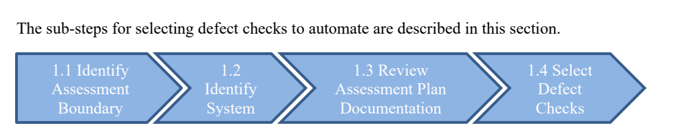
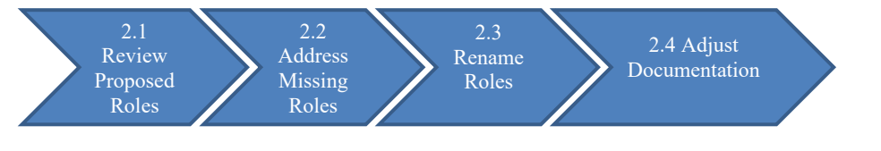
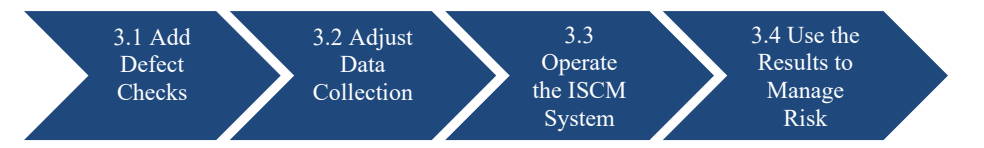

NIST IR 8011 Vol. 4 日本語訳
英語タイトル : Automation Support for Security Control Assessments: Software Vulnerability Management日本語タイトル : セキュリティ管理策評価のための自動化支援：ソフトウェア脆弱性管理
公開日 : 2020-04-28
原文URL : https://csrc.nist.gov/pubs/ir/8011/v4/final
翻訳編集 : 自動生成（有志による非公式の日本語訳）, 原文取得日 : 2026-10-31, 訳文 : 783 / 784 ブロック
[要約] NIST IR 8011 Vol. 4 は、ソフトウェア脆弱性管理（VUL）という情報セキュリティ継続的モニタリング（ISCM）の能力に関連する、NIST SP 800-53 のセキュリティ管理策の評価を自動化するための運用上のアプローチを示す報告書です。NIST IR 8011 の能力別の巻の一つで、ネットワーク上のソフトウェアに存在する欠陥によって生じるリスクの管理を円滑にすることを目的としています。範囲は、ソフトウェアのセキュリティ上の脆弱性とコーディングの弱点（欠陥）を管理するために実装された管理策・管理策項目の評価に限定されています。第 3 節では VUL セキュリティ評価計画の文書テンプレートを示しています。
NISTIR 8011
Volume 4
NISTIR 8011
第 4 巻
Automation Support for Security Control Assessments:
セキュリティ管理策評価のための自動化支援:
Software Vulnerability Management
ソフトウェア脆弱性管理
Kelley Dempsey
Paul Eavy
George Moore
Eduardo Takamura
Kelley Dempsey
Paul Eavy
George Moore
Eduardo Takamura
This publication is available free of charge from:
https://doi.org/10.6028/NIST.IR.8011-4
この刊行物は次のURLから無料で入手できます:
https://doi.org/10.6028/NIST.IR.8011-4
NISTIR 8011
Volume 4
NISTIR 8011
第 4 巻
Automation Support for Security Control Assessments:
セキュリティ管理策評価のための自動化支援:
Software Vulnerability Management
ソフトウェア脆弱性管理
Kelley Dempsey
Eduardo Takamura
Computer Security Division
Information Technology Laboratory
Kelley Dempsey
Eduardo Takamura
Computer Security Division
Information Technology Laboratory
Paul Eavy
Cybersecurity Division
Cybersecurity and Infrastructure Security Agency
Department of Homeland Security
Paul Eavy
Cybersecurity Division
Cybersecurity and Infrastructure Security Agency
Department of Homeland Security
George Moore
George Moore
This publication is available free of charge from:
https://doi.org/10.6028/NIST.IR.8011-4
この刊行物は次のURLから無料で入手できます:
https://doi.org/10.6028/NIST.IR.8011-4
April 2020
2020年4月
U.S. Department of Commerce
Wilbur L. Ross, Jr., Secretary
米国商務省
Wilbur L. Ross, Jr. 長官
National Institute of Standards and Technology
Walter Copan, NIST Director and Under Secretary of Commerce for Standards and Technology
国立標準技術研究所
Walter Copan、NIST 所長兼商務次官（標準・技術担当）
National Institute of Standards and Technology Interagency or Internal Report 8011 Volume 4
112 pages (April 2020)
国立標準技術研究所 省庁間・内部報告書 8011 第 4 巻
112 ページ（2020年4月）
This publication is available free of charge from:
https://doi.org/10.6028/NIST.IR.8011-4
この刊行物は次のURLから無料で入手できます:
https://doi.org/10.6028/NIST.IR.8011-4
Certain commercial entities, equipment, or materials may be identified in this document in order to describe an experimental procedure or concept adequately. Such identification is not intended to imply recommendation or endorsement by NIST, nor is it intended to imply that the entities, materials, or equipment are necessarily the best available for the purpose.
実験の手順や概念を十分に説明するために、この文書では特定の商業団体、機器、または材料を挙げている場合があります。こうした記載は、NIST による推奨や支持を意味するものではなく、挙げられた団体、材料、機器がその目的に利用可能なものの中で必ずしも最良であることを意味するものでもありません。
There may be references in this publication to other publications currently under development by NIST in accordance with its assigned statutory responsibilities. The information in this publication, including concepts and methodologies, may be used by federal agencies even before the completion of such companion publications. Thus, until each publication is completed, current requirements, guidelines, and procedures, where they exist, remain operative. For planning and transition purposes, federal agencies may wish to closely follow the development of these new publications by NIST.
本刊行物では、NIST が割り当てられた法令上の責務に従って現在策定中の他の刊行物に言及している場合があります。概念や方法論を含む本刊行物の情報は、そうした関連刊行物が完成する前であっても、連邦機関が利用してもよいです。したがって、各刊行物が完成するまでは、現行の要件、ガイドライン、手順が存在する場合には、それらが引き続き有効です。計画および移行のため、連邦機関は、NIST によるこれらの新しい刊行物の策定状況を注意深く追うことを検討してもよいです。
Organizations are encouraged to review all draft publications during public comment periods and provide feedback to NIST. Many NIST cybersecurity publications, other than the ones noted above, are available at https://csrc.nist.gov/publications.
組織は、パブリックコメント期間中にすべての草案を確認し、NIST にフィードバックを提供することが推奨されています。上記以外にも、多くの NIST サイバーセキュリティ刊行物が https://csrc.nist.gov/publications で入手できます。
Comments on this publication may be submitted to:
本刊行物に関するコメントの送付先:
National Institute of Standards and Technology
Attn: Computer Security Division, Information Technology Laboratory
100 Bureau Drive (Mail Stop 8930) Gaithersburg, MD 20899-8930
Email: sec-cert@nist.gov
National Institute of Standards and Technology
Attn: Computer Security Division, Information Technology Laboratory
100 Bureau Drive (Mail Stop 8930) Gaithersburg, MD 20899-8930
Email: sec-cert@nist.gov
All comments are subject to release under the Freedom of Information Act (FOIA).
すべてのコメントは、情報自由法（FOIA）に基づく公開の対象となります。
Reports on Computer Systems Technology
コンピュータシステム技術に関する報告書
The Information Technology Laboratory (ITL) at the National Institute of Standards and Technology (NIST) promotes the U.S. economy and public welfare by providing technical leadership for the Nation’s measurement and standards infrastructure. ITL develops tests, test methods, reference data, proof of concept implementations, and technical analyses to advance the development and productive use of information technology. ITL’s responsibilities include the development of management, administrative, technical, and physical standards and guidelines for the cost-effective security and privacy of other than national security-related information in federal information systems.
国立標準技術研究所（NIST）の情報技術研究所（ITL）は、国の測定・標準基盤に対する技術的リーダーシップを提供することで、米国経済と公共の福祉の向上に貢献しています。ITL は、情報技術の開発と生産的な利用を進めるため、テスト、テスト方法、参照データ、概念実証の実装、技術分析を開発しています。ITL の責務には、連邦情報システムにおける国家安全保障関連以外の情報の費用対効果の高いセキュリティとプライバシーを確保するための管理、運用、技術、および物理的な標準とガイドラインを策定することが含まれます。
Abstract
概要
The NISTIR 8011 capability-specific volumes focus on the automation of security control assessment within each individual information security capability. The capability-specific volumes add tangible detail to the more general overview given in NISTIR 8011 Volume 1, providing a template for transition to a detailed, NIST standards-compliant automated assessment. This document, Volume 4 of NISTIR 8011, addresses automating the assessment of security controls that support the software vulnerability management security capability to facilitate the management of risk created by defects present in software on the network. Software vulnerability management, in the scope of this document, focuses on known defects that have been discovered in software in use on a system. The Common Weakness Enumeration (CWE) provides identifiers for weaknesses that result from poor coding practices and have the potential to result in software vulnerabilities. The Common Vulnerabilities and Exposures (CVEs) program provides a list of many known vulnerabilities. Together, CVE and CWE are used to identify software defects and the weaknesses that cause a given defect. Vulnerable software is a key target that attackers use to initiate an attack internally and to expand control.
NISTIR 8011 の能力別の各巻は、個々の情報セキュリティ能力ごとのセキュリティ管理策評価の自動化に焦点を当てています。能力別の各巻は、NISTIR 8011 第 1 巻で示されたより一般的な概要に具体的な詳細を加え、NIST の標準に準拠した詳細な自動化評価へ移行するためのテンプレートを提供します。本書 NISTIR 8011 第 4 巻は、ネットワーク上のソフトウェアに存在する欠陥によって生じるリスクの管理を円滑にするため、ソフトウェア脆弱性管理のセキュリティ能力を支援するセキュリティ管理策の評価の自動化を扱います。本書の範囲におけるソフトウェア脆弱性管理は、システムで使用中のソフトウェアで発見された既知の欠陥に焦点を当てます。Common Weakness Enumeration（CWE）は、不適切なコーディング手法に起因し、ソフトウェアの脆弱性につながる可能性のある弱点の識別子を提供します。Common Vulnerabilities and Exposures（CVE）プログラムは、既知の多くの脆弱性の一覧を提供します。CVE と CWE を併せて用いることで、ソフトウェアの欠陥と、特定の欠陥の原因となった弱点を特定します。脆弱性のあるソフトウェアは、攻撃者が内部で攻撃を開始し、支配を拡大するために用いる主要な標的です。
Keywords
キーワード
actual state; assessment; authorization boundary; automation; capability; Common Vulnerability and Exposure (CVE); Common Weakness Enumeration (CWE); dashboard; defect; desired state specification; dynamic code analyzer; Information Security Continuous Monitoring (ISCM); malicious code; malware; mitigation; ongoing assessment; patch management; root cause analysis; security capability; security control item; security control; software file; Software Identification (SWID) tag; software injection; software product; software vulnerability; software weakness; software; static code analyzer
実際の状態; 評価; 認可境界; 自動化; 能力; Common Vulnerability and Exposure（CVE）; Common Weakness Enumeration（CWE）; ダッシュボード; 欠陥; 望ましい状態の仕様; 動的コード解析ツール; 情報セキュリティ継続的モニタリング（ISCM）; 悪意のあるコード; マルウェア; 緩和; 継続的な評価; パッチ管理; 根本原因分析; セキュリティ能力; セキュリティ管理策項目; セキュリティ管理策; ソフトウェアファイル; Software Identification（SWID）タグ; ソフトウェアインジェクション; ソフトウェア製品; ソフトウェアの脆弱性; ソフトウェアの弱点; ソフトウェア; 静的コード解析ツール
Acknowledgments
謝辞
The authors—Kelley Dempsey and Eduardo Takamura of the National Institute of Standards and Technology (NIST), Paul Eavy of the Department of Homeland Security, and Dr. George Moore—wish to thank their colleagues who reviewed drafts and assisted in the production of this document, including Nathan Aileo, Ujwala Arikatla, Jim Foti, Ned Goren, John Groenveld, Frank Husson, Jaime Miller, Susan Pagan, Ron Ross, David Waltermire, Kimberly Watson, Isabel Van Wyk, Brett Kreider, Nate Lee, Jim Finegan, and Nolda Dooley. The authors also gratefully acknowledge and appreciate the comments and contributions made by government agencies, private organizations, and individuals in providing direction and assistance in the development of this document.
著者である、National Institute of Standards and Technology（NIST）の Kelley Dempsey と Eduardo Takamura、Department of Homeland Security の Paul Eavy、および Dr. George Moore は、草案の査読と本書の作成を支援してくれた同僚の皆様、とりわけ Nathan Aileo、Ujwala Arikatla、Jim Foti、Ned Goren、John Groenveld、Frank Husson、Jaime Miller、Susan Pagan、Ron Ross、David Waltermire、Kimberly Watson、Isabel Van Wyk、Brett Kreider、Nate Lee、Jim Finegan、Nolda Dooley に感謝します。著者はまた、本書の作成にあたり、政府機関、民間組織、個人が方向性を示し支援してくださった、コメントと貢献に対しても、深く感謝いたします。
Document Conventions
文書の表記規則
The terms “shall” and “shall not” indicate requirements to be followed strictly in order to conform to the publication and from which no deviation is permitted.
「shall」および「shall not」という用語は、本刊行物に適合するために厳密に従わなければならず、逸脱が認められない要件を示すものです。
The terms “should” and “should not” indicate that among several possibilities one is recommended as particularly suitable, without mentioning or excluding others, or that a certain course of action is preferred but not necessarily required, or that (in the negative form) a certain possibility or course of action is discouraged but not prohibited.
「should」および「should not」という用語は、複数の可能性のうち、ほかを挙げたり排除したりすることなく、特に適切なものとして一つが推奨されること、ある行動方針が推奨されるものの必ずしも必須ではないこと、または（否定形では）ある可能性や行動方針を取るべきではないとされるものの、禁止はされないことを示します。
The terms “may” and “need not” indicate a course of action permissible within the limits of the publication.
「may」および「need not」という用語は、本刊行物の範囲内で許容される行動方針を示します。
The terms “can” and “cannot” indicate a possibility and capability, whether material, physical or causal.
「can」および「cannot」という用語は、物質的、物理的、または因果的であるかを問わず、可能性と能力を示します。
The security capability designation “VULN” was utilized in previous volumes of NISTIR 8011 in reference to the Software Vulnerability Management security capability. For greater consistency with industry, academia, and other federal agencies, the more widely used designation for the Software Vulnerability Management security capability, “VUL,” replaces VULN herein and in future NISTIR 8011 volumes when referring to the Software Vulnerability Management security capability.
セキュリティ能力の呼称「VULN」は、NISTIR 8011 の以前の各巻で、ソフトウェア脆弱性管理のセキュリティ能力を指すために用いられていました。産業界、学術界、およびその他の連邦機関との一貫性を高めるため、ソフトウェア脆弱性管理のセキュリティ能力を指す場合には、より広く使われている呼称「VUL」が、本書および今後の NISTIR 8011 の各巻で VULN に置き換わります。
Patent Disclosure Notice
特許開示に関する通知
NOTICE: ITL has requested that holders of patent claims whose use may be required for compliance with the guidance or requirements of this publication disclose such patent claims to ITL. However, holders of patents are not obligated to respond to ITL calls for patents and ITL has not undertaken a patent search in order to identify which, if any, patents may apply to this publication.
通知：ITL は、本刊行物のガイダンスまたは要件への準拠に使用が必要となる可能性のある特許請求項の保有者に対し、その特許請求項を ITL に開示するよう要請しています。ただし、特許保有者は ITL からの特許に関する呼びかけに応答する義務を負わず、ITL は、本刊行物に適用される特許があるかどうか、あるとすればどれかを特定するための特許調査を行っていません。
As of the date of publication and following call(s) for the identification of patent claims whose use may be required for compliance with the guidance or requirements of this publication, no such patent claims have been identified to ITL.
本刊行物の発行日の時点で、本刊行物のガイダンスまたは要件への準拠に使用が必要となる可能性のある特許請求について特定を求める呼びかけを行った結果、そのような特許請求は ITL に報告されていません。
No representation is made or implied by ITL that licenses are not required to avoid patent infringement in the use of this publication.
ITL は、本刊行物の利用にあたって特許侵害を避けるためにライセンスが不要であるとの表明を、明示的にも黙示的にも行うものではありません。
Executive Summary
エグゼクティブサマリー
The National Institute of Standards and Technology (NIST) and the Department of Homeland Security (DHS) have collaborated on the development of a process that automates the test assessment method described in NIST Special Publication (SP) 800-53A for the security controls catalogued in NIST SP 800-53. This process is consistent with the Risk Management Framework described in NIST SP 800-37 and the Information Security Continuous Monitoring (ISCM) guidance in NIST SP 800-137. The multi-volume NIST Interagency Report 8011 (NISTIR 8011) has been developed to provide information on automation support for ongoing assessments. NISTIR 8011 describes how ISCM facilitates automated, ongoing assessment to provide near-real-time security-related information to organizational officials on the security posture of individual systems and the organization as a whole.
National Institute of Standards and Technology（NIST）と Department of Homeland Security（DHS）は、NIST SP 800-53 に収録されているセキュリティ管理策について、NIST Special Publication（SP）800-53A に記述されているテスト評価方法を自動化するプロセスの策定で協力してきました。このプロセスは、NIST SP 800-37 に記述されているリスク管理フレームワークおよび NIST SP 800-137 の情報セキュリティ継続的モニタリング（ISCM）ガイダンスと整合しています。複数巻からなる NIST Interagency Report 8011（NISTIR 8011）は、継続的な評価の自動化支援に関する情報を提供するために策定されました。NISTIR 8011 は、ISCM が自動化された継続的な評価をどのように円滑にし、個々のシステムおよび組織全体のセキュリティ態勢に関するセキュリティ関連情報を、ほぼリアルタイムで組織の責任者に提供するかを説明しています。
NISTIR 8011, Volume 1 includes a description of ISCM Security Capabilities—groups of security controls working together to achieve a common purpose. The subsequent NISTIR 8011 volumes are capability-specific. Each volume focuses on one specific ISCM information security capability in order to (a) add tangible detail to the more general overview given in NISTIR 8011 Volume 1 and (b) provide a template for the transition to detailed, standards-compliant automated assessments. NISTIR 8011, Volume 4 assumes the reader is familiar with the concepts and ideas presented in the Overview (NISTIR 8011, Volume 1) as well as concepts and terms from the NIST Risk Management Framework (RMF) [SP800-37]. Many terms used herein are defined in NIST SP 800-37 or in the NISTIR 8011 Volume 1 glossary.
NISTIR 8011 第 1 巻には、ISCM セキュリティ能力、すなわち共通の目的を達成するために連携して機能するセキュリティ管理策のグループの説明が含まれています。それ以降の NISTIR 8011 の各巻は能力別になっています。各巻は、(a) NISTIR 8011 第 1 巻で示されたより一般的な概要に具体的な詳細を加え、(b) 標準に準拠した詳細な自動化評価へ移行するためのテンプレートを提供するために、特定の ISCM 情報セキュリティ能力の 1 つに焦点を当てています。NISTIR 8011 第 4 巻は、読者が、概要（NISTIR 8011 第 1 巻）で示された概念や考え方、および NIST リスク管理フレームワーク（RMF）[SP800-37] の概念と用語に精通していることを前提としています。本書で使われる多くの用語は、NIST SP 800-37 または NISTIR 8011 第 1 巻の用語集で定義されています。
This publication, Volume 4 of NISTIR 8011, immediately follows Hardware Asset Management (HWAM) and Software Asset Management (SWAM) capabilities published as Volumes 2 and 3 respectively. Although it was planned to be released as Volume 5, following Configuration Settings Management (CSM), the VUL capability is being addressed as Volume 4 in the NISTIR 8011 series due to its close relationship with software. Its objective is to address the management of risk created by defects present in software on the network. A software vulnerability is caused by one or more known defects that have been discovered in software, and that can be exploited to affect an adverse security or privacy outcome.1 Vulnerable software is software in use on a system that has a software vulnerability but has not yet been patched or otherwise mitigated. The Common Weakness Enumeration (CWE) provides identifiers for weaknesses that result from poor design or coding practices and have the potential to result in software vulnerabilities. The Common Vulnerabilities and Exposures (CVEs) program works with software providers, vulnerability coordinators, bug bounty programs, and vulnerability researchers to provide a list of publicly disclosed vulnerabilities. Together, CVE and CWE are used to identify software defects and the weaknesses that caused a given defect respectively. Vulnerable software is a key target that attackers use to initiate an attack and to expand control within a system. Patching vulnerabilities discovered in existing software and improving coding practices for future releases of software are two ways to limit the success of attacks.
本刊行物 NISTIR 8011 第 4 巻は、第 2 巻と第 3 巻としてそれぞれ公表されたハードウェア資産管理（HWAM）とソフトウェア資産管理（SWAM）の能力に続くものです。当初は構成設定管理（CSM）に続く第 5 巻として公表する予定でしたが、ソフトウェアとの密接な関係から、VUL 能力は NISTIR 8011 シリーズの第 4 巻として扱われています。その目的は、ネットワーク上のソフトウェアに存在する欠陥によって生じるリスクの管理に対処することです。ソフトウェアの脆弱性は、ソフトウェアで発見された 1 つ以上の既知の欠陥によって生じ、セキュリティまたはプライバシーに悪影響を及ぼすために悪用される可能性があります。1 脆弱性のあるソフトウェアとは、システムで使用中のソフトウェアのうち、ソフトウェアの脆弱性があり、まだパッチが適用されていない、またはその他の方法で緩和されていないものです。Common Weakness Enumeration（CWE）は、不適切な設計やコーディング手法に起因し、ソフトウェアの脆弱性につながる可能性のある弱点の識別子を提供します。Common Vulnerabilities and Exposures（CVE）プログラムは、ソフトウェア提供者、脆弱性調整者、バグバウンティプログラム、脆弱性研究者と連携して、公に開示された脆弱性の一覧を提供します。CVE と CWE を併せて用いることで、ソフトウェアの欠陥と、特定の欠陥の原因となった弱点をそれぞれ特定します。脆弱性のあるソフトウェアは、攻撃者がシステム内で攻撃を開始し、支配を拡大するために用いる主要な標的です。既存のソフトウェアで発見された脆弱性にパッチを適用することと、今後のソフトウェアのリリースに向けてコーディング手法を改善することは、攻撃の成功を抑えるための 2 つの方法です。
The term vulnerability is used herein to denote software vulnerability as opposed to the more general use of the term vulnerability. See glossary for the distinction.
本書では、脆弱性という用語は、より一般的な意味での脆弱性ではなく、ソフトウェアの脆弱性を指します。両者の違いについては用語集を参照してください。
Known vulnerabilities are the most likely flaws to be exploited. Risk from known vulnerabilities is reduced by implementing the software vulnerability management (VUL) capability. The VUL capability focuses on managing known vulnerabilities and common sources of software flaws known to produce vulnerabilities.
既知の脆弱性は、悪用される可能性が最も高い欠陥です。既知の脆弱性によるリスクは、ソフトウェア脆弱性管理（VUL）能力を実装することで低減されます。VUL 能力は、既知の脆弱性と、脆弱性を生むことが知られているソフトウェアの欠陥の一般的な原因の管理に焦点を当てています。
When known software vulnerabilities are unmanaged, uncorrected, or undetected, software is left open to exploitation. As a result, vulnerable software is a key target that attackers use to initiate an attack on an organization’s network and expand control to attack other components on that network. A well-designed vulnerability management capability helps prevent software with vulnerabilities from being installed on a network, detect software with vulnerabilities already installed on a network, and respond to the vulnerabilities detected (e.g., by patching the vulnerabilities or through other mitigations). Automated assessment of known software vulnerabilities and weaknesses helps verify that the software vulnerability management capability is working. When known vulnerabilities are managed, the level of effort needed to initiate an attack and expand control to other components on the network is increased since the attacker must identify another method of attack.
既知のソフトウェアの脆弱性が管理されず、修正されず、または検出されないままになっていると、ソフトウェアは悪用されやすい状態に置かれます。その結果、脆弱性のあるソフトウェアは、攻撃者が組織のネットワークへの攻撃を開始し、そのネットワーク上のほかの構成要素を攻撃するために支配を拡大するのに用いる主要な標的になります。適切に設計された脆弱性管理能力は、脆弱性のあるソフトウェアがネットワークにインストールされるのを防ぎ、すでにネットワークにインストールされている脆弱性のあるソフトウェアを検出し、検出した脆弱性に（たとえば、脆弱性へのパッチの適用やその他の緩和策によって）対応するのに役立ちます。既知のソフトウェアの脆弱性と弱点の自動化された評価は、ソフトウェア脆弱性管理能力が機能していることを検証するのに役立ちます。既知の脆弱性が管理されていれば、攻撃者は別の攻撃手段を見つけなければならないため、攻撃を開始してネットワーク上のほかの構成要素へ支配を拡大するのに必要な労力が増大します。
Risk from unknown vulnerabilities is reduced primarily by implementing the software asset management capability (whitelisting) [IR8011-3], and by limiting the use of software to an organizationally approved list. When software whitelisting is effective, unauthorized software is blocked, thereby limiting vulnerabilities to only those remaining in the organization’s authorized software. Additionally, the VUL capability can potentially address unknown vulnerabilities by scanning for poor coding practices (e.g., CWEs). Scanning for CWEs can make unknown vulnerabilities known so they can be addressed. Thus, while the primary focus of the VUL capability is on known vulnerabilities (e.g., CVEs), risk associated with unknown vulnerabilities is also addressed by the focus on common sources of software flaws (e.g., CWEs).
未知の脆弱性によるリスクは、主にソフトウェア資産管理能力（ホワイトリスト化）[IR8011-3] を実装し、ソフトウェアの使用を組織が承認した一覧に限定することで低減されます。ソフトウェアのホワイトリスト化が有効であれば、認可されていないソフトウェアはブロックされるため、脆弱性は組織が認可したソフトウェアに残るものだけに限定されます。さらに、VUL 能力は、不適切なコーディング手法（たとえば CWE）をスキャンすることで、未知の脆弱性にも対処できる可能性があります。CWE をスキャンすることで、未知の脆弱性を既知のものにでき、対処できるようになります。したがって、VUL 能力の主な焦点は既知の脆弱性（たとえば CVE）ですが、ソフトウェアの欠陥の一般的な原因（たとえば CWE）にも焦点を当てることで、未知の脆弱性に関連するリスクにも対処します。
NISTIR 8011, Volume 4 outlines detailed, step-by-step processes to automate the assessment of security controls that support vulnerability management implemented for a given assessment boundary (target network) and to apply the results to the assessment of all authorization boundaries within that network. A process is also provided to implement the assessment (diagnosis) and response to a discovered vulnerability. Automated testing related to the controls for the VUL capability, as outlined herein, is consistent with other NIST guidance.
NISTIR 8011 第 4 巻は、特定の評価境界（対象ネットワーク）について実装された脆弱性管理を支援するセキュリティ管理策の評価を自動化し、その結果を当該ネットワーク内のすべての認可境界の評価に適用するための、詳細な段階的プロセスを示します。また、発見された脆弱性に対する評価（診断）と対応を実施するためのプロセスも提供します。ここに示す、VUL 能力に関する管理策の自動化されたテストは、NIST のほかのガイダンスと整合しています。
NISTIR 8011, Volume 4 documents a detailed assessment plan to evaluate the effectiveness of controls related to vulnerability management. Included are specific tests that form the basis for such a plan, how the tests apply to specific controls, and the resources needed to operate and use the assessment to mitigate defects found. For the VUL capability, it can be shown that the assessment of 87.5 %2 of determination statements for controls in the NIST SP 800-53 Low-Medium-High baselines can be fully or partially automated.
NISTIR 8011 第 4 巻は、脆弱性管理に関連する管理策の有効性を評価するための、詳細な評価計画を文書化しています。ここには、そうした計画の基礎となる具体的なテスト、そのテストが特定の管理策にどのように適用されるか、評価を運用し、検出された欠陥を緩和するために利用するために必要なリソースが含まれます。VUL 能力については、NIST SP 800-53 の低・中・高ベースラインの管理策に関する判定文の 87.5 %2 の評価を、完全にまたは部分的に自動化できることを示せます。
The methods outlined here are designed to provide objective, timely, and complete identification of defects in the effectiveness of security controls supporting the VUL capability, facilitating risk management at a lower cost than manual assessment methods. Using security control defect information can drive the most efficient and effective responses to the security defects found.
ここに示す方法は、VUL 能力を支援するセキュリティ管理策の有効性における欠陥を、客観的に、適時に、かつ網羅的に特定するように設計されており、手動の評価方法よりも低いコストでリスク管理を円滑にします。セキュリティ管理策の欠陥の情報を用いることで、検出されたセキュリティ上の欠陥に対し、最も効率的かつ効果的な対応を促せます。
Table of Contents
目次
List of Appendices
付録の一覧
List of Figures
図の一覧
List of Tables
表の一覧
1 Introduction
1 はじめに
1.1 Purpose and Scope
1.1 目的と範囲
The purpose of the National Institute of Standards and Technology (NIST) Interagency Report (NISTIR) 8011, Volume 4 is to provide an operational approach for automating the assessment of NIST SP 800-53 [SP800-53] security controls related to the Information Security Continuous Monitoring (ISCM) security capability of software vulnerability management (VUL). The VUL capability is consistent with the principles outlined in NISTIR 8011, Volume 1 [IR8011-1].
National Institute of Standards and Technology（NIST）Interagency Report（NISTIR）8011 第 4 巻の目的は、ソフトウェア脆弱性管理（VUL）という情報セキュリティ継続的モニタリング（ISCM）のセキュリティ能力に関連する NIST SP 800-53 [SP800-53] のセキュリティ管理策の評価を自動化するための、運用上のアプローチを提供することです。VUL 能力は、NISTIR 8011 第 1 巻 [IR8011-1] で示された原則と整合しています。
The scope of this report is limited to the assessment of security controls/control items that are implemented for managing software security vulnerabilities and coding weaknesses, also referred to as flaws, as defined in NIST SP 800-53.
本報告書の範囲は、NIST SP 800-53 で定義されているとおり、ソフトウェアのセキュリティ上の脆弱性とコーディングの弱点（欠陥とも呼ばれます）を管理するために実装されたセキュリティ管理策・管理策項目の評価に限定されます。
1.2 Target Audience
1.2 想定読者
Because it is focused on the VUL capability, NISTIR 8011, Volume 4 is of special relevance to those who authorize, download, install, and/or execute software—particularly software patches. In addition, NISTIR 8011, Volume 4 is relevant to those who design, code, and test software, and those who wish to understand the risks that software might impose on non-software assets.
NISTIR 8011 第 4 巻は、VUL 能力に焦点を当てているため、ソフトウェア、特にソフトウェアのパッチを認可し、ダウンロードし、インストールし、または実行する人々に特に関係があります。さらに、NISTIR 8011 第 4 巻は、ソフトウェアを設計し、コーディングし、テストする人々や、ソフトウェアがソフトウェア以外の資産に及ぼしうるリスクを理解したい人々にも関係があります。
1.3 Organization of this Volume
1.3 本巻の構成
Section 2 provides an overview of the VUL capability to clarify both scope and purpose and provides links to additional information specific to the VUL capability. Section 3 provides detailed information on the VUL defect checks and how the defect checks are used to automate assessment of the effectiveness of NIST SP 800-53 security controls and control items that support the VUL capability. Section 3 also provides artifacts that can be used by an organization to produce an automated security control assessment plan for most of the control items supporting software vulnerability management.
2 節では、範囲と目的の両方を明確にするために VUL 能力の概要を示し、VUL 能力に固有の追加情報へのリンクを提供します。3 節では、VUL の欠陥チェックと、その欠陥チェックを用いて VUL 能力を支援する NIST SP 800-53 のセキュリティ管理策・管理策項目の有効性の評価を自動化する方法について、詳細な情報を提供します。3 節では、ソフトウェア脆弱性管理を支援する管理策項目の大半について、組織が自動化されたセキュリティ管理策評価計画を作成するために使用できる成果物も提供します。
1.4 Interaction with Other Volumes in this NISTIR
1.4 本 NISTIR のほかの巻との関係
Volume 1 of this NISTIR (Overview) provides a conceptual synopsis of using automation to support security control assessment as well as definitions and background information that facilitate understanding of the information in this and subsequent volumes.3 NISTIR 8011, Volume 4 assumes that the reader is familiar with the information in Volume 1 as well as concepts and terms from the NIST Risk Management Framework [SP800-37].
本 NISTIR の第 1 巻（概要）は、自動化を用いてセキュリティ管理策の評価を支援することの概念的な要約と、本巻およびそれ以降の巻の情報の理解を助ける定義と背景情報を提供しています。3 NISTIR 8011 第 4 巻は、読者が第 1 巻の情報、および NIST リスク管理フレームワーク [SP800-37] の概念と用語に精通していることを前提としています。
The VUL capability detects vulnerable software that has been loaded on or is being executed within the target network, and responds in accordance with organizational policy. Identifying vulnerable software allows vulnerabilities to be mitigated. The VUL capability depends on the
VUL 能力は、対象ネットワークにロードされた、または対象ネットワーク内で実行されている脆弱性のあるソフトウェアを検出し、組織のポリシーに従って対応します。脆弱性のあるソフトウェアを特定することで、脆弱性を緩和できます。VUL 能力は、
Software Asset Management (SWAM) capability [IR8011-3] to provide an inventory of installed software. The inventory is then examined to detect the presence of known vulnerabilities and poor coding practices. Changing configuration settings (the subject of the Configuration Setting Management (CSM) capability in a future NISTIR 8011 volume) can sometimes be used to mitigate vulnerabilities by disabling or otherwise protecting vulnerable software features, especially when patches are not available, thereby supporting software vulnerability management.
ソフトウェア資産管理（SWAM）能力 [IR8011-3] に依存して、インストールされているソフトウェアの一覧を得ます。その一覧を調べて、既知の脆弱性と不適切なコーディング手法の有無を検出します。構成設定の変更（今後の NISTIR 8011 の巻で扱う構成設定管理（CSM）能力の対象）は、特にパッチが利用できない場合に、脆弱なソフトウェアの機能を無効にするなどして保護することで、脆弱性を緩和するために使えることがあり、ソフトウェア脆弱性管理を支援します。
In practice, vulnerability scanning software is often used to find vulnerable software. If the metadata used to guide software scanning is organized appropriately4, the same digital fingerprints used for whitelisting [IR8011-3] can be used to accurately and reliably identify vulnerable code as further discussed in Section 2.5.2.3.
実際には、脆弱性のあるソフトウェアを見つけるために、脆弱性スキャンソフトウェアがよく使われます。ソフトウェアのスキャンを導く際に用いるメタデータが適切に整理されていれば4、ホワイトリスト化 [IR8011-3] に用いるものと同じデジタルフィンガープリントを使って、2.5.2.3 節でさらに論じるように、脆弱なコードを正確かつ確実に特定できます。
2 Software Vulnerability Management (VUL) Capability Definition, Overview, and Scope
2 ソフトウェア脆弱性管理（VUL）能力の定義、概要、範囲
Software vulnerability management recognizes that even authorized software—software that has been assessed and approved by the organization for execution on a system—can have known vulnerabilities and (presumably) unknown instances of coding weaknesses that result in vulnerabilities. Networked devices with coding defects in authorized software are also exploitable. A key attack vector for external and internal attackers is to exploit software defects, either for what the software itself can offer or as a platform from which to attack other assets. Attacks can make use of previously unknown software vulnerabilities (often referred to as zero-day vulnerabilities), although attacks against known vulnerabilities are more likely to be attempted. By assigning software with flaws to a person or team for response, the VUL capability helps reduce the probability that attackers find and exploit software weaknesses and vulnerabilities.
ソフトウェア脆弱性管理は、認可されたソフトウェア、すなわちシステム上で実行することを組織が評価し承認したソフトウェアであっても、既知の脆弱性や、脆弱性につながる（おそらく）未知のコーディングの弱点が存在しうることを前提としています。認可されたソフトウェアにコーディングの欠陥があるネットワーク接続デバイスも、悪用される可能性があります。外部および内部の攻撃者にとって主要な攻撃経路は、ソフトウェア自体が提供するものを利用するため、あるいはほかの資産を攻撃するための踏み台として、ソフトウェアの欠陥を悪用することです。攻撃では、以前は知られていなかったソフトウェアの脆弱性（しばしばゼロデイ脆弱性と呼ばれます）を利用できますが、既知の脆弱性に対する攻撃のほうが試みられる可能性が高いです。VUL 能力は、欠陥のあるソフトウェアを担当者またはチームに割り当てて対応させることで、攻撃者がソフトウェアの弱点や脆弱性を見つけて悪用する可能性を低減するのに役立ちます。
2.1 Find Defects/Prioritize Response
2.1 欠陥の発見と対応の優先順位付け
The VUL capability gives an organization visibility into the vulnerabilities in software authorized to operate—or being considered for authorization to operate – on its network(s)5. Visibility into the vulnerabilities allows the organization to manage and defend itself in an appropriate manner. The VUL capability also provides a view of software management responsibility that helps prioritize identified defects and facilitate risk response decisions (e.g., mitigation or acceptance) by the assigned managers.
VUL 能力は、組織が自らのネットワーク5上で運用を認可されている、または運用の認可が検討されているソフトウェアの脆弱性を可視化します。脆弱性が可視化されることで、組織は適切な方法で自らを管理し防御できます。VUL 能力は、ソフトウェア管理責任の見通しも提供し、特定された欠陥の優先順位付けと、割り当てられた管理者によるリスク対応の意思決定（たとえば、緩和または受容）を円滑にするのに役立ちます。
The VUL capability identifies software that is present on the network (the actual state) and compares it with the desired state software inventory to determine if there are less vulnerable (usually newer) versions of software that can be deployed or if non-patch-related mitigation strategies are needed.6 The VUL capability is focused on ensuring that all software operating on the target network poses as little risk from known vulnerabilities as possible, and that an effective patching and response policy7 is applied.
VUL 能力は、ネットワーク上に存在するソフトウェア（実際の状態）を特定し、それを望ましい状態のソフトウェアインベントリと比較して、展開できる脆弱性のより少ない（通常はより新しい）バージョンのソフトウェアがあるかどうか、またはパッチ以外の緩和戦略が必要かどうかを判断します。6 VUL 能力は、対象ネットワーク上で動作するすべてのソフトウェアが、既知の脆弱性によるリスクを可能な限り小さくすること、および効果的なパッチ適用と対応のポリシー7が適用されることを確実にすることに焦点を当てています。
Note that Volume 3 of NISTIR 8011 defines software to include firmware. The same definition is used in this volume.
NISTIR 8011 第 3 巻では、ソフトウェアにファームウェアを含めると定義しています。本巻でも同じ定義を用います。
Software (code), as used here, includes a range of assets that might not always be thought of as software. Such software assets include:
ここで使うソフトウェア（コード）には、必ずしもソフトウェアと考えられない場合がある、さまざまな資産が含まれます。そのようなソフトウェア資産には次のものがあります。
•Installed software files and products listed in the operating system software database (e.g., Windows Registry, Linux package manager);
•オペレーティングシステムのソフトウェアデータベース（たとえば、Windows レジストリ、Linux のパッケージマネージャー）に一覧されている、インストール済みのソフトウェアファイルおよび製品；
•Software files and products residing on a hard drive but not listed in the operating system database;
•ハードドライブ上に存在するが、オペレーティングシステムのデータベースに一覧されていないソフトウェアファイルおよび製品；
•Mobile code;
•モバイルコード
•Firmware, if it can be modified (usually includes the BIOS); and
•変更可能なファームウェア（通常は BIOS を含む）
•Code in memory (which could be modified in place).
•メモリ内のコード（その場で変更される可能性があります）
2.2 VUL Attack Scenarios and Desired Result
2.2 VUL の攻撃シナリオと望ましい結果
NISTIR 8011 uses an attack step model to summarize the six primary steps of cyber-attacks that NIST SP 800-53 controls work together to block or delay. The VUL security capability is intended to block or delay attacks only at the attack steps addressed in Figure 1 and Table 1.
NISTIR 8011 は、攻撃ステップモデルを用いて、NIST SP 800-53 の管理策が連携して阻止または遅延させる、サイバー攻撃の 6 つの主要なステップを要約しています。VUL セキュリティ能力は、図 1 と表 1 で扱う攻撃ステップに限って、攻撃を阻止または遅延させることを意図しています。
| Attack Steps | VUL Impacts |
|---|---|
| 1) Gain Internal Entry | |
| 2) Initiate Attack | Block Attempted Compromise: Stop or delay the compromise of devices due to software vulnerabilities and weaknesses |
| 3) Gain Foothold | |
| 4) Gain Persistence | |
| 5) Expand Control – Escalate or Propagate | Block Expansion: Stop or delay expansion or escalation via software vulnerabilities and weaknesses |
| 6) Achieve Attack Objective |
| 攻撃ステップ | VUL の影響 |
|---|---|
| 1) 内部への侵入 | |
| 2) 攻撃の開始 | 試みられた危殆化の阻止: ソフトウェアの脆弱性や弱点によるデバイスの危殆化を停止または遅延させる |
| 3) 足場の確保 | |
| 4) 永続性の確保 | |
| 5) 支配の拡大 – 昇格または伝播 | 拡大の阻止: ソフトウェアの脆弱性や弱点を介した拡大や昇格を停止または遅延させる |
| 6) 攻撃目標の達成 |
Figure 1: VUL Impact on an Attack Step Model
図 1: 攻撃ステップモデルに対する VUL の影響
Notes on Figure 1
図 1 に関する注記
The attack steps shown in Figure 1 apply only to adversarial attacks. (See NISTIR 8011, Volume 1, Section 3.2.)
図 1 に示す攻撃ステップは、敵対的な攻撃にのみ当てはまります。（NISTIR 8011 第 1 巻の 3.2 節を参照してください。）
If the initiated attack succeeds in Step 2, the normal attack progression is that the attacker immediately gains a foothold on the affected device (via the software) in Step 3. Step 5 (propagation, expansion of control) includes a loop back to Step 2 on a different device from the one compromised in Step 5.
開始された攻撃がステップ 2 で成功した場合、通常は、攻撃者はステップ 3 で（ソフトウェアを介して）影響を受けたデバイスに直ちに足場を確保します。ステップ 5（伝播、支配の拡大）には、ステップ 5 で危殆化したデバイスとは異なるデバイスでステップ 2 に戻るループが含まれます。
Table 1: VUL Impact on an Attack Step Model
表 1: 攻撃ステップモデルに対する VUL の影響
| Attack Step Name | Attack Step Purpose (General) | Capability-Specific Defense |
|---|---|---|
| 2) Initiate Attack Internally | The attacker is inside the boundary and initiates an attack on some assessment object inside the boundary. General examples (not limited to the VUL capability) include but are not limited to: user opens spear phishing email and/or clicks on attachment, laptop lost or stolen, user installs unauthorized software and/or hardware, unauthorized personnel gain physical access to restricted facility. | Block Attempted Compromise: Stop or delay the compromise of devices due to software vulnerabilities. Specific examples (for the VUL capability) include but are not limited to: unauthorized software, weak setting configuration, and incomplete patching. |
| 5) Expand Control - Escalate or Propagate | The attacker has persistence on the assessment object and seeks to expand control by escalation of privileges on the assessment object or propagation to another assessment object. General examples (not limited to the VUL capability) include but are not limited to: administrator privileges hijacked and/or stolen, administrator’s password used by unauthorized party, secure configuration is changed and/or audit function is disabled, authorized users access resources the users do not need to perform job, process or program that runs as root is compromised and/or hijacked. | Block Expansion: Stop or delay expansion or escalation via software vulnerabilities. Specific examples (for the VUL capability) include but are not limited to: unauthorized software, weak setting configuration, and incomplete patching. |
| 攻撃ステップ名 | 攻撃ステップの目的（一般） | 能力固有の防御 |
|---|---|---|
| 2) 内部から攻撃を開始 | 攻撃者は境界の内側にいて、境界内のいずれかの評価対象に対する攻撃を開始します。 一般的な例（VUL能力に限らない）には、ユーザーがスピアフィッシングメールを開く、または添付ファイルをクリックすること、ノートPCの紛失または盗難、ユーザーが認可されていないソフトウェアやハードウェアをインストールすること、無権限の人員が立入制限施設に物理的にアクセスすることが含まれますが、これらに限りません。 | 危殆化の試みを阻止：ソフトウェアの脆弱性によるデバイスの危殆化を停止または遅延させます。 具体的な例（VUL能力）には、認可されていないソフトウェア、脆弱な設定、不完全なパッチ適用が含まれますが、これらに限りません。 |
| 5) 制御の拡大 - 権限昇格または伝播 | 攻撃者は評価対象上で持続的なアクセスを確保しており、評価対象上での権限昇格、または別の評価対象への伝播によって制御を拡大しようとします。 一般的な例（VUL能力に限らない）には、管理者権限の乗っ取りまたは窃取、無権限の者による管理者パスワードの使用、セキュアな構成の変更または監査機能の無効化、職務の遂行に必要のないリソースへの認可ユーザーのアクセス、rootとして実行されるプロセスまたはプログラムの危殆化または乗っ取りが含まれますが、これらに限りません。 | 拡大を阻止：ソフトウェアの脆弱性を介した制御の拡大または権限昇格を停止または遅延させます。 具体的な例（VUL能力）には、認可されていないソフトウェア、脆弱な設定、不完全なパッチ適用が含まれますが、これらに限りません。 |
Other examples of traceability among requirement levels. While Table 1 shows software vulnerability management impacts on example attack steps, it is frequently useful to observe traceability among other sets of requirements. To examine such traceability, use Table 2 to reveal traceability from one requirement type to another by looking up the cell in the matching row and column of interest, and clicking on the link. For example, clicking on the link to Table 6 in the “Example Attack Steps” column reveals traceability between the Attack Step and the Sub-Capability/Defect Check ID, Name, and Purpose.
要件レベル間の追跡可能性のその他の例。表1は攻撃ステップの例に対するソフトウェア脆弱性管理の影響を示していますが、ほかの要件の組の間の追跡可能性を確認すると役立つことがよくあります。そうした追跡可能性を調べるには、表2で対象とする行と列が交わるセルを参照し、そのリンクをクリックして、ある種類の要件から別の種類の要件への追跡可能性を確認します。たとえば、「攻撃ステップの例」列にある表6へのリンクをクリックすると、攻撃ステップとサブ能力／欠陥チェックのID、名称、目的との間の追跡可能性を確認できます。
Full traceability from controls to attack steps requires the following links in a path:
管理策から攻撃ステップまでの完全な追跡可能性には、経路上の次のリンクが必要です。
1.Control-to-control item (provided by control item nomenclature)
1.管理策から管理策項目へ（管理策項目の命名規則により提供される）
2.Control item-to-determination statement (see Section 3.3)
2.管理策項目から判定文へ（3.3 節を参照）
3.Determination statement-to-defect check (aka, sub-capability; see Section 3.3)
3.判定文から欠陥チェック（別名、サブ能力。3.3 節を参照）へ
4.Defect check (aka, sub-capability)-to-capability (provided by sub-capability nomenclature)
4.欠陥チェック（別名、サブ能力）から能力へ（サブ能力の命名規則により提供される）
5.Defect check (and thus capability)-to-attack steps (see Table 6)
5.欠陥チェック（したがって能力）から攻撃ステップへ（表 6 を参照）
6.Capability-to-attack steps (see Figure 1 which is a summary of Table 6)
6.能力から攻撃ステップへ（表 6 の要約である図 1 を参照）
Table 2: Traceability Among Requirement Levels
表 2: 要件レベル間の追跡可能性
| Example Attack Steps | Capability | Sub-Capability/ Defect Check | Control Items | |
|---|---|---|---|---|
| Example Attack Steps | Figure 1 Table 1 | Table 6 | ||
| Capability | Figure 1 Table 1 | Table 6 | Section 3.3a | |
| Sub-Capability/ Defect Check | Table 6 | Table 6 | Section 3.3b | |
| Control Items | Section 3.3a | Section 3.3b |
| 攻撃ステップの例 | 能力 | サブ能力/ 欠陥チェック | 管理策項目 | |
|---|---|---|---|---|
| 攻撃ステップの例 | 図 1 表 1 | 表 6 | ||
| 能力 | 図 1 表 1 | 表 6 | 3.3 節a | |
| サブ能力/ 欠陥チェック | 表 6 | 表 6 | 3.3 節b | |
| 管理策項目 | 3.3 節a | 3.3 節b |
a Each level-four section (e.g., 3.3.1.1) is a control item that supports this capability.
a 第 4 階層の各節（たとえば 3.3.1.1）は、この能力を支援する管理策項目です。
b Refer to the table under the heading Supporting Control Items within each defect check.
b 各欠陥チェック内の「支援する管理策項目」という見出しの下にある表を参照してください。
2.3 Assessment Objects Managed and Assessed by VUL
2.3 VUL によって管理・評価される評価対象
The objects managed and assessed by the VUL capability include software flaws and hardware flaws mitigated through software.8 Two kinds of software flaws are directly managed and assessed by the VUL capability: (1) Common Vulnerabilities and Exposures (CVEs) [CVE] identified, analyzed, and proven to exist in specific versions and patch levels of software files in use on devices; and (2) poor programming practices, called Common Weakness Enumerations (CWEs) [CWE], revealed in software code of software products and files in use on devices. Devices are protected when levels of risk arising from CVEs and CWEs contained in the software running on them are kept within organizational risk tolerances.
VUL能力によって管理・評価される対象には、ソフトウェアの欠陥と、ソフトウェアによって緩和されるハードウェアの欠陥が含まれます。8 VUL能力は、次の2種類のソフトウェアの欠陥を直接管理・評価します。(1) デバイスで使用中のソフトウェアファイルの特定のバージョンおよびパッチレベルに存在することが特定、分析され、実証されたCommon Vulnerabilities and Exposures（CVE）[CVE]、(2) デバイスで使用中のソフトウェア製品およびファイルのコードに現れる、Common Weakness Enumerations（CWE）[CWE]と呼ばれる不適切なプログラミング手法。デバイス上で動作するソフトウェアに含まれるCVEおよびCWEに起因するリスクのレベルが、組織のリスク許容度の範囲内に保たれているとき、デバイスは保護されています。
The number of software flaws present on a system rises and falls over time. The number increases as flaws are discovered and decreases as flaws are mitigated. Assessments need to be periodically repeated to maintain currency of information.
システムに存在するソフトウェアの欠陥の数は、時間とともに増減します。欠陥が発見されると増え、欠陥が緩和されると減ります。情報の最新性を維持するために、評価は定期的に繰り返す必要があります。
The VUL capability concentrates on protecting from known vulnerabilities for which potential attackers can easily and cheaply obtain knowledge and tools to guide their exploits. For most known vulnerabilities, patches exist to repair the vulnerabilities (if a patch does not yet exist, the vulnerability is considered to be a zero-day vulnerability, since the vulnerability has been disclosed but no mitigation is available; see Section 2.3.1). Unfortunately, known vulnerabilities are not always patched in a timely manner, which means that at any point in time some systems and system components likely have unpatched, exploitable software vulnerabilities.
VUL 能力は、潜在的な攻撃者が、攻撃の手引きとなる知識とツールを容易かつ安価に入手できる既知の脆弱性からの保護に重点を置いています。既知の脆弱性の大半には、脆弱性を修復するパッチが存在します（パッチがまだ存在しない場合、その脆弱性は、脆弱性が開示されたものの緩和策が利用できないため、ゼロデイ脆弱性とみなされます。2.3.1 節を参照してください）。残念ながら、既知の脆弱性は必ずしも適時にパッチが適用されるとは限らず、つまり、いつの時点でも、一部のシステムやシステム構成要素には、パッチが適用されていない、悪用可能なソフトウェアの脆弱性がある可能性が高いということです。
An effective vulnerability management program—even one that is concentrating only on known vulnerabilities—is still useful in defending against well-funded, highly motivated, or capable attackers. Sophisticated attackers spend significant resources to find, weaponize, and conceal unknown vulnerabilities. They are frugal in deploying the weaponized unknown vulnerabilities, because the act of using the vulnerability risks revealing the vulnerability (i.e., taking it from unknown to known) and, once known, could lead to mitigation and neutralization by defenders. Well-funded and highly capable/motivated attackers, therefore, often prefer to exploit known vulnerabilities because known vulnerabilities are very cost-effective to attack and using them does not require spending precious unknown vulnerabilities to achieve the attack objectives. As such, if software is protected against known vulnerabilities, it raises the cost for even sophisticated attackers to succeed.
効果的な脆弱性管理プログラムは、たとえ既知の脆弱性だけに集中するものであっても、潤沢な資金を持つ、意欲の高い、または高い能力を持つ攻撃者から防御するうえで有用です。高度な攻撃者は、未知の脆弱性を見つけ、兵器化し、隠蔽するために多大なリソースを費やします。脆弱性を使用すると、その脆弱性が明らかになる（すなわち、未知から既知になる）おそれがあり、いったん既知になれば防御側による緩和と無力化につながりうるため、攻撃者は兵器化した未知の脆弱性を温存して使用を控えます。したがって、潤沢な資金を持ち、能力や意欲の高い攻撃者は、既知の脆弱性は攻撃の費用対効果が非常に高く、攻撃目標を達成するために貴重な未知の脆弱性を使わずに済むため、既知の脆弱性を悪用することを好むことがよくあります。このため、ソフトウェアが既知の脆弱性から保護されていれば、高度な攻撃者であっても攻撃を成功させるためのコストは高まります。
The VUL capability may also potentially address unknown vulnerabilities, for example, by scanning for poor coding practices (e.g., CWEs). Scanning for CWEs helps make unknown vulnerabilities known so they can be addressed. Thus, while the primary focus of the VUL capability is on known vulnerabilities (e.g., CVEs), risk associated with unknown vulnerabilities is also addressed by the focus on common sources of software flaws (e.g., CWEs).
VUL 能力は、たとえば不適切なコーディング手法（たとえば CWE）をスキャンすることで、未知の脆弱性にも対処できる可能性があります。CWE のスキャンは、未知の脆弱性を既知のものにして、対処できるようにするのに役立ちます。したがって、VUL 能力の主な焦点は既知の脆弱性（たとえば CVE）ですが、ソフトウェアの欠陥の一般的な原因（たとえば CWE）にも焦点を当てることで、未知の脆弱性に関連するリスクにも対処します。
2.3.1 Common Vulnerabilities and Exposures (CVEs)
2.3.1 Common Vulnerabilities and Exposures（CVE）
The Common Vulnerabilities and Exposures (CVE) Program [CVE] provides a list of entries— each of which contains a unique identification number, a description, and at least one public reference—for publicly disclosed cybersecurity vulnerabilities that have been found in specific software and reported (to https://cve.mitre.org).9 Important characteristics of CVEs for the purposes of automated assessment are:
Common Vulnerabilities and Exposures（CVE）Program [CVE] は、特定のソフトウェアで見つかり、報告された（https://cve.mitre.org へ）公開済みのサイバーセキュリティ脆弱性について、一意の識別番号、説明、および少なくとも 1 つの公開参照を含む各エントリーの一覧を提供します。9 自動化された評価の観点から、CVE の重要な特徴は次のとおりです。
•A CVE is a standard way of describing publicly disclosed cybersecurity vulnerabilities found in software;
•CVE は、ソフトウェアで見つかった、公に開示されたサイバーセキュリティの脆弱性を記述する標準的な方法です。
•The CVE list is a dictionary with one entry per vulnerability or exposure;
•CVE の一覧は、脆弱性またはエクスポージャー 1 件につきエントリー 1 件の辞書です。
•The unique identifier of a CVE is designed to be interoperable with software systems across the industry; and
•CVE の一意の識別子は、業界全体のソフトウェアシステムと相互運用できるように設計されています。
•A CVE is designed to convey the same meaning across products, tools, and services.
•CVE は、製品、ツール、サービスの間で同じ意味を伝えるように設計されています。
Once a vulnerability is disclosed and listed as a CVE, the vendor organization10 maintaining the software begins work on creating a patch to close the vulnerability. The intent of patching and alternative methods to fix coding flaws is to discover and mitigate issues before an attacker can find and exploit them. The challenge for the defender is to stay one step ahead of the attacker while managing the increasing complexity of the code.
脆弱性が開示されて CVE として一覧に載ると、そのソフトウェアを保守するベンダー組織10は、脆弱性を塞ぐパッチの作成に着手します。パッチ適用とコーディングの欠陥を修正する代替手法の目的は、攻撃者が見つけて悪用する前に、問題を発見し緩和することです。防御側の課題は、増大するコードの複雑さを管理しながら、攻撃者の一歩先を行き続けることです。
From the time that a vulnerability is discovered (by someone) until the organization controlling the software learns of it and provides a patch, the vulnerability is known as a zero-day vulnerability. The software is exposed during that interval and until a patch is released and applied. During this period of exposure, the options for defense from attack are limited to whitelisting,11 applying common secure configurations, isolation, or removal.
（誰かによって）脆弱性が発見されてから、ソフトウェアを管理する組織がそれを知り、パッチを提供するまでの間、その脆弱性はゼロデイ脆弱性として知られます。この期間中、およびパッチが公開されて適用されるまで、ソフトウェアは脆弱性にさらされています。この露出期間中に攻撃から防御するための選択肢は、許可リストへの登録、11一般的なセキュアな構成の適用、分離、または削除に限られます。
When assessing risk, it is important to understand that the number of reported software vulnerabilities is not necessarily proportional to the actual number of software vulnerabilities across software vendors and products. Software that is implemented across platforms (e.g., Acrobat and Java) or implemented on the most widely used platforms (e.g., Microsoft or Cisco) typically presents the most attractive investments of time for attackers looking to cost-effectively exploit vulnerabilities. Consequently, code on widely used platforms report the most vulnerabilities.
リスクを評価する際は、報告されたソフトウェアの脆弱性の数が、ソフトウェアベンダーや製品全体における実際のソフトウェアの脆弱性の数に必ずしも比例しないことを理解しておくことが重要です。複数のプラットフォームにまたがって実装されているソフトウェア（たとえば Acrobat や Java）、または最も広く使われているプラットフォーム（たとえば Microsoft や Cisco）に実装されているソフトウェアは、通常、費用対効果の高い脆弱性の悪用を狙う攻撃者にとって、時間を投資する価値が最も高い対象になります。その結果、広く使われているプラットフォームのコードで報告される脆弱性が最も多くなります。
The higher volume of reported vulnerabilities might be due to the increased focus of vulnerability research and reporting on more widely used software. However, a larger number of publicly disclosed vulnerabilities over a series of software releases typically indicates a higher degree of software provider maturity. It is not unusual for the providers of software platforms to have robust vulnerability disclosure, reporting, and management programs, all positive indicators of good risk management practices by the software provider. Conversely, it cannot be assumed that products with no reported vulnerabilities have no vulnerabilities.
報告される脆弱性の件数が多いのは、より広く使われているソフトウェアに脆弱性の調査と報告が集中していることが原因かもしれません。しかし、一連のソフトウェアのリリースにわたって公に開示された脆弱性の数が多いことは、通常、ソフトウェア提供者の成熟度が高いことを示しています。ソフトウェアプラットフォームの提供者が、堅牢な脆弱性の開示、報告、管理のプログラムを備えていることは珍しくなく、いずれもソフトウェア提供者による良好なリスク管理の実践を示す肯定的な指標です。逆に、報告された脆弱性のない製品に脆弱性がないとは考えられません。
The National Vulnerability Database [NVD] publishes CVE information to the public in a standard, machine-readable format. The NVD is one of the most comprehensive U.S. Government open sources of information on known and analyzed software vulnerabilities. The CVE Program also maintains a CVE dataset which might contain additional vulnerabilities12 but provides less information about each vulnerability. Throughout this document the term NVD is used to refer to both nvd.nist.gov and cve.mitre.org. On occasion, industry is aware of publicly disclosed vulnerabilities not yet catalogued in NVD, but such sources are generally proprietary, not open.
National Vulnerability Database [NVD] は、CVE の情報を標準的な機械可読形式で一般に公開しています。NVD は、既知で分析済みのソフトウェアの脆弱性に関する、米国政府のオープンな情報源の中で最も網羅的なものの 1 つです。CVE プログラムも CVE データセットを維持しており、そこにはさらに多くの脆弱性12が含まれている場合がありますが、各脆弱性に関する情報は少なくなります。本書全体を通じて、NVD という用語は nvd.nist.gov と cve.mitre.org の両方を指して用います。業界が、NVD にまだカタログ化されていない、公に開示された脆弱性を把握していることもありますが、そうした情報源は一般にプロプライエタリであり、オープンではありません。
Vulnerabilities are typically identified in the following ways:
脆弱性は、通常、次の方法で特定されます。
•Each CVE entry in the NVD [NVD] is identified by CVE [CVE] numbering authorities [CNA]. A CNA may be a vendor, open source provider, or a researcher. The NVD receives a data feed from the CVE.
•NVD [NVD] の各 CVE エントリーは、CVE [CVE] 採番機関 [CNA] によって識別されます。CNA は、ベンダー、オープンソースの提供者、または研究者の場合があります。NVD は CVE からデータフィードを受け取ります。
•Reputable software manufacturers with a mature and robust vulnerability management program report verified vulnerabilities.
•成熟した堅牢な脆弱性管理プログラムを持つ、評判のよいソフトウェア製造者が、検証済みの脆弱性を報告します。
•Vulnerabilities are reported by third-party ethical hackers.
•脆弱性は、第三者のホワイトハットハッカーによって報告されます。
Some vulnerabilities discovered in code that can be exploited as vulnerabilities are not publicly reported through the CVE Program and are therefore not listed in the NVD as CVEs.13 There are several reasons a known vulnerability might not be publicly disclosed, including but not limited to the following:
脆弱性として悪用できるコード内の脆弱性の中には、CVEプログラムを通じて公に報告されず、したがってNVDにCVEとして一覧されないものがあります。13 既知の脆弱性が公に開示されない理由はいくつかあり、次のものが含まれますが、これらに限りません。
•The vulnerability may have been discovered only by criminals and/or intelligence services who plan to exploit the vulnerability at some point and thus do not want it disclosed.
•脆弱性が、いつかその脆弱性を悪用することを計画していて、開示を望まない犯罪者や諜報機関だけによって発見された可能性があります。
•The vulnerability might exist only in custom software and/or industrial control systems. Because of the limited number of users—and the potential sensitivity of the systems involved—such vulnerabilities might not be listed in the NVD because disclosing them might increase the risk of attack more than it would protect the affected systems.
•脆弱性が、カスタムソフトウェアや産業用制御システムにのみ存在する可能性があります。利用者が限られていること、および関連するシステムが機微である可能性があることから、そうした脆弱性は、開示すると影響を受けるシステムを保護するよりも攻撃のリスクを高めるおそれがあるため、NVD に一覧されない場合があります。
•The vulnerability might exist in commercial off-the-shelf (COTS) software but might not be announced until a patch is available because disclosing it is thought to increase the risk of attack more than it would protect systems.
•脆弱性が市販の既製品（COTS）ソフトウェアに存在する可能性がありますが、開示するとシステムを保護するよりも攻撃のリスクを高めると考えられるため、パッチが利用可能になるまで公表されない場合があります。
•The vulnerability might have been discovered by a vulnerability scanning provider before a CNA had assigned it a CVE ID.
•脆弱性が、CNA が CVE ID を割り当てる前に、脆弱性スキャンの提供者によって発見された可能性があります。
Because of variations in vendor and attacker efforts to expose vulnerabilities as well as attacker efforts to conceal unreported vulnerabilities they have discovered, the number of CVEs listed for a software product is not necessarily reflective of the number of vulnerabilities actually present in the product.
脆弱性を明らかにしようとするベンダーと攻撃者の取り組みの違い、および攻撃者が発見した未報告の脆弱性を隠そうとする取り組みがあるため、ソフトウェア製品に一覧されている CVE の数は、その製品に実際に存在する脆弱性の数を必ずしも反映していません。
2.3.2 Common Weakness Enumerations (CWEs)
2.3.2 Common Weakness Enumerations（CWE）
The Common Weakness Enumeration (CWE) is a taxonomy of well-known poor coding practices that are observed to manifest themselves in production software [CWE]. An example of a poor coding practice is Improper Input Validation, which is described on the CWE website:
Common Weakness Enumeration（CWE）は、本番環境のソフトウェアに現れることが観察される、よく知られた不適切なコーディング手法の分類体系です [CWE]。不適切なコーディング手法の例は、不適切な入力検証（Improper Input Validation）で、CWE の Web サイトに次のように説明されています。
“When software does not validate input properly, an attacker is able to craft the input in a form that is not expected by the rest of the application. This will lead to parts of the system receiving unintended input, which may result in altered control flow, arbitrary control of a resource, or arbitrary code execution.” [CWE]
「ソフトウェアが入力を適切に検証しない場合、攻撃者は、アプリケーションのほかの部分が想定していない形式の入力を細工できます。これにより、システムの一部が意図しない入力を受け取り、制御フローの改変、リソースの任意の制御、または任意のコードの実行につながる可能性があります。」[CWE]
Without adequate validation, an attacker may be able to change the program flow in an unintended way that creates a security vulnerability. See [CWE] for more examples.
十分な検証がなければ、攻撃者は、意図しない方法でプログラムの流れを変更し、セキュリティ上の脆弱性を生み出せる可能性があります。ほかの例は [CWE] を参照してください。
Important characteristics of common weaknesses relevant to automated assessment include:
自動化された評価に関連する、共通の弱点の重要な特徴は次のとおりです。
•Code analyzers are typically either static or dynamic. Static code analyzers are used to review bodies of source code (at the programming language level) or compiled code (at the machine language level). Dynamic code analyzers are used for observing code behavior as it executes, probing the application, and analyzing the application responses.
•コード解析ツールは、通常、静的または動的のいずれかです。静的コード解析ツールは、ソースコード（プログラミング言語レベル）やコンパイル済みコード（機械語レベル）の集まりを確認するために使われます。動的コード解析ツールは、コードの実行中の挙動を観察し、アプリケーションを探り、アプリケーションの応答を分析するために使われます。
•While a CVE entry in the NVD often conveys information about the poor coding practice (i.e., the CWE) that resulted in the CVE, there is no guarantee that a CWE will result in a CVE. If the code is not analyzed, probed, or the weakness is not detected, then perhaps the flaw may not be noticed. In such a case, the flaw may eventually become a CVE.
•NVD の CVE エントリーは、その CVE につながった不適切なコーディング手法（すなわち CWE）に関する情報を伝えていることが多いものの、CWE が CVE につながるという保証はありません。コードが分析されず、探られず、あるいは弱点が検出されなければ、その欠陥に気づかれない可能性があります。そのような場合、その欠陥は最終的に CVE になる可能性があります。
•Even if the code is analyzed, and a piece of code is tagged as a CWE, it still may not actually result in a CVE because the code analyzers employed to detect poor coding practices produce many false positive results (i.e., the code analyzers identify code as containing poor coding practices when it does not).
•コードが分析され、あるコードが CWE としてタグ付けされても、不適切なコーディング手法を検出するために用いるコード解析ツールは多くの誤検知の結果（すなわち、コード解析ツールが、不適切なコーディング手法を含んでいないコードを、含んでいると特定してしまう）を出すため、実際には CVE につながらないこともあります。
•A code analyzer-identified poor coding practice that has not yet been verified to be a false positive is treated as if it were a software vulnerability. Because of the frequent occurrence of false positives in reports from code analyzers, remediation efforts often involve independent validation and verification of the identified poor coding practice. The additional analysis is needed to decide whether specific reported instances of poor coding practices are ignored (because they are false positives) or acted upon (because they are confirmed true positives) with subsequent appropriate response or reporting.
•コード解析ツールが特定した不適切なコーディング手法は、それが誤検知であると確認されるまでは、ソフトウェアの脆弱性であるかのように扱われます。コード解析ツールの報告では誤検知が頻繁に発生するため、是正の取り組みでは、特定された不適切なコーディング手法の独立した妥当性確認と検証を伴うことがよくあります。報告された不適切なコーディング手法の個々の事例を、（誤検知であるため）無視するのか、（真陽性と確認されたため）その後の適切な対応や報告を伴って対処するのかを判断するには、追加の分析が必要です。
•CWEs are primarily of interest to parties who have control over and maintain source code—developers or testers in an organization that creates COTS, government off-the-shelf (GOTS), or custom code. However, CWEs are also of interest to organizations requiring verification of the security worthiness (i.e., the need for additional software security assurance) of software before deploying that software in a production environment.
•CWE は、主に、ソースコードを管理し保守する当事者、すなわち COTS、政府既製品（GOTS）、またはカスタムコードを作成する組織の開発者やテスト担当者にとって関心の対象です。しかし、CWE は、ソフトウェアを本番環境に展開する前に、そのソフトウェアのセキュリティ上の信頼性の検証（すなわち、追加のソフトウェアセキュリティ保証の必要性）を求める組織にとっても関心の対象です。
There are three primary methods employed to ensure that code does not contain instances of CWEs. In order of effectiveness, the methods are:
コードに CWE の事例が含まれていないことを確実にするために用いられる主な方法は 3 つあります。有効性の高い順に、次のとおりです。
1.Acquiring developers experienced with secure coding practices, and ensuring that existing developers are trained in secure coding practices;
1.セキュアコーディングの実践に経験のある開発者を採用し、既存の開発者がセキュアコーディングの実践について訓練を受けていることを確実にすること。
2.Adopting processes to ensure that code is independently reviewed by a team of programmers experienced with secure coding practices; and
2.コードが、セキュアコーディングの実践に経験のあるプログラマーのチームによって独立してレビューされることを確実にするプロセスを採用すること。
3.Using code analyzers, which can frequently find poor coding practices in code after it has been written or compiled; code analyzers automate review of applications.
3.コード解析ツールを使用すること。コード解析ツールは、コードが書かれた後、またはコンパイルされた後に、不適切なコーディング手法を見つけられることが多く、アプリケーションのレビューを自動化します。
2.3.3 Roles for Mitigation of CVEs and CWEs
2.3.3 CVE と CWE の緩和における役割
To understand the NISTIR 8011-defined operational roles in vulnerability management, one must first consider the broader organizational roles. The Carnegie Mellon CERT special report, The CERT Guide to Coordinated Vulnerability Disclosure [SEI], describes vulnerability management roles as shown in the following diagram:
脆弱性管理における NISTIR 8011 で定義された運用上の役割を理解するには、まず、より広い組織上の役割を考慮しなければなりません。Carnegie Mellon CERT の特別報告書 The CERT Guide to Coordinated Vulnerability Disclosure [SEI] は、脆弱性管理の役割を、次の図のように説明しています。
［第三者の画像。第三者の著作物のため、この非公式サイトには掲載していません。原本 PDF を参照してください。］
Figure 2: Organizational Roles in Vulnerability Information Disclosure [SEI]
図 2: 脆弱性情報の開示における組織の役割 [SEI]
Sometimes the roles are organizations, and sometimes the roles are individuals.
役割が組織である場合もあれば、個人である場合もあります。
•Roles that are most frequently individuals include: finder, reporter, and deployer (e.g., home users, organizational users, system administrators).
•最も多く個人が担う役割には、発見者、報告者、デプロイヤー（たとえば、家庭のユーザー、組織のユーザー、システム管理者）があります。
•Roles that are most frequently organizations include: vendor and coordinator as well as deployer when the software is implemented in a government or business organization (e.g., software flaw manager, patch manager).
•最も多く組織が担う役割には、ベンダーとコーディネーターのほか、ソフトウェアが政府機関または企業組織に実装される場合のデプロイヤー（たとえば、ソフトウェア欠陥管理者、パッチ管理者）があります。
The role name vendor requires additional explanation. The relevant entity is the party that currently maintains the software that has the vulnerability. As the Carnegie Mellon CERT report states, “The vendor is the party responsible for updating the product containing the vulnerability.” Thus, a vendor, in the context of vulnerability management, is not a third-party vendor from which the deployer (individual user or organization) purchased the software.
ベンダーという役割名には補足説明が必要です。該当するのは、脆弱性のあるソフトウェアを現在保守している当事者です。Carnegie Mellon CERT の報告書が述べているとおり、「ベンダーとは、脆弱性を含む製品の更新に責任を負う当事者です」。したがって、脆弱性管理の文脈におけるベンダーは、デプロイヤー（個人ユーザーまたは組織）がソフトウェアを購入した第三者のベンダーではありません。
Note that for custom or in-house software code, the “party responsible for updating the product” may be an employee or group within the deployer organization or a service provider contracted by the deployer organization.
カスタムソフトウェアや社内のソフトウェアコードの場合、「製品の更新に責任を負う当事者」は、デプロイヤー組織内の従業員やグループ、またはデプロイヤー組織が契約したサービスプロバイダーである場合があります。
The coordinator role depicted in Figure 2 is normally external to the assessment organization and is not addressed in NISTIR 8011. Typically, the coordinator role is performed by groups such as SEI, the vulnerability scanner vendor, and others listed in the source document.
図 2 に示すコーディネーターの役割は、通常、評価を行う組織の外部にあり、NISTIR 8011 では扱いません。通常、コーディネーターの役割は、SEI、脆弱性スキャナーのベンダー、および原典に挙げられているその他のグループによって担われます。
For maintained and authorized software, the NISTIR 8011-defined roles involved in the mitigation of CWEs and CVEs are the roles of Software Flaw Manager (SWFM), which corresponds to the CERT-defined vendor role, and Patch Manager (PatMan) which corresponds to the CERT-defined deployer role.14 NISTIR 8011-defined roles for mitigation of CWEs and CVEs are depicted in Figure 3. Note that for unauthorized software, no patch is generated for a CVE, and there is likely to be no mitigation short of isolation or removal.
保守され認可されたソフトウェアについて、CWE と CVE の緩和に関わる NISTIR 8011 で定義された役割は、CERT が定義するベンダーの役割に相当するソフトウェア欠陥管理者（SWFM）と、CERT が定義するデプロイヤーの役割に相当するパッチ管理者（PatMan）の役割です。14 CWE と CVE の緩和における NISTIR 8011 で定義された役割を図 3 に示します。認可されていないソフトウェアについては、CVE に対するパッチは作成されず、分離または削除以外の緩和策はおそらくないことに注意してください。
![Two role descriptions side by side, each under an outline figure of a person. Left, orange figure labeled "SWFM": "Software Flaw Manager (SWFM) (Vendor Organization Role)" (footnote 15). "For software maintained by the vendor organization:" "Creates patches for CVEs on software products maintained by the vendor organization (e.g., COTS and GOTS, software developed for others, or custom software developed for the organization)"; "Finds CWEs on software maintained by the vendor organization and remediates"; "Sometimes finds CWEs on COTS and GOTS developed by others" (footnote 16). "For software no longer maintained:" "No patches are developed (unsupported)". Right, blue figure labeled "PatMan": "Patch Manager (PatMan) (Deployer Organization Role)". "For authorized software:" "Finds devices with software needing application of patches created by the SWFM (i.e., installed software with CVEs)"; "Applies patches to repair CVEs on installed software products." "For unauthorized software:" "Implements mitigation for unauthorized software (e.g., removal, isolation)".](assets/ir-8011v4/p0025-drawing-01.png)
人の形の輪郭の下に、2つの役割の説明が左右に並んでいます。左はオレンジ色の人形に "SWFM" と書かれています。「Software Flaw Manager (SWFM) (Vendor Organization Role)」（ソフトウェア欠陥管理者（SWFM）（ベンダー組織の役割））（脚注15）。「ベンダー組織が保守するソフトウェアについて」：「ベンダー組織が保守するソフトウェア製品（COTS および GOTS、他者向けに開発されたソフトウェア、または組織向けに開発されたカスタムソフトウェアなど）の CVE に対するパッチを作成する」；「ベンダー組織が保守するソフトウェアの CWE を見つけて是正する」；「他者が開発した COTS および GOTS の CWE を見つけることもある」（脚注16）。「保守が終了したソフトウェアについて」：「パッチは開発されない（サポート対象外）」。右は青色の人形に "PatMan" と書かれています。「Patch Manager (PatMan) (Deployer Organization Role)」（パッチ管理者（PatMan）（導入組織の役割））。「認可されたソフトウェアについて」：「SWFM が作成したパッチを適用する必要があるソフトウェア（すなわち、CVE のあるインストール済みソフトウェア）を持つデバイスを見つける」；「インストール済みソフトウェア製品の CVE を修復するためにパッチを適用する」。「認可されていないソフトウェアについて」：「認可されていないソフトウェアに対する緩和策（削除、隔離など）を実施する」。
Figure 3: CVE and CWE Mitigation Roles
図 3: CVE と CWE の緩和における役割
The SWFM and PatMan roles do not necessarily correspond to a person or people assigned exclusively to the tasks described in Figure 3. Rather, the tasks associated with the SWFM and PatMan roles may be duties included within broader roles.
SWFM と PatMan の役割は、必ずしも図 3 に示すタスクに専従する人または人々に対応するとは限りません。むしろ、SWFM と PatMan の役割に関連するタスクは、より広い役割に含まれる職務である場合があります。
2.3.3.1 Software Flaw Manager (SWFM)
2.3.3.1 ソフトウェア欠陥管理者（SWFM）
The SWFM is a vendor organization role. As such, it may be the responsibility of a third-party vendor organization over which the software-owning organization has little control (e.g., for most COTS software), or it may be the responsibility of the software-owning organization itself (e.g., for custom software developed in-house).
SWFM は、ベンダー組織の役割です。そのため、ソフトウェアを所有する組織がほとんど管理できない第三者のベンダー組織の責任である場合（たとえば、ほとんどの COTS ソフトウェア）もあれば、ソフトウェアを所有する組織自身の責任である場合（たとえば、社内で開発したカスタムソフトウェア）もあります。
When a new vulnerability is discovered and confirmed to exist for software maintained by the vendor organization, the vulnerability is reported to the CVE Program so it can be listed as a
ベンダー組織が保守するソフトウェアに新たな脆弱性が発見され、その存在が確認されると、その脆弱性は CVE として一覧に掲載できるよう、CVE プログラムに報告され、
CVE (or a decision is made not to, or when to, report the vulnerability).17 The Software Flaw Manager (SWFM) within the vendor organization (i.e., the organization maintaining the software source code) then creates a new patch to mitigate the vulnerability.
CVE として登録されます（または、その脆弱性を報告しないこと、あるいは報告する時期が決定されます）。17 その後、ベンダー組織（すなわち、ソフトウェアのソースコードを保守する組織）内のソフトウェア欠陥管理者（SWFM）が、その脆弱性を緩和するための新しいパッチを作成します。
•For COTS or externally maintained GOTS software, the patch is developed by the SWFM of the external vendor organization.
•COTS または外部で保守される GOTS ソフトウェアの場合、パッチは外部のベンダー組織の SWFM によって開発されます。
•For custom or internally maintained GOTS software, the patch is developed by the SWFM of the internal organization (vendor and deployer).
•カスタムまたは内部で保守される GOTS ソフトウェアの場合、パッチは内部の組織（ベンダーでありデプロイヤーでもある）の SWFM によって開発されます。
In either case – CVE or CWE mitigation – the SWFM is responsible for reporting poor coding practices and vulnerabilities within maintained software when discovered internal to the vendor organization, assessing the extent of code repairs required, making the necessary repairs, preparing a patch, performing integration, testing of the patch, preparing documentation, and distributing the finished patch to the deployer organization(s).
CVE の緩和でも CWE の緩和でも、SWFM は、保守対象のソフトウェアの不適切なコーディング手法や脆弱性がベンダー組織内部で発見された場合の報告、必要なコード修正の範囲の評価、必要な修正の実施、パッチの準備、統合、パッチのテスト、ドキュメントの準備、および完成したパッチのデプロイヤー組織への配布に責任を負います。
2.3.3.2 Patch Manager (PatMan)
2.3.3.2 パッチ管理者（PatMan）
The Patch Manager (PatMan) is a deployer organization role that exists in the organization that has authorized and implemented the software (deployer organization).
パッチ管理者（PatMan）は、ソフトウェアを認可し、そのソフトウェアが実装されている組織（導入組織）に存在する役割です。
The PatMan is responsible for detecting instances of CVEs present on devices and authorized software where available patches or a workaround solution needs to be applied. Software (i.e., code), as used here, is typically managed at the following levels of analysis:
PatManは、利用可能なパッチまたは回避策を適用する必要がある、デバイス上および認可済みソフトウェア内に存在するCVEのインスタンスを検出する責任を負います。ここでいうソフトウェア（すなわちコード）は、通常、次の分析レベルで管理されます。
•Software files (identified by digital fingerprint)
•ソフトウェアファイル（デジタルフィンガープリントで識別）
•Software source code (i.e., content of the software file[s] at the version/release/patch level)
•ソフトウェアのソースコード（すなわち、バージョン/リリース/パッチレベルでのソフトウェアファイルの内容）
•Software products (at the version/release/patch level)
•ソフトウェア製品（バージョン/リリース/パッチレベル）
•Firmware, if it can be modified (usually includes the BIOS, at the version/release/patch level)
•変更可能なファームウェア（通常は BIOS を含みます。バージョン/リリース/パッチレベル）
The importance of accurately detecting the particular version/release and patch level of software cannot be overstated with respect to vulnerability management. Accurate version/release and patch level detection is important because variations of a software version/release and its corresponding patch level present different vulnerabilities depending on which patches have already been applied to that version/release. Digital fingerprints uniquely identify a particular version/release and patch level of a software file.
脆弱性管理において、ソフトウェアの特定のバージョン/リリースとパッチレベルを正確に検出することの重要性は、いくら強調してもしすぎることはありません。ソフトウェアのバージョン/リリースとそれに対応するパッチレベルの違いによって、そのバージョン/リリースにどのパッチがすでに適用されているかに応じて異なる脆弱性が存在するため、バージョン/リリースとパッチレベルを正確に検出することは重要です。デジタルフィンガープリントは、ソフトウェアファイルの特定のバージョン/リリースとパッチレベルを一意に識別します。
The primary tools employed by the PatMan in detecting CVEs present on a system are commercial vulnerability scanners. Vulnerability scanners automate the identification of CVEs and the associated patches needed for each software file installed on each device in a system. Patches, in turn, contain information on the respective CVE(s) they are mitigating.
PatMan がシステムに存在する CVE を検出する際に用いる主なツールは、市販の脆弱性スキャナーです。脆弱性スキャナーは、システム内の各デバイスにインストールされた各ソフトウェアファイルについて、CVE と、それに必要な関連パッチの特定を自動化します。パッチ自体には、それが緩和する CVE の情報が含まれています。
The PatMan is responsible for receiving patches from internal or external development organizations (i.e., vendor organizations), testing patch interoperability on the local system, and applying patches to devices in the production environment. Some CVEs can be mitigated by means other than patching before a patch becomes available. If so, the PatMan is responsible for applying any workaround mitigations in the interim period.
PatMan は、内部または外部の開発組織（すなわちベンダー組織）からパッチを受け取り、ローカルシステムでのパッチの相互運用性をテストし、本番環境のデバイスにパッチを適用することに責任を負います。一部の CVE は、パッチが利用可能になる前に、パッチ適用以外の手段で緩和できます。その場合、PatMan は、その間の回避策による緩和を適用することに責任を負います。
Patches are typically applied via a package management system which automates the steps of installation, upgrade, configuration, and removal of software files.18 Alternatively, patches can be applied manually.
パッチは、通常、ソフトウェアファイルのインストール、アップグレード、構成、削除の手順を自動化するパッケージ管理システムを介して適用されます。18 あるいは、パッチを手動で適用することもできます。
Some software products have patches that must be applied in a sequential order, in which case it is reasonable to refer to a patch level. Other products allow the selective application of patches in various orders. In such cases, the use of the expression patch level is more accurately denoted by the term patch set.19 Patch sets are inherently more complex than patch levels because of the large number of combinations possible for the allowable order in which patches are applied. In this document, the term patch level refers to whichever patch level or patch set is applicable.
ソフトウェア製品の中には、パッチを順番どおりに適用しなければならないものがあり、その場合はパッチレベルと呼ぶのが妥当です。ほかの製品では、パッチをさまざまな順序で選択的に適用できます。そのような場合、「パッチレベル」という表現は、「パッチセット」という用語でより正確に表せます。19 パッチセットは、適用可能なパッチ適用順序の組み合わせが多数あるため、パッチレベルよりも本質的に複雑です。本書では、「パッチレベル」という用語は、該当するパッチレベルまたはパッチセットを指します。
Patching complexity introduced by shared code. Some executables are shared by several software products. Dynamic Linked Library (DLL) executable files are prominent examples of shared software. In the case of DLL patching, one product may either protect or expose another product, depending on the vulnerabilities in the latest patch of the DLL installed and how the dependent software makes use of the library. For example, the “Heartbleed” vulnerability was found in the OpenSSL cryptography library but affected only the Transport Layer Security (TLS) implementation provided by OpenSSL. At the same time, OpenSSL cryptographic algorithm application programming interfaces (APIs) were not vulnerable. Thus, OpenSSL implementations of TLS exposed the Heartbleed vulnerability while OpenSSL implementations of only the cryptographic functions did not. Therefore, the shared nature of some software products is therefore a factor which complicates software vulnerability management.
共有コードによって生じるパッチ適用の複雑さ。一部の実行可能ファイルは、複数のソフトウェア製品で共有されています。Dynamic Link Library（DLL）の実行可能ファイルは、共有ソフトウェアの代表例です。DLLにパッチを適用する場合、インストールされているDLLの最新パッチに含まれる脆弱性と、依存するソフトウェアがそのライブラリをどのように利用するかによって、ある製品が別の製品を保護することも、脆弱性にさらすこともあります。たとえば、「Heartbleed」脆弱性はOpenSSL暗号ライブラリで見つかりましたが、影響を受けたのはOpenSSLが提供するTransport Layer Security（TLS）実装だけでした。同時に、OpenSSLの暗号アルゴリズムのアプリケーションプログラミングインターフェース（API）は脆弱ではありませんでした。したがって、OpenSSLのTLS実装はHeartbleed脆弱性にさらされましたが、暗号機能のみを実装するOpenSSLはその影響を受けませんでした。そのため、一部のソフトウェア製品が共有される性質は、ソフトウェア脆弱性管理を複雑にする要因です。
Patches on top of patches. Unfortunately, it is still possible for a patch itself to contain additional software flaws that may be discovered later. Even if a given patch is free of known flaws, it is possible and even likely that new or different poor coding practices will be subsequently discovered that create new CVE entries in the NVD or result in new zero-day attacks to be exploited by adversaries.
パッチの上に重なるパッチ。残念ながら、パッチ自体に、後で発見される追加のソフトウェアの欠陥が含まれる可能性が依然としてあります。あるパッチに既知の欠陥がなくても、新たな、または異なる不適切なコーディング手法がその後に発見され、NVD に新しい CVE エントリーが作られたり、敵対者に悪用される新たなゼロデイ攻撃につながったりする可能性があり、むしろその可能性が高いです。
2.4 Example VUL Data Requirements20
2.4 VUL のデータ要件の例20
The desired state for the VUL capability is that the list of known vulnerabilities is up to date, accurate, and complete; and software products installed on all devices are free of known vulnerabilities.21 Examples of data requirements for the VUL capability actual state are in Table 3. Examples of data requirements for the VUL capability desired state are in Table 4.
VUL 能力の望ましい状態は、既知の脆弱性の一覧が最新で、正確で、完全であること、およびすべてのデバイスにインストールされているソフトウェア製品に既知の脆弱性がないことです。21 VUL 能力の実際の状態のデータ要件の例は表 3 に、VUL 能力の望ましい状態のデータ要件の例は表 4 に示します。
Table 3: Example VUL Actual State Data Requirements
表 3: VUL の実際の状態のデータ要件の例
| Data Item | Justification |
|---|---|
| The vulnerable software installed on every device is identified | To identify software flaws |
| Device software that is compliant with alternative mitigation specifications (to include the corresponding CVEs or local identifiers for flaws that are appropriately mitigated) | To prevent appropriately mitigated flaws from appearing in the results |
Data necessary to determine how long the flaw has been present on a device; at a minimum:
| To determine how long vulnerabilities have been present on a device |
| データ項目 | 根拠 |
|---|---|
| すべてのデバイスにインストールされている脆弱なソフトウェアが特定されている | ソフトウェアの欠陥を特定するため |
| 代替の緩和仕様に適合しているデバイスのソフトウェア（適切に緩和された欠陥に対応する CVE またはローカル識別子を含む） | 適切に緩和された欠陥が結果に現れないようにするため |
欠陥がデバイス上にどれだけの期間存在しているかを判断するために必要なデータ。最低限、次のものが必要です。
| 脆弱性がデバイス上にどれだけの期間存在しているかを判断するため |
Table 4: Example VUL Desired State Data Requirements
表 4: VUL の望ましい状態のデータ要件の例
| Data Item | Justification |
|---|---|
| Authorized Hardware Inventory | To identify what devices to check |
| Associated value for every device attributea | To prioritize defects associated with devices |
A version-controlled, dated listing of all software products that have at least one known flaw, to include:
| To report on known flaws present on the system |
Alternative mitigation specificationc for any known vulnerability where the source vendor provides a mitigation option that can be implemented instead of patching/re-versioning the software to include:
| To prevent reporting on flaws mitigated by alternative methods for which the mitigation can be automatically checkedd |
| Compliance definition (desired state specification criteria) | To determine compliance with each specific check |
| データ項目 | 根拠 |
|---|---|
| 認可されたハードウェアインベントリ | 確認対象のデバイスを特定するため |
| すべてのデバイス属性aに対応する値 | デバイスに関連する欠陥の優先順位を付けるため |
少なくとも1つの既知の欠陥があるすべてのソフトウェア製品について、バージョン管理され日付の付いた一覧。これには以下を含めます。
| システムに存在する既知の欠陥を報告するため |
パッチ適用またはソフトウェアの再バージョン化の代わりに実装できる緩和オプションをソースベンダーが提供している既知の脆弱性についての代替緩和仕様c。これには以下を含めます。
| 自動確認可能な緩和策を適用した欠陥が報告されないようにするためd |
| 適合性の定義（望ましい状態の仕様基準） | 個々の具体的な確認への適合性を判断するため |
a This value is defined by the organization based on the value it assigns to assets. See [IR8011-1] for an explanation of device attributes.
a この値は、組織が資産に割り当てる価値に基づいて組織が定義します。デバイス属性の説明は [IR8011-1] を参照してください。
b Organizations can define data requirements and associated defects for their local environment.
b 組織は、自らのローカル環境に対するデータ要件と、それに関連する欠陥を定義できます。
c Some known vulnerabilities can be effectively mitigated by not installing sections of code, executables, or via configuration options.
c 既知の脆弱性の中には、コードの一部や実行可能ファイルをインストールしないこと、または構成オプションによって、効果的に緩和できるものがあります。
d If the check that determines implementation of the alternative mitigation method can be verified by checking registry settings, executable hashes, or configuration settings, then a specification can be defined to automatically determine presence of the vulnerability.
d 代替の緩和方法の実施状況を判断するチェックを、レジストリ設定、実行可能ファイルのハッシュ、または構成設定を確認することで検証できる場合は、脆弱性の有無を自動的に判断する仕様を定義できます。
2.5 VUL Concept of Operational Implementation
2.5 VUL の運用実装の概念
VUL identifies software (including on/in virtual machines) that is actually present on network devices (the actual state) and compares it with the desired state inventory to determine what known vulnerabilities (or weaknesses) are present on the software and deploy patching (or alternative methods of mitigation) to reduce the exploitability of the system.
VUL は、ネットワークデバイス上に実際に存在するソフトウェア（仮想マシン上・仮想マシン内のものを含む）（実際の状態）を特定し、それを望ましい状態のインベントリと比較して、そのソフトウェアにどのような既知の脆弱性（または弱点）が存在するかを判断し、パッチ（または代替の緩和方法）を展開して、システムの悪用可能性を低減します。
The software vulnerability management capability concept of operations (CONOPS) illustrates how the VUL capability might be implemented. The CONOPS is central to the automated assessment process. (See Figure 4)
ソフトウェア脆弱性管理能力の運用概念（CONOPS）は、VUL 能力をどのように実装できるかを示します。CONOPS は、自動化された評価プロセスの中心です。（図 4 を参照）
![Flow diagram of four dark blue rounded boxes. Upper left: "Search for and identify all software product versions and files installed on devices, as well as their associated flaws" — "Collect Actual State". Upper right: "Identify patch versions authorized for software products and files, software flaws for the product patch levels, and corresponding mitigation methods" — "Collect Desired State"; a loop arrow into this box is labeled "Managers validate assigned roles and responsibility". Center: "Compute the differences between actual state and desired state (CVEs and CWEs) and score them" — "Find/Prioritize Defects"; arrows lead into it from both upper boxes. An arrow labeled "Scored Defects ONLY" leads down to the bottom box: "Remove, replace, patch, mitigate, authorize, assign for management, and/or (temporarily?) accept the risk of not mitigating software flaws" — "Mitigate Defects". Three return paths leave the bottom box: (1) to Collect Desired State, labeled "Add patch identifiers to desired state if appropriate; assign a manager if not already done; periodically update known software flaws."; (2) to Collect Actual State, labeled "CVE: Remove or replace software on device, or respond to software flaws" and "CWE: Recode software to avoid CWE (and potential CVEs), creating a new patch"; (3) back to Mitigate Defects itself, labeled "Accept risk (e.g., while awaiting patch)?".](assets/ir-8011v4/p0030-drawing-01.png)
濃い青の角丸の箱4つからなる流れ図です。左上は「Search for and identify all software product versions and files installed on devices, as well as their associated flaws」（機器にインストールされたすべてのソフトウェア製品の版とファイル、およびそれらの欠陥を探して特定する）で、「Collect Actual State」（実際の状態の収集）です。右上は「Identify patch versions authorized for software products and files, software flaws for the product patch levels, and corresponding mitigation methods」（ソフトウェア製品とファイルについて許可されたパッチの版、製品のパッチレベルごとのソフトウェアの欠陥、対応する緩和方法を特定する）で、「Collect Desired State」（あるべき状態の収集）です。この箱には「Managers validate assigned roles and responsibility」（管理者が割り当てられた役割と責任を確認する）と書かれたループの矢印が入ります。中央は「Compute the differences between actual state and desired state (CVEs and CWEs) and score them」（実際の状態とあるべき状態の差分〔CVE と CWE〕を計算して点数を付ける）で、「Find/Prioritize Defects」（欠陥の発見・優先順位付け）です。上の2つの箱から矢印が入ります。そこから「Scored Defects ONLY」（点数を付けた欠陥のみ）と書かれた矢印が下の箱に向かいます。下の箱は「Remove, replace, patch, mitigate, authorize, assign for management, and/or (temporarily?) accept the risk of not mitigating software flaws」（ソフトウェアの欠陥を削除、置換、パッチ適用、緩和、許可、管理の割り当て、または〔一時的に？〕緩和しないリスクの受容を行う）で、「Mitigate Defects」（欠陥の緩和）です。下の箱からは3つの戻りの経路があります。(1) あるべき状態の収集へ戻る経路には「Add patch identifiers to desired state if appropriate; assign a manager if not already done; periodically update known software flaws.」（必要に応じてパッチ識別子をあるべき状態に加え、管理者が未割り当てなら割り当て、既知のソフトウェアの欠陥を定期的に更新する）、(2) 実際の状態の収集へ戻る経路には「CVE: Remove or replace software on device, or respond to software flaws」（CVE：機器上のソフトウェアを削除・置換するか、ソフトウェアの欠陥に対応する）と「CWE: Recode software to avoid CWE (and potential CVEs), creating a new patch」（CWE：CWE〔と潜在的な CVE〕を避けるようにソフトウェアを書き直し、新しいパッチを作る）、(3) 欠陥の緩和の箱自身へ戻る経路には「Accept risk (e.g., while awaiting patch)?」（リスクを受容するか〔パッチを待つ間など〕）と書かれています。
Figure 4: VUL Concept of Operations (CONOPS)
図 4: VUL の運用概念（CONOPS）
2.5.1 Collect Actual State
2.5.1 実際の状態の収集
The ISCM data collection process uses tools to identify the software files (and products) on network devices at the patch level, including software residing on mass storage and in firmware. The tools further provide the information required to compare the actual software and patch levels discovered (actual state) with the authorized patch levels (desired state). Examples of methods used to identify actual and desired patch levels are described in this section.
ISCM のデータ収集プロセスでは、ツールを使って、大容量記憶装置やファームウェア内にあるソフトウェアを含め、ネットワークデバイス上のソフトウェアファイル（および製品）をパッチレベルで特定します。ツールはさらに、検出された実際のソフトウェアとパッチレベル（実際の状態）を、認可されたパッチレベル（望ましい状態）と比較するために必要な情報を提供します。実際のパッチレベルと望ましいパッチレベルを特定するために用いる方法の例を、本節で説明します。
The ISCM data collection process also identifies how much of the target network is being monitored and how frequently in order to finalize the completeness and timeliness metrics. Devices might not be monitored on a specific scan because the device is not connected; the device is turned off; there is an error with the scanning process; the device is in a protected enclave not available to scanning; or the device is in an unexpected Internet Protocol (IP) address range (if the scanner is programmed for specific ranges); etc. Note that the inventory from the Hardware Asset Management (HWAM) capability can also be used as a check on what should be scanned if the quality of inventory data is acceptable.
ISCM のデータ収集プロセスは、完全性と適時性の指標を確定するために、対象ネットワークのどの程度が、どのくらいの頻度で監視されているかも特定します。特定のスキャンでデバイスが監視されない理由としては、デバイスが接続されていない、デバイスの電源が切れている、スキャンプロセスにエラーがある、デバイスがスキャンできない保護されたエンクレーブ内にある、デバイスが（スキャナーが特定の範囲向けにプログラムされている場合に）想定外の Internet Protocol（IP）アドレス範囲にある、などがあります。ハードウェア資産管理（HWAM）能力のインベントリは、インベントリデータの品質が許容できるものであれば、何をスキャンすべきかのチェックにも使えることに注意してください。
The actual state data for all capabilities requires effective configuration management. Appendix G specifies how configuration management of the actual state is to be performed. The controls listed in Appendix G are metacontrols for the VUL capability assessment process.
すべての能力の実際の状態のデータには、効果的な構成管理が必要です。実際の状態の構成管理をどのように行うかは、付録 G で規定しています。付録 G に列挙された管理策は、VUL 能力の評価プロセスにおけるメタ管理策です。
2.5.1.1 Actual State Data from the Operating System Software Database22
2.5.1.1 オペレーティングシステムのソフトウェアデータベースからの実際の状態のデータ22
Some organizations use the operating system software database (OSSD) as a source for actual state data on the software versions present. However, OSSDs have several operating characteristics that may lead to errors in identifying software versions as described below:
組織によっては、存在するソフトウェアのバージョンに関する実際の状態のデータの情報源として、オペレーティングシステムのソフトウェアデータベース（OSSD）を使用しています。しかし、OSSD には、次に示すように、ソフトウェアのバージョンの特定に誤りを生じさせる可能性のある、いくつかの動作特性があります。
•Software is missing in the OSSD. Some software on the device can run without having an OSSD entry (i.e., the OSSD might not be able to identify some software because there is no OSSD entry for the software).
•ソフトウェアが OSSD に存在しません。デバイス上の一部のソフトウェアは、OSSD にエントリーがなくても実行できます（すなわち、OSSD にそのソフトウェアのエントリーがないため、OSSD は一部のソフトウェアを特定できない可能性があります）。
•Entry in the OSSD does not completely identify the software installed. Different instances of installation media for a particular product version might install slightly different executables and thus might therefore have a different set of vulnerabilities. The OSSD might not detect this.
•OSSD のエントリーが、インストールされたソフトウェアを完全には特定しません。特定の製品バージョンのインストールメディアの個々のインスタンスによって、わずかに異なる実行可能ファイルがインストールされ、そのため異なる脆弱性の組を持つ可能性があります。OSSD はこれを検出できない場合があります。
•Uninstall processes for a product might remove the entry for a software file in the OSSD but not remove all of the code. Problems with the uninstall process may leave open the possibility that vulnerable code remains on the device that is not identified in the OSSD and can therefore be exploited but is not identified in the OSSD.
•製品のアンインストールプロセスで、OSSD 内のソフトウェアファイルのエントリーは削除されても、コードがすべて削除されない場合があります。アンインストールプロセスの問題により、脆弱性のあるコードがデバイス上に残り、それが OSSD で特定されず、したがって悪用される可能性が残るおそれがあります。
•OSSD does not contain shared code. Use of the OSSD as a source does not address shared code, which might be changed in the process of patching any of the programs that use the shared code. See Section 2.5.2.6.
•OSSD に共有コードが含まれません。OSSD を情報源として使用しても、共有コードには対応できません。共有コードは、それを使用するいずれかのプログラムにパッチを適用する過程で変更される可能性があります。2.5.2.6 節を参照してください。
2.5.1.2 Actual State Data from Vulnerability Scanners
2.5.1.2 脆弱性スキャナーからの実際の状態のデータ
Use of vulnerability scanners is one of the most common ways to find CVEs in the actual state. Vulnerability scanners compare a list of software file versions known to contain vulnerabilities to the actual software file versions present on system devices. To ensure risk is accurately portrayed, verification of vulnerability scanner functionality is advisable before trusting results from a scanner. Vulnerability scanner verification includes the following:
脆弱性スキャナーの使用は、実際の状態でCVEを見つける最も一般的な方法の1つです。脆弱性スキャナーは、脆弱性を含むことが知られているソフトウェアファイルのバージョン一覧を、システムデバイス上に存在する実際のソフトウェアファイルのバージョンと比較します。リスクを正確に把握するため、スキャナーの結果を信頼する前に脆弱性スキャナーの機能を検証すべきです。脆弱性スキャナーの検証には、次のものが含まれます。
•Ensure the vulnerability scanner is programmed by the organization to check for a high percentage of known vulnerabilities. If not, it might report fewer vulnerabilities than those that actually exist. The organization verifies the percentage of known vulnerabilities addressed by the scanner by comparing what the scanner checks for with the NVD and accepts the percentage addressed as part of the acquisition process for the scanner.
•脆弱性スキャナーが、組織によって、高い割合の既知の脆弱性をチェックするようにプログラムされていることを確実にします。そうでなければ、実際に存在するよりも少ない脆弱性しか報告しない可能性があります。組織は、スキャナーがチェックする内容を NVD と比較して、スキャナーが対応する既知の脆弱性の割合を検証し、スキャナーの取得プロセスの一環として、対応している割合を受け入れます。
•Ensure that the false positive and false negative rates of the scanner are acceptable. No test is 100 % reliable. The tests used by the scanner to identify a vulnerability can report vulnerabilities when none exist (false positives), or the tests can fail to report vulnerabilities that do exist (false negatives). The false positive and false negative rates of the scanner are assessed as part of the acquisition process. Typically, there is an inverse relationship between false positive and false negative frequencies—as one goes up, the other goes down. There is a need to balance the two (i.e., balancing the risk of allowing excessive reporting of vulnerabilities that are not actual vulnerabilities [false positives] against the risk of too frequently failing to catch vulnerabilities that are actually present [false negatives]).
•スキャナーの誤検知率と検知漏れ率が許容できるものであることを確実にします。100 % 信頼できるテストはありません。スキャナーが脆弱性を特定するために用いるテストは、脆弱性が存在しないときに脆弱性を報告する（誤検知）場合も、実際に存在する脆弱性を報告しそこなう（検知漏れ）場合もあります。スキャナーの誤検知率と検知漏れ率は、取得プロセスの一環として評価されます。通常、誤検知の頻度と検知漏れの頻度には逆の関係があり、一方が上がると他方は下がります。両者のバランスを取る必要があります（すなわち、実際には脆弱性ではないものを過剰に脆弱性として報告してしまうリスク [誤検知] と、実際に存在する脆弱性を捕捉しそこなう頻度が高すぎるリスク [検知漏れ] とのバランスを取ります）。
•Ensure that the vulnerability scanner vendor provides timely updates when new vulnerabilities are found and that the scanner can be updated quickly23 with new detection code. Note that implementation of both detection (scanning) and response (patching) are necessary for vulnerability management to be effective.
•新しい脆弱性が見つかったときに、脆弱性スキャナーのベンダーが適時に更新を提供すること、およびスキャナーを新しい検出コードで迅速に23更新できることを確実にします。脆弱性管理を効果的にするには、検出（スキャン）と対応（パッチ適用）の両方の実施が必要であることに注意してください。
2.5.1.3 Actual State Data from Software Whitelisting Inventory
2.5.1.3 ソフトウェアのホワイトリスト化インベントリからの実際の状態のデータ
To the extent that the digital fingerprint for a software file with a vulnerability is known, it can be reliably and correctly found by inventorying software files on a device by their digital fingerprints. See more in Section 2.5.2.3.
脆弱性のあるソフトウェアファイルのデジタルフィンガープリントがわかっていれば、デバイス上のソフトウェアファイルをデジタルフィンガープリントでインベントリ化することで、そのファイルを確実かつ正確に見つけられます。詳細は 2.5.2.3 節を参照してください。
The main problem with data from a software whitelisting inventory is that, at the time of this writing, neither the NVD nor vendors report the digital fingerprint(s) of the software files carrying specific known vulnerabilities.24
ソフトウェアのホワイトリスト化インベントリのデータの主な問題は、本書の執筆時点で、NVD もベンダーも、特定の既知の脆弱性を持つソフトウェアファイルのデジタルフィンガープリントを報告していないことです。24
2.5.1.4 Actual State Data from Code Analyzers
2.5.1.4 コード解析ツールからの実際の状態のデータ
Both dynamic and static code analyzers (see Glossary) are used to identify coding weaknesses that might materialize as vulnerabilities. Code analyzers are usually deployed prior to moving software to the operational state (i.e., in the earlier phases of the system engineering/system development life cycle) because the weaknesses found are cheaper to fix at the early stages of development.
動的コード解析ツールと静的コード解析ツールの両方（用語集を参照）が、脆弱性として顕在化する可能性のあるコーディングの弱点を特定するために使われます。コード解析ツールは、通常、ソフトウェアが運用状態に移行する前（すなわち、システムエンジニアリング・システム開発ライフサイクルの早い段階）に展開されます。見つかった弱点は、開発の初期段階のほうが修正のコストが低いためです。
In cases where the organization does not control the source code but desires to assess whether acquired products (or products whose acquisition is under consideration) have been engineered securely, dynamic code analyzers are frequently deployed to identify and diagnose security weaknesses. The organization deploys the acquired code in a production-like test environment, preferably before final purchasing decisions are made, and assesses whether weaknesses are at an acceptable level considering organizational risk tolerances.
組織がソースコードを管理しておらず、取得した製品（または取得を検討中の製品）がセキュアに設計されているかどうかを評価したい場合には、セキュリティ上の弱点を特定し診断するために、動的コード解析ツールが頻繁に展開されます。組織は、できれば最終的な購入判断の前に、取得したコードを本番環境に近いテスト環境に展開し、弱点が組織のリスク許容度に照らして許容できるレベルにあるかどうかを評価します。
2.5.2 Collect Desired State
2.5.2 望ましい状態の収集
The desired state for the VUL capability is the list or inventory of acceptable software file versions that limit known flaws in software installed on the network to within organizational risk tolerances. Thus, defining the desired state requires knowing how to identify—for all software files on the network—the optimal versions (i.e., patch levels) which contain the fewest known flaws. As indicated in the discussion of data collection methods below, identifying the desired state is a continually evolving process of incorporating and integrating information from multiple sources and, in some cases applying organizational risk tolerances to specific cases.
VUL 能力の望ましい状態は、ネットワークにインストールされたソフトウェアの既知の欠陥を組織のリスク許容度の範囲内に抑える、許容できるソフトウェアファイルのバージョンの一覧またはインベントリです。したがって、望ましい状態を定義するには、ネットワーク上のすべてのソフトウェアファイルについて、既知の欠陥が最も少ない最適なバージョン（すなわちパッチレベル）を特定する方法を知っている必要があります。以下のデータ収集方法の説明が示すとおり、望ましい状態を特定することは、複数の情報源の情報を取り込み統合し、場合によっては特定のケースに組織のリスク許容度を適用する、継続的に進化するプロセスです。
The desired state data for all capabilities requires effective configuration management. Appendix G specifies how configuration management of the desired state is to be performed. The controls in Appendix G are metacontrols for the VUL capability assessment process.
すべての能力の望ましい状態のデータには、効果的な構成管理が必要です。望ましい状態の構成管理をどのように行うかは、付録 G で規定しています。付録 G の管理策は、VUL 能力の評価プロセスにおけるメタ管理策です。
2.5.2.1 Desired State Data from the National Vulnerability Database (NVD)
2.5.2.1 National Vulnerability Database（NVD）からの望ましい状態のデータ
Since the desired state for the VUL capability, with respect to CVEs, is to have the most flaw-free software available, the NVD is an important source of information about CVEs to be minimized in the desired state. Each CVE has a unique identifier, and the NVD is the authoritative source of CVEs. Since NVD data is available to the public in digital form, many parties engaged in vulnerability identification and remediation download the NVD data and then integrate it with additional data, such as signatures for software files containing the CVE, articles written about the CVE, or identifiers for patches to the CVE.
CVE に関する VUL 能力の望ましい状態は、可能な限り欠陥のないソフトウェアを持つことであるため、NVD は、望ましい状態で最小化すべき CVE に関する重要な情報源です。各 CVE には一意の識別子があり、NVD は CVE の信頼できる情報源です。NVD のデータはデジタル形式で一般に公開されているため、脆弱性の特定と是正に携わる多くの当事者が NVD のデータをダウンロードし、CVE を含むソフトウェアファイルのシグネチャ、その CVE について書かれた記事、その CVE に対するパッチの識別子などの追加データと統合しています。
2.5.2.2 Desired State Data from Vulnerability Scanners
2.5.2.2 脆弱性スキャナーからの望ましい状態のデータ
In addition to providing actual state data (as described in Section 2.5.1.2), vulnerability scanners are also a source of desired state data. Vulnerability scanners attempt to find known vulnerabilities in software on networked devices on a system by taking the CVE information from the NVD, linking the CVEs to identifiers for the software known to contain the CVEs, and then checking for the existence of the CVE-mitigating software patches on networked devices. The desired state, from the perspective of any given scan, is to have no CVEs present in software.25
脆弱性スキャナーは、実際の状態のデータ（2.5.1.2 節で説明）を提供するだけでなく、望ましい状態のデータの情報源でもあります。脆弱性スキャナーは、NVD から CVE の情報を取得し、CVE をその CVE を含むことが知られているソフトウェアの識別子に関連付け、ネットワークデバイス上に CVE を緩和するソフトウェアパッチが存在するかを確認することで、システム上のネットワークデバイス内のソフトウェアの既知の脆弱性を見つけようとします。任意のスキャンの観点から見た望ましい状態は、ソフトウェアに CVE が存在しないことです。25
Note: Since any given vulnerability scanner might only check for a portion of known vulnerabilities, each scanner defines the desired state differently.
注記: 任意の脆弱性スキャナーは既知の脆弱性の一部しかチェックしない可能性があるため、スキャナーごとに望ましい状態の定義は異なります。
2.5.2.3 Desired State Data from Developer Package Manifests
2.5.2.3 開発者のパッケージマニフェストからの望ましい状態のデータ
One reason that vulnerability scanners are commercially viable is that they provide an acceptable approximation—within tolerable ranges of precision—of the specific instances of code on a device matching code known to contain CVEs. Package manifests provide an even more reliable option for identifying CVEs and their patches if they also contain digital fingerprints of each file.26 Now, developers can (and frequently do) provide the following patch level file manifest information about each version:
脆弱性スキャナーが商業的に成立する理由の一つは、デバイス上の個々のコードが、CVEを含むことが知られているコードと一致するかどうかを、許容可能な精度の範囲内で近似的に判定できることです。パッケージマニフェストに各ファイルのデジタルフィンガープリントも含まれていれば、CVEとそのパッチを特定するための、さらに信頼性の高い選択肢となります。26 現在、開発者は各バージョンについて、次のパッチレベルのファイルマニフェスト情報を提供できます（実際に、よく提供しています）。
•CVEs in that version
•そのバージョンに含まれる CVE
•An enumeration of the software files that contain each vulnerability, files that contain the fix for the vulnerability, and the respective digital fingerprint for each
•各脆弱性を含むソフトウェアファイル、その脆弱性の修正を含むファイル、およびそれぞれのデジタルフィンガープリントの一覧
When patch level manifest information is provided, scanners can provide very precise descriptions of the actual state (what CVEs are present) and desired state (what precise files should be there and at what patch level) for vulnerabilities on devices. When vendor-provided manifests at the patch level are used, the potential to limit error rates in scanning for vulnerabilities—both false positives and false negatives—is highest. Patch level manifests could come from SWID tags.
パッチレベルのマニフェスト情報が提供されていれば、スキャナーは、デバイス上の脆弱性について、実際の状態（どの CVE が存在するか）と望ましい状態（どのファイルがどのパッチレベルで存在すべきか）を非常に正確に記述できます。ベンダーが提供するパッチレベルのマニフェストを用いると、脆弱性のスキャンにおける誤り率（誤検知と検知漏れの両方）を抑える可能性が最も高くなります。パッチレベルのマニフェストは、SWID タグから得られる場合があります。
2.5.2.4 Desired State Data from Approved Patch Level List
2.5.2.4 承認されたパッチレベル一覧からの望ましい状態のデータ
Some organizations simply develop an approved (and required) patch list. The approved patch list becomes the desired state. Any software without the required patches and/or other mitigations is tagged as vulnerable. The organizationally approved patch list is based on risk tolerance and is manually managed.
組織によっては、承認された（かつ必須の）パッチの一覧を単純に作成しています。承認されたパッチの一覧が望ましい状態になります。必要なパッチやその他の緩和策のないソフトウェアは、脆弱であるとタグ付けされます。組織が承認したパッチの一覧は、リスク許容度に基づいており、手動で管理されます。
2.5.2.5 Desired State Data from CWE (Coding Weakness) Information
2.5.2.5 CWE（コーディングの弱点）情報からの望ましい状態のデータ
The desired state for the VUL capability with respect to CWEs is that software exhibits no CWEs inconsistent with the organization’s risk tolerance. Collecting and responding to CWE information is an important part of the process for custom software development. CWE information is also important for commercial software that organizations plan to deploy where the vendor is not yet trusted to find and report software vulnerabilities. Examples of tools for discovery of the actual and desired states for CWEs are discussed in Section 2.3.2.
CWE に関する VUL 能力の望ましい状態は、組織のリスク許容度と矛盾する CWE がソフトウェアに存在しないことです。CWE 情報の収集とそれへの対応は、カスタムソフトウェア開発のプロセスの重要な部分です。CWE 情報は、ベンダーがソフトウェアの脆弱性を見つけて報告することをまだ信頼できない、組織が展開を予定している市販ソフトウェアにとっても重要です。CWE の実際の状態と望ましい状態を発見するためのツールの例は、2.3.2 節で論じています。
2.5.2.6 Desired State Data from Shared Code
2.5.2.6 共有コードからの望ましい状態のデータ
Risk from software vulnerabilities may be further reduced by addressing shared code in the desired state. It is possible for an organization to identify software files updated by different products and compare the identified software files to the vulnerability list for the product or products using the shared code in order to identify whether a shared code file included in a patch is in the desired state.
ソフトウェアの脆弱性によるリスクは、望ましい状態で共有コードに対処することで、さらに低減できる場合があります。組織は、異なる製品によって更新されるソフトウェアファイルを特定し、特定したソフトウェアファイルを、その共有コードを使用する製品の脆弱性一覧と比較して、パッチに含まれる共有コードファイルが望ましい状態にあるかどうかを特定することができます。
2.5.3 Find/Prioritize Defects
2.5.3 欠陥の発見と優先順位付け
The VUL capability focuses on comparing the versions of software objects discovered inside the assessment boundary (actual state) with an up-to-date list of the versions of software objects which should be there (desired state) and prioritizing a response (usually patching the vulnerable software). The desired state software objects are the versions selected for lowest risk of unpatched vulnerabilities. While the comparison of actual and desired state is most frequently performed with the assistance of commercial vulnerability scanners using vulnerability and patch information often derived from CVEs, other defects related to vulnerability management—such as CWEs the organization determines must be fixed—might be identified for unknown vulnerabilities with code analyzers. In any case, after the actual state to desired state comparison is completed, identified defects are prioritized27 so that the appropriate response action (i.e., higher risk problems addressed first) can be taken.
VUL能力は、評価境界内で発見されたソフトウェアオブジェクトのバージョン（実際の状態）を、そこに存在すべきソフトウェアオブジェクトのバージョンの最新リスト（望ましい状態）と比較し、対応（通常は脆弱なソフトウェアへのパッチ適用）の優先順位を付けることに焦点を当てています。望ましい状態のソフトウェアオブジェクトは、パッチが適用されていない脆弱性のリスクが最も低くなるよう選択されたバージョンです。実際の状態と望ましい状態の比較は、多くの場合、CVEから得られる脆弱性およびパッチ情報を用いて市販の脆弱性スキャナーの支援により行われますが、脆弱性管理に関連するその他の欠陥、たとえば組織が修正必須と判断するCWEは、コード解析ツールを用いて未知の脆弱性について特定される場合があります。いずれの場合も、実際の状態と望ましい状態の比較が完了した後、特定された欠陥に優先順位が付けられ27、適切な対応措置（すなわち、高リスクの問題から先に対処する）を取れるようになります。
2.6 NIST SP 800-53 Controls and Control Items that Support VUL
2.6 VUL を支援する NIST SP 800-53 の管理策と管理策項目
This section describes how the NIST SP 800-53 controls and control items needed to support the VUL capability were identified as well as the nomenclature used to clarify each control or control item’s focus on software vulnerabilities.
本節では、VUL 能力を支援するために必要な NIST SP 800-53 の管理策と管理策項目をどのように特定したか、および、各管理策や管理策項目がソフトウェアの脆弱性に焦点を当てていることを明確にするために用いた命名規則を説明します。
2.6.1 Process for Identifying Needed Controls
2.6.1 必要な管理策を特定するプロセス
The process used to determine the NIST SP 800-53 controls and control items needed to support a capability is described in detail in Volume 1 of this NISTIR, Section 3.5.2, Tracing Security Control Items to Capabilities. In short, the two steps are:
ある能力を支援するために必要な NIST SP 800-53 の管理策と管理策項目を判断するために用いるプロセスは、本 NISTIR の第 1 巻の 3.5.2 節「セキュリティ管理策項目の能力へのトレース」に詳しく記述されています。要約すると、2 つのステップは次のとおりです。
1.Use a keyword search of the NIST SP 800-53 control text to identify controls or control items that might support the capability. See keyword rules in Appendix B.
1.NIST SP 800-53 の管理策のテキストをキーワード検索して、能力を支援する可能性のある管理策または管理策項目を特定します。キーワードルールは付録 B を参照してください。
2.Manually identify the NIST SP 800-53 controls or control items that do support the capability (true positives) and ignore those that do not (false positives).
2.能力を実際に支援する NIST SP 800-53 の管理策または管理策項目（真陽性）を手動で特定し、支援しないもの（誤検知）は除外します。
The two steps above subsequently produce three sets of NIST SP 800-53 controls/control items:
上記の 2 つのステップにより、次に NIST SP 800-53 の管理策・管理策項目の 3 つの集合が得られます。
1.Controls/control items in the low, moderate, and high baselines that support the VUL capability (listed in Section 3.3 and Section 3.4).
1.VUL 能力を支援する、低・中・高ベースラインの管理策・管理策項目（3.3 節と 3.4 節に一覧）
2.Controls/control items in the low, moderate, and high baselines that were selected by the keyword search but were manually determined to be false positives (listed in Appendix C).
2.キーワード検索で選択されたが、手動で誤検知と判定された、低・中・高ベースラインの管理策・管理策項目（付録 C に一覧）
3.Controls which were not in a baseline, and not analyzed further after the keyword search as follows:
3.ベースラインに含まれず、キーワード検索後にそれ以上分析しなかった管理策。次のとおりです。
a.Program management (PM) controls, because PM controls do not apply to individual systems;
a.プログラムマネジメント（PM）管理策。PM 管理策は個々のシステムには適用されないため。
b.Not selected controls—controls that are in NIST SP 800-53 but are not assigned to (selected in) a baseline; and
b.選択されていない管理策。NIST SP 800-53 にはありますが、ベースラインに割り当てられていない（選択されていない）管理策。
c.Privacy controls.
c.プライバシー管理策。
The unanalyzed controls/control items are listed in Appendix D, in case the organization wants to develop automated tests.
分析しなかった管理策・管理策項目は、組織が自動化されたテストを開発したい場合のために、付録 D に一覧しています。
2.6.2 Control Item Nomenclature
2.6.2 管理策項目の命名規則
Many control items that support the VUL capability also support several other capabilities. For example, the hardware asset management, software asset management, and configuration settings management capabilities can benefit from configuration management controls.
VUL 能力を支援する管理策項目の多くは、ほかの複数の能力も支援します。たとえば、ハードウェア資産管理、ソフトウェア資産管理、構成設定管理の各能力は、構成管理の管理策の恩恵を受けられます。
To clarify the scope of control items that support multiple capabilities as they relate to the VUL capability, expressions in the control item text are enclosed in curly brackets, e.g., {…software…}, to denote that a particular control item supports the VUL capability and focuses on—and only on—what is inside the curly brackets.
複数の能力を支援する管理策項目について、VUL 能力に関連する範囲を明確にするため、管理策項目のテキスト内の表現は、特定の管理策項目が VUL 能力を支援し、波括弧の中だけに焦点を当てていることを示すために、{…software…} のように波括弧で囲んでいます。
2.7 VUL-specific Roles and Responsibilities
2.7 VUL 固有の役割と責任
Table 5 describes VUL-specific roles and their corresponding responsibilities. Figure 5 shows how the roles integrate with the concept of operations. An organization implementing automated assessment can customize its approach by assigning (allocating) the responsibilities to persons in existing roles.
表 5 は、VUL 固有の役割とそれに対応する責任を説明しています。図 5 は、その役割が運用概念にどのように組み込まれるかを示しています。自動化された評価を実装する組織は、責任を既存の役割の担当者に割り当てる（配分する）ことで、アプローチをカスタマイズできます。
Table 5: Operational and Managerial Roles for VUL28
表 5: VUL の運用上および管理上の役割28
| Role Code | Role Title | Role Description | Role Type |
|---|---|---|---|
| DSM | Desired State Managers (DSM) | Desired state managers are needed for both the ISCM Target Network and each assessment object. The desired state managers ensure that data specifying the desired state of the relevant capability is entered into the ISCM system’s desired state data and is available to guide the actual state collection subsystem and identify defects. The DSM for the ISCM Target Network also resolves any ambiguity about which system authorization boundary has defects (if any). Authorizers share some of the responsibilities by authorizing specific items (e.g., devices, software, or settings) and thus defining the desired state as delegated by the DSM. The DSM oversees and organizes this activity. | Operational |
| ISCM-Ops | ISCM Operators (ISCM-Ops) | ISCM operators are responsible for operating the ISCM system (see ISCM-Sys). | Operational |
| ISCM-Sys (Automated) | The automated system that collects, analyzes, and displays ISCM security-related information | ISCM-Sys is an automated role. It is included here to show tasks automated by the approach presented in this NISTIR. The ISCM system: a) collects the desired state specification, b) collects security-related information from sensors (e.g., scanners, agents, training applications), and c) processes that information into a useful form. To support task C, the system conducts specified defect check(s) and sends defect information to an ISCM dashboard covering the relevant system(s). The ISCM system is responsible for the assessment of most NIST SP 800-53 security controls. | Operational (Automated) |
| MAN | Manual Assessors | Assessments not automated by the ISCM system are conducted by human assessors using manual/procedural methods. Manual/procedural assessments might also be conducted to verify the automated security-related information collected by the ISCM system when there is a concern about data quality. | Operational |
| PatMan | Patch Manager (PatMan) | Assigned to a specific device or group of devices, patch managers are responsible for patching software products on affected devices. The patch managers are specified in the desired state specification. The patch manager may be a person or a group. If a group, a group manager is designated. Note: The patch manager role might be performed by the device manager from the HWAM capability or the SWMan from the SWAM capability, depending on the volume of patching required. The role might also be performed by an automated central process managed by a centralized or distributed patch management team. | Operational |
| RskEx | Risk Executive, System Owner, and/or Authorizing Official (RskEx) | Defined in SP 800-37 [SP800-37] and SP 800-39 [SP800-39] | Managerial |
| SWFM | Software Flaw Manager (SWFM) | Assigned to a specific software product or group of software products, software flaw managers are responsible for ensuring that CWE instances resulting in vulnerabilities in authorized software are found and corrected. As such, the SWFM is usually part of the development/maintenance team. The SWFMs are specified in the desired state specification for software products. The SWFM may be a person or a group. If a group, a group manager is designated. Note: Most SWFM activities occur during systems engineering, but the process produces data to ensure that flaws are scored for software in production on the target network. Many (but not all) COTS software manufacturers track and score flaws independently. The SWFM supports the desired state manager to ensure that risks from poor coding are tracked for custom software and software for which the manufacturer does not track security flaws. | Operational |
| SWMan | Software Manager | Software managers are assigned to specific devices and responsible for installing and/or removing software from the device. The key aspects of the software manager’s responsibility are to ONLY install authorized software and to promptly remove ALL unauthorized software found. The software manager is also responsible for ensuring that software media is available to support the roll back of changes and restoration of software to prior states. This role might be performed by the DM (device manager) and/or the PatMan (patch manager). If users are authorized to install software, they are also SWMans (software managers) for the relevant devices. | Operational |
| 役割コード | 役割名 | 役割の説明 | 役割の種類 |
|---|---|---|---|
| DSM | 望ましい状態の管理者（DSM） | 望ましい状態の管理者は、ISCM対象ネットワークと各評価対象の両方に必要です。望ましい状態の管理者は、関連する能力の望ましい状態を指定するデータがISCMシステムの望ましい状態データに入力され、実際の状態の収集サブシステムを導き、欠陥を特定するために利用できるようにします。ISCM対象ネットワークのDSMは、どのシステム認可境界に欠陥があるか（ある場合）についての曖昧さも解消します。 認可担当者は、特定の項目（たとえば、デバイス、ソフトウェア、設定）を認可することで責任の一部を分担し、DSMから委任されたとおりに望ましい状態を定義します。DSMはこの活動を監督し、取りまとめます。 | 運用 |
| ISCM-Ops | ISCMオペレーター（ISCM-Ops） | ISCMオペレーターはISCMシステム（ISCM-Sysを参照）を運用する責任を負います。 | 運用 |
| ISCM-Sys（自動） | ISCMのセキュリティ関連情報を収集、分析、表示する自動化システム | ISCM-Sysは自動化された役割です。本NISTIRで示すアプローチによって自動化されるタスクを示すため、ここに含めています。 ISCMシステムは、a) 望ましい状態の仕様を収集し、b) センサー（たとえば、スキャナー、エージェント、トレーニングアプリケーション）からセキュリティ関連情報を収集し、c) その情報を有用な形に処理します。 タスクCを支援するため、システムは指定された欠陥チェックを実施し、関連するシステムを対象とするISCMダッシュボードに欠陥情報を送信します。ISCMシステムは、NIST SP 800-53のセキュリティ管理策の大半を評価する責任を負います。 | 運用（自動） |
| MAN | 手動の評価者 | ISCMシステムによって自動化されていない評価は、人間の評価者が手動または手順に基づく方法で実施します。データ品質に懸念がある場合、ISCMシステムが収集した自動化されたセキュリティ関連情報を検証するために、手動または手順に基づく評価も実施される場合があります。 | 運用 |
| PatMan | パッチ管理者（PatMan） | 特定のデバイスまたはデバイスのグループに割り当てられたパッチ管理者は、影響を受けるデバイス上のソフトウェア製品にパッチを適用する責任を負います。パッチ管理者は望ましい状態の仕様に記載されます。パッチ管理者は個人でもグループでもかまいません。グループの場合は、グループ管理者が指定されます。 注記：必要なパッチ適用の量に応じて、この役割をHWAM能力のデバイス管理者、またはSWAM能力のSWManが担う場合があります。この役割を、集中型または分散型のパッチ管理チームが管理する自動化された中央プロセスが担う場合もあります。 | 運用 |
| RskEx | リスクエグゼクティブ、システム所有者、および／または認可担当者（RskEx） | SP 800-37 [SP800-37] および SP 800-39 [SP800-39] で定義 | 管理 |
| SWFM | ソフトウェア欠陥管理者（SWFM） | 特定のソフトウェア製品またはソフトウェア製品のグループに割り当てられたソフトウェア欠陥管理者は、認可されたソフトウェアに脆弱性をもたらすCWEの事例が発見され、修正されるようにする責任を負います。そのため、SWFMは通常、開発・保守チームの一員です。SWFMはソフトウェア製品の望ましい状態の仕様に記載されます。SWFMは個人でもグループでもかまいません。グループの場合は、グループ管理者が指定されます。 注記：SWFMの活動の大半はシステムエンジニアリング中に行われますが、そのプロセスによって、対象ネットワークで本番稼働するソフトウェアの欠陥にスコアを付けるためのデータが生成されます。多くの（ただしすべてではない）COTSソフトウェア製造者は、欠陥を独自に追跡し、スコアを付けています。 SWFMは、カスタムソフトウェアや、製造者がセキュリティ上の欠陥を追跡しないソフトウェアについて、不適切なコーディングによるリスクを追跡できるよう望ましい状態の管理者を支援します。 | 運用 |
| SWMan | ソフトウェア管理者 | ソフトウェア管理者は特定のデバイスに割り当てられ、そのデバイスへのソフトウェアのインストールまたは削除に責任を負います。ソフトウェア管理者の責任の重要な側面は、認可されたソフトウェアのみをインストールし、見つかった認可されていないソフトウェアをすべて速やかに削除することです。ソフトウェア管理者は、変更のロールバックとソフトウェアの以前の状態への復元を支援するソフトウェアメディアを利用可能にしておく責任も負います。 この役割は、DM（デバイス管理者）やPatMan（パッチ管理者）が担う場合があります。 ソフトウェアのインストールを認可されたユーザーは、該当するデバイスのSWMan（ソフトウェア管理者）でもあります。 | 運用 |
![The same flow diagram as Figure 4 with role labels added in red. Upper left box: "Search for and identify all software product versions and files installed on devices, as well as their associated flaws" — "ISCM-Sys" — "Collect Actual State". Upper right box: "Identify patch versions authorized for software products and files, software flaws for the product patch levels, and corresponding mitigation methods" — "ISCM-Sys" — "Collect Desired State"; above it, "Software Flaw and Patch Managers" and a loop arrow labeled "Managers validate assigned roles and responsibility". Center box: "Compute the differences between actual state and desired state (CVEs and CWEs) and score them" — "ISCM-Sys" — "Find/Prioritize Defects". An arrow labeled "Scored Defects ONLY" leads to the bottom box: "Remove, replace, patch, mitigate, authorize, assign for management, and/or (temporarily?) accept the risk of not mitigating software flaws" — "(See arrows)" — "Mitigate Defects". Return paths: (1) to Collect Desired State, under "Desired State Manager": "Add patch identifiers to desired state if appropriate; assign a manager if not already done; periodically update known software flaws."; (2) to Collect Actual State, under "Software Flaw and Patch Managers": "CVE: Remove or replace software on device, or respond to software flaws" and "CWE: Recode software to avoid CWE (and potential CVEs), creating a new patch"; (3) back to Mitigate Defects: "Accept risk (e.g., while investigating)?" — "Risk Executive, et al.".](assets/ir-8011v4/p0039-drawing-01.png)
図4と同じ流れ図に、担当する役割を赤字で加えた図です。左上の箱は「Search for and identify all software product versions and files installed on devices, as well as their associated flaws」（デバイスにインストールされたすべてのソフトウェア製品のバージョンとファイル、およびそれらに関連する欠陥を検索して特定する）、「ISCM-Sys」（ISCMシステム）、「Collect Actual State」（実際の状態の収集）です。右上の箱は「Identify patch versions authorized for software products and files, software flaws for the product patch levels, and corresponding mitigation methods」（ソフトウェア製品とファイルについて認可されたパッチバージョン、製品のパッチレベルに関するソフトウェア欠陥、および対応する緩和方法を特定する）、「ISCM-Sys」、「Collect Desired State」（望ましい状態の収集）で、その上に「Software Flaw and Patch Managers」（ソフトウェア欠陥管理者とパッチ管理者）と、「Managers validate assigned roles and responsibility」（管理者が割り当てられた役割と責任を確認する）と書かれたループ矢印があります。中央の箱は「Compute the differences between actual state and desired state (CVEs and CWEs) and score them」（実際の状態と望ましい状態の差分〔CVEとCWE〕を計算してスコアを付ける）、「ISCM-Sys」、「Find/Prioritize Defects」（欠陥の発見・優先順位付け）です。「Scored Defects ONLY」（スコア付けされた欠陥のみ）の矢印が下の箱に向かいます。下の箱は「Remove, replace, patch, mitigate, authorize, assign for management, and/or (temporarily?) accept the risk of not mitigating software flaws」（ソフトウェア欠陥の除去、置換、パッチ適用、緩和、認可、管理の担当者への割り当て、または〔一時的に？〕緩和しないリスクの受容）、「(See arrows)」（矢印を参照）、「Mitigate Defects」（欠陥の緩和）です。戻りの経路は、(1) 望ましい状態の収集へ：「Desired State Manager」（望ましい状態の管理者）の下に「Add patch identifiers to desired state if appropriate; assign a manager if not already done; periodically update known software flaws.」（適切であればパッチ識別子を望ましい状態に加え、まだであれば管理者を割り当て、既知のソフトウェア欠陥を定期的に更新する）、(2) 実際の状態の収集へ：「Software Flaw and Patch Managers」の下に「CVE: Remove or replace software on device, or respond to software flaws」（CVE：デバイス上のソフトウェアを削除または置換するか、ソフトウェア欠陥に対応する）と「CWE: Recode software to avoid CWE (and potential CVEs), creating a new patch」（CWE：CWE〔および潜在的なCVE〕を避けるようソフトウェアを書き換えて新しいパッチを作成する）、(3) 欠陥の緩和へ戻る経路：「Accept risk (e.g., while investigating)?」（リスクを受容するか〔たとえば調査中に〕）と「Risk Executive, et al.」（リスクエグゼクティブなど）です。
Figure 5: Primary Roles in Automated Assessment of VUL
図 5: VUL の自動化された評価における主要な役割
2.8 VUL Assessment Boundary
2.8 VUL の評価境界
The assessment boundary is all software on an entire network of computers from the innermost enclave out to where the network either ends in an airgap or interconnects to other network(s), typically the internet or the network(s) of a partner or partners. For the VUL capability, the boundary includes software on all devices, including software on removable devices found at the time of the scan. For more detail and definitions of some of the terms applicable to the assessment boundary, see Section 4.3.2 in Volume 1 of this NISTIR.
評価境界は、最も内側のエンクレーブから、ネットワークがエアギャップで終わるか、ほかのネットワーク（通常はインターネットやパートナーのネットワーク）に相互接続する地点までの、コンピューターのネットワーク全体のすべてのソフトウェアです。VUL 能力では、この境界には、スキャン時に見つかったリムーバブルデバイス上のソフトウェアを含む、すべてのデバイス上のソフトウェアが含まれます。評価境界に適用される用語の一部の詳細と定義については、本 NISTIR の第 1 巻の 4.3.2 節を参照してください。
2.9 VUL Actual State and Desired State Specification
2.9 VUL の実際の状態と望ましい状態の仕様
For information on the actual state and desired state specification for the VUL capability, see the assessment criteria notes section of the defect check tables in Section 3.2.
VUL 能力の実際の状態と望ましい状態の仕様に関する情報は、3.2 節の欠陥チェック表の評価基準の注記のセクションを参照してください。
Note that many controls that support the VUL capability refer to a developed and updated inventory of software on devices (or other inventories). Software inventory is addressed in the SWAM capability. Note also that per the NIST SP 800-53A [SP800-53A] definition of test, testing of the VUL controls implies the need for specification of both an actual state inventory and a desired state inventory, allowing the test to compare the two inventories. The details of the comparison are described in the defect check tables in Section 3.2.
VUL 能力を支援する管理策の多くが、デバイス上のソフトウェアの作成・更新されたインベントリ（またはその他のインベントリ）を参照していることに注意してください。ソフトウェアインベントリは SWAM 能力で扱います。また、NIST SP 800-53A [SP800-53A] の「テスト」の定義によれば、VUL の管理策のテストは、実際の状態のインベントリと望ましい状態のインベントリの両方の仕様を必要とし、テストでその 2 つのインベントリを比較できるようにする必要があることを意味することにも注意してください。比較の詳細は、3.2 節の欠陥チェック表に記述しています。
2.10 VUL Authorization Boundary and Inheritance
2.10 VUL の認可境界と継承
See Section 4.3.1 of Volume 1 of this NISTIR for information on how authorization boundaries are addressed in automated assessments. In short, for the VUL capability, software on each device is assigned to one and only one authorization (system) boundary per NIST SP 800-53, CM-08(5), Information System Component Inventory | No Duplicate Accounting of Components. The ISCM dashboard can include a mechanism for recording the assignment of software to authorization boundaries, making sure all software are assigned to at least one authorization boundary and that no software product is assigned to more than one authorization boundary.
自動化された評価で認可境界をどのように扱うかについては、本 NISTIR の第 1 巻の 4.3.1 節を参照してください。要約すると、VUL 能力では、各デバイス上のソフトウェアは、NIST SP 800-53 の CM-08(5) システム・コンポーネント資産目録｜コンポーネントの重複計上の禁止に従い、ただ 1 つの認可（システム）境界に割り当てられます。ISCM ダッシュボードには、ソフトウェアの認可境界への割り当てを記録する仕組みを含めて、すべてのソフトウェアが少なくとも 1 つの認可境界に割り当てられ、どのソフトウェア製品も複数の認可境界に割り当てられないようにできます。
For information on how inheritance of common controls is managed, see Section 4.3.3 of Volume 1 of this NISTIR. For VUL, many utilities, database management software products, web server software objects, and parts of the operating system provide inheritable support and/or controls for other systems. The ISCM dashboard can include a mechanism to record information about inheritance and use it to assess the system’s overall risk.
共通管理策の継承をどのように管理するかについては、本 NISTIR の第 1 巻の 4.3.3 節を参照してください。VUL では、多くのユーティリティ、データベース管理ソフトウェア製品、Web サーバーのソフトウェアオブジェクト、およびオペレーティングシステムの一部が、ほかのシステムに継承可能な支援や管理策を提供します。ISCM ダッシュボードには、継承に関する情報を記録し、それを使ってシステムの全体的なリスクを評価する仕組みを含められます。
2.11 VUL Assessment Criteria Recommended Scores and Risk-Acceptance Thresholds
2.11 VUL の評価基準における推奨スコアとリスク受容のしきい値
General guidance on options for risk scores29 to be used to set thresholds is outside of the scope of this NISTIR and is being developed elsewhere. For the VUL capability, organizations are encouraged to use metrics that consider both the average risk score and maximum risk score per device. Note that vulnerability scanning tools may perform risk scoring in their assessments of detected vulnerabilities.
しきい値の設定に用いるリスクスコア29の選択肢に関する一般的なガイダンスは、本 NISTIR の範囲外であり、別の場所で策定中です。VUL 能力については、組織は、デバイスごとの平均リスクスコアと最大リスクスコアの両方を考慮する指標を用いるべきです。脆弱性スキャンツールは、検出した脆弱性の評価においてリスクスコア付けを行う場合があることに注意してください。
2.12 VUL Assessment Criteria Device Groupings to Consider
2.12 VUL の評価基準で検討すべきデバイスのグループ化
To support automated assessment and ongoing authorization, software is clearly grouped by authorization boundary (see Control Items CM-8(a) and CM-8(5) in NIST SP 800-53). Software is also clearly organized by the role of the persons—device managers, patch managers, software managers, and software flaw managers—performing software vulnerability management on specific devices (see Control Item CM-8(4) in NIST SP 800-53). In addition to these two important groupings, the organization may want to use other groupings for risk analysis as discussed in Section 5.6 of Volume 1 of this NISTIR.
自動化された評価と継続的な認可を支援するため、ソフトウェアは認可境界ごとに明確にグループ化されます（NIST SP 800-53 の管理策項目 CM-8(a) と CM-8(5) を参照）。ソフトウェアは、特定のデバイスでソフトウェア脆弱性管理を行う担当者の役割、すなわちデバイス管理者、パッチ管理者、ソフトウェア管理者、ソフトウェア欠陥管理者によっても明確に整理されます（NIST SP 800-53 の管理策項目 CM-8(4) を参照）。この 2 つの重要なグループ化に加えて、組織は、本 NISTIR の第 1 巻の 5.6 節で論じているように、リスク分析のためにほかのグループ化を用いたい場合があります。
3 VUL Security Assessment Plan Documentation Template
3 VUL セキュリティ評価計画の文書テンプレート
3.1 Introduction and Steps for Adapting This Plan
3.1 本計画を適合させるための概要と手順
This section provides templates for the security assessment plan in accordance with NIST SP 800-37 and NIST SP 800-53A. The documentation elements are described in Section 6 of Volume 1 of this NISTIR. Section 9 of the same volume specifically describes how the templates and documentation relate to the assessment tasks and work products defined in NIST SP 800-37 and NIST SP 800-53A.
本節では、NIST SP 800-37 と NIST SP 800-53A に沿ったセキュリティ評価計画のテンプレートを提供します。文書の要素は、本 NISTIR の第 1 巻の 6 節で説明しています。同じ巻の 9 節では、テンプレートと文書が、NIST SP 800-37 と NIST SP 800-53A で定義された評価タスクや成果物とどのように関連するかを具体的に説明しています。
Figure 6 shows the suggested steps to adapt the security assessment plan to the organization’s needs and implement automated monitoring. The steps are expanded to more detail in the following three sections.
図 6 は、セキュリティ評価計画を組織のニーズに適合させ、自動化された監視を実装するための、推奨される手順を示しています。この手順は、以降の 3 つの節で、より詳細に展開されます。
左から右へ並んだ3つの矢羽根形の図で、色は薄い青から濃い青へ変わります。「1. Select Defect Checks to Automate」（自動化する欠陥チェックの選択）、「2. Adapt Roles to the Organization」（役割の組織への適合）、「3. Automate Selected Defect Checks」（選択した欠陥チェックの自動化）です。
Figure 6: Main Steps in Adapting the Plan Template
図 6: 計画テンプレートを適合させる際の主な手順
3.1.1 Select Defect Checks to Automate
3.1.1 自動化する欠陥チェックの選択
The sub-steps for selecting defect checks to automate are described in this section.
自動化する欠陥チェックを選択するためのサブステップを本節で説明します。

左から右へ並んだ4つの薄い青の矢羽根形の図です。「1.1 Identify Assessment Boundary」（評価境界の特定）、「1.2 Identify System」（システムの特定）、「1.3 Review Assessment Plan Documentation」（評価計画の文書の確認）、「1.4 Select Defect Checks」（欠陥チェックの選択）です。
Figure 7: Sub-Steps to Select Defect Checks to Automate
図 7: 自動化する欠陥チェックを選択するためのサブステップ
Take the following sub-steps, shown in Figure 7, to select which defect checks to automate:
自動化する欠陥チェックを選択するには、図 7 に示す次のサブステップを実施します。
Sub-step 1.1 Identify Assessment Boundary: Identify the assessment boundary to be covered. (See Section 4.3 of Volume 1 of this NISTIR.)
サブステップ 1.1 評価境界の特定: 対象とする評価境界を特定します。（本 NISTIR の第 1 巻の 4.3 節を参照してください。）
Sub-step 1.2 Identify System Impact: Identify the Federal Information Processing Standard (FIPS) 199-defined impact level (high water mark) for the assessment boundary identified in Sub-step 1.1 [FIPS199]. (See [SP 800-60-v1] and/or organizational categorization records.)
サブステップ 1.2 システムへの影響の特定: サブステップ 1.1 で特定した評価境界について、Federal Information Processing Standard（FIPS）199 で定義された影響度レベル（ハイウォーターマーク）を特定します [FIPS199]。（[SP 800-60-v1] または組織の分類記録を参照してください。）
Sub-step 1.3 Review Security Assessment Plan Documentation:
サブステップ 1.3 セキュリティ評価計画の文書の確認:
•Review the defect checks documented in Section 3.2 to get an initial sense of the proposed items to be tested.
•3.2 節に記載された欠陥チェックを確認し、テスト対象として提案されている項目の概要を把握します。
•Review the security assessment plan narratives in Section 3.2 to understand how the defect checks apply to the controls that support vulnerability management.
•3.2 節のセキュリティ評価計画の説明を確認し、欠陥チェックが脆弱性管理を支援する管理策にどのように適用されるかを理解します。
Sub-step 1.4 Select Defect Checks:
サブステップ 1.4 欠陥チェックの選択:
•Based on Sub-steps 1.1, 1.2, and 1.3 as well as an understanding of the organization’s risk tolerance, use Table 6 in Section 3.2.3 to identify the defect checks necessary to assess the effectiveness of controls implemented in accordance with the system impact level and organizational risk tolerance.
•サブステップ 1.1、1.2、1.3 の内容、および組織のリスク許容度に関する理解に基づき、3.2.3 節の表 6 を用いて、システム影響度レベルと組織のリスク許容度に応じて実装された管理策の有効性を評価するために必要な欠陥チェックを特定します。
•Mark the defect checks necessary as selected in Section 3.2.2. The organization is not required to use automation, but automation of control assessment adds value to the extent that it:
•3.2.2 節で、必要な欠陥チェックを選択済みとしてマークします。組織が自動化を用いることは必須ではありませんが、管理策評価の自動化は、次の範囲で価値を付加します。
1.Produces assessment results timely enough to better defend against attacks and/or
1.攻撃からより適切に防御できるだけの適時性のある評価結果を生み出します。または
2.Reduces the cost of assessment over the long term.
2.長期的な評価コストを削減します。
3.1.2 Adapt Roles to the Organization
3.1.2 組織に合わせた役割の調整
The sub-steps for adapting roles to the organization are described in this section.
組織に合わせて役割を調整するためのサブステップを本節で説明します。

左から右へ並んだ4つの青い矢羽根形の図です。「2.1 Review Proposed Roles」（提案された役割の確認）、「2.2 Address Missing Roles」（欠けている役割への対処）、「2.3 Rename Roles」（役割の名前の変更）、「2.4 Adjust Documentation」（文書の調整）です。
Figure 8: Sub-Steps to Adapt Roles to the Organization
図 8: 組織に合わせて役割を調整するためのサブステップ
Take the following sub-steps, shown in Figure 8, to adapt the roles to the organization.
役割を組織に合わせて調整するには、図 8 に示す次のサブステップを実施します。
Sub-step 2.1 Review Proposed Roles: Proposed roles are described in Section 2.7, VUL Specific Roles and Responsibilities (Illustrative).
サブステップ 2.1 提案された役割の確認: 提案された役割は、2.7 節「VUL 固有の役割と責任（例示）」に記述されています。
Sub-step 2.2 Address Missing Roles: Identify any required roles not currently assigned in the organization. Determine how to assign the unassigned roles.
サブステップ 2.2 不足している役割への対応: 組織に現在割り当てられていない、必要な役割を特定します。割り当てられていない役割をどのように割り当てるかを決定します。
Sub-step 2.3 Rename Roles: Identify the organization-specific names that match each role. (Note that more than one proposed role might be performed by the same organizational role.)
サブステップ 2.3 役割の名称変更: 各役割に対応する組織固有の名称を特定します。（提案された役割が複数、同じ組織上の役割によって担われる場合もあることに注意してください。）
Sub-step 2.4 Adjust Documentation: Map the organization-specific roles to the roles proposed herein, in one of two ways (either may be acceptable):
サブステップ 2.4 文書の調整: 組織固有の役割を、本書で提案された役割に、次の 2 つの方法のいずれかで対応付けます（どちらも許容される場合があります）。
•Add a column to the table in Section 2.7 for the organization-specific role and list the organization-specific role names there
•2.7 節の表に、組織固有の役割の列を追加し、そこに組織固有の役割名を記載します。
•Use global replace to change the role names throughout the documentation from the names proposed in this NISTIR to the organization-specific names.
•グローバル置換を使って、文書全体の役割名を、本 NISTIR で提案した名称から組織固有の名称に変更します。
3.1.3 Automate Selected Defect Checks
3.1.3 選択した欠陥チェックの自動化
The sub-steps for automating selected defect checks are described in this section.
選択した欠陥チェックを自動化するためのサブステップを本節で説明します。

左から右へ並んだ4つの濃い青の矢羽根形の図です。「3.1 Add Defect Checks」（欠陥チェックの追加）、「3.2 Adjust Data Collection」（データ収集の調整）、「3.3 Operate the ISCM System」（ISCM システムの運用）、「3.4 Use the Results to Manage Risk」（結果を使ったリスクの管理）です。
Figure 9: Sub-Steps to Automate Selected Defect Checks
図 9: 選択した欠陥チェックを自動化するためのサブステップ
Take the following sub-steps, shown in Figure 9, to implement automation defect checks.
自動化する欠陥チェックを実装するには、図 9 に示す次のサブステップを実施します。
Sub-step 3.1 Add Defect Checks: Review the defect check definition and add checks as needed based on organizational risk tolerance and expected attack types. [Role: DSM (See Section 2.7.)]
サブステップ 3.1 欠陥チェックの追加: 欠陥チェックの定義を確認し、組織のリスク許容度と想定される攻撃の種類に基づいて、必要に応じてチェックを追加します。[役割: DSM（2.7 節を参照してください。）]
Sub-step 3.2 Adjust Data Collection:
サブステップ 3.2 データ収集の調整:
•Review the actual state information needed and configure automated sensors to collect the required information. [Role: ISCM-Sys (See Section 2.7.)]
•必要な実際の状態の情報を確認し、必要な情報を収集するように自動化されたセンサーを構成します。[役割: ISCM-Sys（2.7 節を参照してください。）]
•Review the matching desired state specification that was specified or add additional specifications to match the added actual state to be checked. Configure the collection system to receive and store the desired state specification in a form that can be compared automatically to the actual state data. [Role: ISCM-Sys (See Section 2.7.)]
•指定された対応する望ましい状態の仕様を確認するか、追加した実際の状態を確認するための仕様を追加します。実際の状態のデータと自動的に比較できる形式で、望ましい状態の仕様を受信して保存するように収集システムを構成します。[役割: ISCM-Sys（2.7 節を参照してください。）]
Sub-step 3.3 Operate the ISCM System:
サブステップ 3.3 ISCM システムの運用:
•Operate the collection system to identify both security and data quality defects.
•収集システムを運用して、セキュリティ上の欠陥とデータ品質上の欠陥の両方を特定します。
•Configure the collection system to send security and data quality information to the defect management dashboard.
•セキュリティ情報とデータ品質情報を欠陥管理ダッシュボードに送信するように、収集システムを構成します。
Sub-step 3.4 Use the Results to Manage Risk: Use the results to respond to higher risk findings first and measure potential residual risk to inform aggregate risk acceptance decisions. If risk is determined to be too great for acceptance, the results may also be used to help prioritize further mitigation actions.30
サブステップ 3.4 結果を用いたリスクの管理: 結果を用いて、よりリスクの高い所見に先に対応し、潜在的な残存リスクを測定して、総合的なリスク受容の意思決定に情報を提供します。リスクが受容するには大きすぎると判断された場合、その結果は、さらなる緩和措置の優先順位付けにも使うことができます。30
3.2 VUL Sub-Capabilities and Defect Check Tables and Template
3.2 VUL のサブ能力と欠陥チェックの表およびテンプレート
This section describes the specific test templates that are proposed and considered adequate to assess the control items that support the VUL capability. See Section 5 of Volume 1 of this NISTIR for an overview of defect checks and Section 4.1 of Volume 1 for an overview of the actual state and desired state specifications discussed in the Assessment Criteria Notes for each defect check. Sections 3.2.1, 3.2.2, and 3.2.3 of this document describe the foundational, data quality, and local defect checks, respectively. The Supporting Control Item(s) data in Sections 3.2.1, 3.2.2, and 3.2.3 specify which controls, when ineffective, might cause a particular defect check to fail. The association between control items and defect checks provides further documentation on why the check (test) might be needed. Refer to Section 3.1 on how to adapt the defect checks (and roles specified therein) to the organization.
本節では、VUL 能力を支援する管理策項目を評価するのに十分であるとして提案され、検討されている、具体的なテストテンプレートを説明します。欠陥チェックの概要は本 NISTIR の第 1 巻の 5 節を、各欠陥チェックの評価基準の注記で論じる実際の状態と望ましい状態の仕様の概要は第 1 巻の 4.1 節を参照してください。本書の 3.2.1 節、3.2.2 節、3.2.3 節は、それぞれ基盤、データ品質、ローカルの欠陥チェックを説明します。3.2.1 節、3.2.2 節、3.2.3 節の支援する管理策項目のデータは、どの管理策が有効でない場合に、特定の欠陥チェックが失敗する可能性があるかを示しています。管理策項目と欠陥チェックの関連付けは、そのチェック（テスト）がなぜ必要になりうるかについての追加の文書となります。欠陥チェック（およびそこで規定された役割）を組織に適合させる方法は、3.1 節を参照してください。
Data found in this section can be used in both defect check selection and root cause analysis. Section 3.2.4 documents how each sub-capability (tested by a defect check) serves to support the overall capability by addressing certain example attack steps and/or data quality issues. Appendix G can also be used to support root cause analysis.
本節にあるデータは、欠陥チェックの選択と根本原因分析の両方に使えます。3.2.4 節では、各サブ能力（欠陥チェックでテストされるもの）が、特定の攻撃ステップの例やデータ品質上の問題に対処することで、能力全体をどのように支援しているかを記述しています。付録 G も、根本原因分析を支援するために使えます。
The Defect Check Templates are organized as follows:
欠陥チェックのテンプレートは、次のように構成されています。
•In the section beginning with “The purpose of this sub-capability…,” the sub-capability being tested by the defect check is defined and assessment criteria described. How the sub-capabilities block or delay certain example attack steps is described in Section 3.2.4.
•「このサブ能力の目的は…」で始まるセクションでは、欠陥チェックによってテストされるサブ能力を定義し、評価基準を説明します。サブ能力が特定の攻撃ステップの例をどのように阻止または遅延させるかは、3.2.4 節で説明します。
•In the section beginning “The defect check to assess…,” the defect check name and the assessment criteria to be used to assess sub-capability effectiveness in achieving its purpose are described.
•「…を評価する欠陥チェック」で始まるセクションでは、欠陥チェックの名称と、サブ能力がその目的を達成する有効性を評価するために用いる評価基準を説明します。
•In the section beginning “Example Responses,” examples of potential responses when the check finds a defect and what role is likely responsible are described. Potential responses (with example primary responsibility assignments) are common actions and are appropriate when defects are discovered in a given sub-capability. The example primary responsibility assignments do not change the overall management responsibilities defined in other NIST guidance. Moreover, the response actions and responsibilities can be customized by each organization to best adapt to local circumstances.
•「対応の例」で始まるセクションでは、チェックで欠陥が見つかった場合に想定される対応の例と、責任を負う可能性が高い役割を説明します。想定される対応（主たる責任の割り当て例を含む）は、一般的な措置であり、特定のサブ能力で欠陥が見つかった場合に適切です。主たる責任の割り当て例は、NIST のほかのガイダンスで定義された全体的な管理責任を変更するものではありません。さらに、対応措置と責任は、各組織がそれぞれの状況に最も適合するようにカスタマイズできます。
•Finally, in the section beginning “Supporting Control Items,” the control items that work together to support the sub-capability are listed. Identification of the supporting control items is based on the mapping of defect checks to control items in Section 3.3. Each sub-capability is supported by a set of control items. Thus, if any of the listed supporting controls fail, the defect check fails, and overall risk is likely to increase.
•最後に、「支援する管理策項目」で始まるセクションでは、サブ能力を支援するために連携して機能する管理策項目を列挙します。支援する管理策項目の特定は、3.3 節の欠陥チェックと管理策項目の対応付けに基づいています。各サブ能力は、一連の管理策項目によって支援されます。したがって、列挙された支援管理策のいずれかが失敗すれば、欠陥チェックも失敗し、全体的なリスクが高まる可能性が高くなります。
As noted in Section 3.1, this material is designed to be customized and adapted to become part of an organization’s security assessment plan.
3.1 節で述べたとおり、この資料は、組織のセキュリティ評価計画の一部となるようにカスタマイズし、適合させることを意図して設計されています。
3.2.1 Foundational Sub-Capabilities and Corresponding Defect Checks
3.2.1 基盤サブ能力と対応する欠陥チェック
NISTIR 8011, Volume 4 proposes one foundational security-oriented defect check for the VUL capability. The foundational check is designated VUL-F01.
NISTIR 8011 第 4 巻は、VUL 能力のためにセキュリティ指向の基盤欠陥チェックを 1 つ提案します。この基盤欠陥チェックは VUL-F01 と指定されています。
Defect checks may be computed for individual checks (e.g., foundational, data quality, or local) or summarized for various groupings of devices (e.g., device manager, device owner, system) out to the full assessment boundary. The foundational defect check was selected for its value for summary reporting. The Selected column indicates whether the check is to be implemented.
欠陥チェックは、個々のチェック（たとえば、基盤、データ品質、ローカル）ごとに計算することも、評価境界全体に至るまで、さまざまなデバイスのグループ（たとえば、デバイス管理者、デバイス所有者、システム）ごとに集計することもできます。基盤の欠陥チェックは、要約報告に役立つため選択されました。「選択」列は、そのチェックを実装するかどうかを示します。
3.2.1.1 Reduce Software Vulnerabilities Sub-Capability and Defect Check VUL-F01
3.2.1.1 ソフトウェアの脆弱性の低減サブ能力と欠陥チェック VUL-F01
The purpose of this sub-capability is defined as follows:
このサブ能力の目的は、次のように定義されます。
| Sub-Capability Name | Sub-Capability Purpose |
|---|---|
| Reduce software vulnerabilities | Reduce the presence of software vulnerabilities (CVEs) listed in the reference defect list (e.g., National Vulnerability Database [NVD]). |
| サブ能力名 | サブ能力の目的 |
|---|---|
| ソフトウェアの脆弱性の低減 | 参照用の欠陥一覧（たとえば National Vulnerability Database [NVD]）に載っているソフトウェアの脆弱性（CVE）の存在を減らします。 |
The defect check to assess whether this sub-capability is operating effectively is defined as follows:
このサブ能力が有効に機能しているかどうかを評価する欠陥チェックは、次のように定義されます。
| Defect Check ID | Defect Check Name | Assessment Criteria Notes | Selected |
|---|---|---|---|
| VUL-F01 | Vulnerable Software | 1) The actual state is the list (inventory) of software product, version, release, and patch levels present on the device. 2) The desired state specification is to have minimal (i.e., acceptable) risk from CVEs or equivalent. 3) A defect is the presence of an unacceptable software vulnerability (CVE or equivalent) as listed in the reference defect list (i.e., National Vulnerability Database [NVD] or other vulnerability dataset accepted for use by the organization). | Yes |
| 欠陥チェック ID | 欠陥チェック名 | 評価基準の注記 | 選択 |
|---|---|---|---|
| VUL-F01 | 脆弱なソフトウェア | 1) 実際の状態は、デバイス上に存在するソフトウェア製品、バージョン、リリース、パッチレベルの一覧（インベントリ）です。 2) 望ましい状態の仕様は、CVE またはそれに相当するものによるリスクを最小限に抑え、許容可能な範囲にすることです。 3) 欠陥とは、参照用の欠陥一覧（すなわち National Vulnerability Database [NVD]、または組織が使用を認めたその他の脆弱性データセット）に載っている、許容できないソフトウェアの脆弱性（CVE またはそれに相当するもの）の存在です。 | はい |
Example Responses:
対応の例:
| Defect Check ID | Potential Response Action | Primary Responsibility |
|---|---|---|
| VUL-F01 | Patch the software | PatMan |
| VUL-F01 | Remove the software | SWMan |
| VUL-F01 | Assess as false positive | RskEx |
| VUL-F01 | Reduce false positives | ISCM-Ops |
| VUL-F01 | Apply workaround mitigation | PatMan |
| VUL-F01 | Accept risk | RskEx |
| VUL-F01 | Oversee and coordinate response | DSM |
| 欠陥チェック ID | 想定される対応措置 | 主たる責任 |
|---|---|---|
| VUL-F01 | ソフトウェアにパッチを適用する | PatMan |
| VUL-F01 | ソフトウェアを削除する | SWMan |
| VUL-F01 | 誤検知と評価する | RskEx |
| VUL-F01 | 誤検知を減らす | ISCM-Ops |
| VUL-F01 | 回避策による緩和を適用する | PatMan |
| VUL-F01 | リスクを受容する | RskEx |
| VUL-F01 | 対応を監督し調整する | DSM |
Supporting Control Items:
支援する管理策項目:
| Defect Check ID | Baseline | NIST SP 800-53 Control Item Code |
|---|---|---|
| VUL-F01 | Low | RA-5(a) |
| VUL-F01 | Low | RA-5(b) |
| VUL-F01 | Low | RA-5(c) |
| VUL-F01 | Low | RA-5(d) |
| VUL-F01 | Low | RA-5(e) |
| VUL-F01 | Low | SI-2(a) |
| VUL-F01 | Low | SI-2(c) |
| VUL-F01 | Low | SI-2(d) |
| VUL-F01 | Moderate | SA-11(d) |
| VUL-F01 | High | SI-2(1) |
| 欠陥チェック ID | ベースライン | NIST SP 800-53 管理策項目コード |
|---|---|---|
| VUL-F01 | 低 | RA-5(a) |
| VUL-F01 | 低 | RA-5(b) |
| VUL-F01 | 低 | RA-5(c) |
| VUL-F01 | 低 | RA-5(d) |
| VUL-F01 | 低 | RA-5(e) |
| VUL-F01 | 低 | SI-2(a) |
| VUL-F01 | 低 | SI-2(c) |
| VUL-F01 | 低 | SI-2(d) |
| VUL-F01 | 中 | SA-11(d) |
| VUL-F01 | 高 | SI-2(1) |
3.2.2 Data Quality Sub-Capabilities and Corresponding Defect Checks
3.2.2 データ品質サブ能力と対応する欠陥チェック
NISTIR 8011, Volume 4 proposes four data quality defect checks, designated VUL-Q01 through VUL-Q04. The data quality defect checks are important because they provide the information necessary to determine how reliable the overall assessment automation process is— information which can be used to decide how much to trust the other defect check data (i.e., provide greater assurance about security control effectiveness). The data quality defect checks were selected for their value in summary reporting and are not associated with specific control items. The Selected column indicates which of the checks is implemented by the organization. Data quality checks are described more completely in NISTIR 8011, Volume 1, Overview, Section 5.5., “Data Quality Measures.”
NISTIR 8011 第 4 巻は、VUL-Q01 から VUL-Q04 と称する 4 つのデータ品質の欠陥チェックを提案します。データ品質の欠陥チェックは、自動化された評価プロセス全体がどれだけ信頼できるかを判断するために必要な情報を提供するため、重要です。この情報は、ほかの欠陥チェックのデータをどれだけ信頼するか（すなわち、セキュリティ管理策の有効性についてより高い保証を提供するか）を決める際に使えます。データ品質の欠陥チェックは、要約報告における価値のために選択されたものであり、特定の管理策項目とは関連付けられていません。「選択」列は、組織がどのチェックを実装するかを示します。データ品質のチェックは、NISTIR 8011 第 1 巻（概要）の 5.5 節「データ品質の指標」で、より詳しく説明されています。
3.2.2.1 Ensure Completeness of Device-Level Reporting Sub-Capability and Defect Check VUL-Q01
3.2.2.1 デバイスレベルの報告の網羅性の確保サブ能力と欠陥チェック VUL-Q01
The purpose of this sub-capability is defined as follows:
このサブ能力の目的は、次のように定義されます。
| Sub-Capability Name | Sub-Capability Purpose |
|---|---|
| Ensure completeness of device-level reporting | Ensure that devices expected to report VUL information to the actual state inventory have reported to prevent CVEs and CWEs from going undetected. |
| サブ能力名 | サブ能力の目的 |
|---|---|
| デバイスレベルの報告の網羅性の確保 | 実際の状態のインベントリに VUL 情報を報告すると想定されているデバイスが報告していることを確実にし、CVE や CWE が検出されないままになるのを防ぎます。 |
The defect check to assess whether this sub-capability is operating effectively is defined as follows:
このサブ能力が有効に機能しているかどうかを評価する欠陥チェックは、次のように定義されます。
| Defect Check ID | Defect Check Name | Assessment Criteria Notes | Selected |
|---|---|---|---|
| VUL-Q01 | Non-reporting devices | 1) The actual state is the list of devices in the desired state in HWAM-F01 that report software vulnerabilities (CVEs or equivalent, and CWEs) 2) The desired state is the list of actual devices detected in HWAM-F01, whether authorized or not. 3) A defect occurs when a device in the desired state has not been detected as recently as expected in the actual state. Criteria are developed to define the threshold for “as recently as expected” for each device or device type based on the same considerations listed in HWAM-Q01. | Yes |
| 欠陥チェック ID | 欠陥チェック名 | 評価基準の注記 | 選択 |
|---|---|---|---|
| VUL-Q01 | 報告しないデバイス | 1) 実際の状態は、HWAM-F01 の望ましい状態にあるデバイスのうち、ソフトウェアの脆弱性（CVE またはそれに相当するもの、および CWE）を報告しているデバイスの一覧です。 2) 望ましい状態は、HWAM-F01 で検出された実際のデバイスの一覧であり、認可されているかどうかを問いません。 3) 望ましい状態にあるデバイスが、実際の状態で想定されるほど最近に検出されていない場合に、欠陥が生じます。「想定されるほど最近」のしきい値を定義する基準は、HWAM-Q01 に挙げられているものと同じ考慮事項に基づいて、デバイスまたはデバイスの種類ごとに策定します。 | はい |
Example Responses:
対応の例:
| Defect Check ID | Potential Response Action | Primary Responsibility |
|---|---|---|
| VUL-Q01 | Restore device reporting | ISCM-Ops |
| VUL-Q01 | Declare device missing | DM |
| VUL-Q01 | Accept risk | RskEx |
| VUL-Q01 | Oversee and coordinate response | RskEx |
| 欠陥チェック ID | 想定される対応措置 | 主たる責任 |
|---|---|---|
| VUL-Q01 | デバイスの報告を復旧する | ISCM-Ops |
| VUL-Q01 | デバイスを行方不明と宣言する | DM |
| VUL-Q01 | リスクを受容する | RskEx |
| VUL-Q01 | 対応を監督し調整する | RskEx |
Supporting Control Items:
支援する管理策項目:
| Defect Check ID | Baseline | NIST SP 800-53 Control Item Code |
|---|---|---|
| VUL-Q01 | Low | RA-5(a) |
| VUL-Q01 | Low | RA-5(c) |
| VUL-Q01 | Low | SI-2(a) |
| VUL-Q01 | Low | SI-2(b) |
| VUL-Q01 | High | SI-2(1) |
| 欠陥チェック ID | ベースライン | NIST SP 800-53 管理策項目コード |
|---|---|---|
| VUL-Q01 | 低 | RA-5(a) |
| VUL-Q01 | 低 | RA-5(c) |
| VUL-Q01 | 低 | SI-2(a) |
| VUL-Q01 | 低 | SI-2(b) |
| VUL-Q01 | 高 | SI-2(1) |
3.2.2.2 Ensure Completeness of Defect Check-Level Reporting Sub-Capability and Defect Check VUL-Q02
3.2.2.2 欠陥チェックレベルの報告の網羅性の確保サブ能力と欠陥チェック VUL-Q02
The purpose of this sub-capability is defined as follows:
このサブ能力の目的は、次のように定義されます。
| Sub-Capability Name | Sub-Capability Purpose |
|---|---|
| Ensure completeness of defect check-level reporting | Ensure that defect check information is correctly reported in the actual state inventory to prevent systematic inability to check any applicable defect on any device. |
| サブ能力名 | サブ能力の目的 |
|---|---|
| 欠陥チェックレベルの報告の網羅性の確保 | 欠陥チェックの情報が実際の状態のインベントリに正しく報告されていることを確実にし、いずれのデバイスでも、該当する欠陥を一切確認できなくなる系統的な不具合を防ぎます。 |
The defect check to assess whether this sub-capability is operating effectively is defined as follows:
このサブ能力が有効に機能しているかどうかを評価する欠陥チェックは、次のように定義されます。
| Defect Check ID | Defect Check Name | Assessment Criteria Notes | Selected |
|---|---|---|---|
| VUL-Q02 | Non-reporting applicable defect checks | 1) The actual state is the set of vulnerabilities that was tested and collected in each collection cycle for each device. 2) The desired state is the set of vulnerabilities that are defined as applicable for that device and that should therefore have been tested and collected. 3) A defect is any vulnerability for a device from the desired state that was not tested and collected in the actual state. The defects may be of two types: a. The collection system does not test and collect data for the defect on any applicable device; or b. The collection system only tests and collects data for the defect on some of the applicable devices. Notes on root cause: • Item 3a) is usually a systematic error of the collection system. • Item 3b) may be a related to the interaction of the device and the collection system; either the device or the collection system may be the root cause. | Yes |
| 欠陥チェック ID | 欠陥チェック名 | 評価基準の注記 | 選択 |
|---|---|---|---|
| VUL-Q02 | 報告されない該当する欠陥チェック | 1) 実際の状態は、各デバイスについて、各収集サイクルでテストされ、収集された脆弱性の集合です。 2) 望ましい状態は、そのデバイスに該当すると定義され、したがってテストされ、収集されているべき脆弱性の集合です。 3) 欠陥とは、望ましい状態に含まれる、あるデバイスの脆弱性のうち、実際の状態ではテストも収集もされなかったものです。欠陥には次の 2 種類があります。 a. 収集システムが、該当するいずれのデバイスについても、その欠陥に関するデータをテストおよび収集しません。または b. 収集システムが、該当するデバイスの一部についてのみ、その欠陥に関するデータをテストおよび収集します。 根本原因に関する注記: • 項目 3a) は、通常、収集システムの系統的な誤りです。 • 項目 3b) は、デバイスと収集システムの相互作用に関連している可能性があります。デバイスまたは収集システムのいずれかが根本原因となる場合があります。 | はい |
Example Responses:
対応の例:
| Defect Check ID | Potential Response Action | Primary Responsibility |
|---|---|---|
| VUL-Q02 | Restore defect check reporting | ISCM-Ops |
| VUL-Q02 | Accept risk | RskEx |
| VUL-Q02 | Oversee and coordinate response | RskEx |
| 欠陥チェック ID | 想定される対応措置 | 主たる責任 |
|---|---|---|
| VUL-Q02 | 欠陥チェックの報告を復旧する | ISCM-Ops |
| VUL-Q02 | リスクを受容する | RskEx |
| VUL-Q02 | 対応を監督し調整する | RskEx |
Supporting Control Items:
支援する管理策項目:
| Defect Check ID | Baseline | NIST SP 800-53 Control Item Code |
|---|---|---|
| VUL-Q02 | Low | RA-5(a) |
| VUL-Q02 | Low | RA-5(b) |
| VUL-Q02 | Low | RA-5(c) |
| VUL-Q02 | Low | SI-2(a) |
| VUL-Q02 | Low | SI-2(b) |
| VUL-Q02 | Moderate | RA-5(1) |
| VUL-Q02 | Moderate | RA-5(2) |
| VUL-Q02 | High | SI-2(1) |
| 欠陥チェック ID | ベースライン | NIST SP 800-53 管理策項目コード |
|---|---|---|
| VUL-Q02 | 低 | RA-5(a) |
| VUL-Q02 | 低 | RA-5(b) |
| VUL-Q02 | 低 | RA-5(c) |
| VUL-Q02 | 低 | SI-2(a) |
| VUL-Q02 | 低 | SI-2(b) |
| VUL-Q02 | 中 | RA-5(1) |
| VUL-Q02 | 中 | RA-5(2) |
| VUL-Q02 | 高 | SI-2(1) |
3.2.2.3 Ensure Overall Defect Check Reporting Completeness Sub-Capability and Defect Check VUL-Q03
3.2.2.3 欠陥チェックの報告の全体的な網羅性の確保サブ能力と欠陥チェック VUL-Q03
The purpose of this sub-capability is defined as follows:
このサブ能力の目的は、次のように定義されます。
| Sub-Capability Name | Sub-Capability Purpose |
|---|---|
| Ensure overall defect check reporting completeness | Ensure that data for as many defect checks as possible are correctly reported in the actual state inventory to prevent defects from going undetected. |
| サブ能力名 | サブ能力の目的 |
|---|---|
| 欠陥チェックの報告の全体的な網羅性の確保 | できるだけ多くの欠陥チェックのデータが実際の状態のインベントリに正しく報告されていることを確実にし、欠陥が検出されないままになるのを防ぎます。 |
The defect check to assess whether this sub-capability is operating effectively is defined as follows:
このサブ能力が有効に機能しているかどうかを評価する欠陥チェックは、次のように定義されます。
| Defect Check ID | Defect Check Name | Assessment Criteria Notes | Selected |
|---|---|---|---|
| VUL-Q03 | Low completeness-metric | The completeness metric is not a device-level defect but is applied to any collection of devices such as those in an authorization boundary. The completeness metric is used in assessing the trustworthiness of the collection system. 1) The actual state is the number of specified defect checks provided by the collection system in a reporting window. Note: A specific check-device combination may only be counted once in the required minimal reporting period. For example, if checks are to be done every three days, a check done twice in that timeframe would still count as one check. However, if there are 30 days in the reporting window, that check-device combination could be counted for each of the 10 three-day periods included. 2) The desired state is the number of specified defect checks that should have been provided in that same reporting window. Note: Different devices may have different sets of specified checks based on device function/type. The desired state in this example includes 10 instances of each specified defect check combinations for each of the three-day reporting cycles in a 30-day reporting window. 3) The metric is completeness, defined as the actual state number divided by the desired state number. Completeness is the percentage of specified defect checks collected during the reporting window. Completeness measures long-term ability to collect all needed data. 4) A defect is when completeness is too low (based on the defined threshold). When completeness is low, the risk of defects being undetected increases. An acceptable level of completeness balances technical feasibility against the need for 100 % completeness. | Yes |
| 欠陥チェック ID | 欠陥チェック名 | 評価基準の注記 | 選択 |
|---|---|---|---|
| VUL-Q03 | 網羅性指標が低い | 網羅性指標はデバイスレベルの欠陥ではなく、認可境界内のデバイスなど、デバイスの任意の集まりに適用されます。網羅性指標は、収集システムの信頼性を評価する際に用いられます。 1) 実際の状態は、報告期間中に収集システムが提供した、指定された欠陥チェックの件数です。 注記: 特定のチェックとデバイスの組み合わせは、必要な最小限の報告期間内では 1 回しか数えられません。たとえば、チェックを 3 日ごとに行うことになっている場合、その期間内に 2 回行われたチェックも 1 回のチェックとして数えます。ただし、報告期間が 30 日であれば、そのチェックとデバイスの組み合わせは、含まれる 10 個の 3 日間の期間のそれぞれについて数えることができます。 2) 望ましい状態は、同じ報告期間中に提供されるべきであった、指定された欠陥チェックの件数です。 注記: デバイスの機能・種類に応じて、デバイスごとに指定されたチェックの集合が異なる場合があります。この例の望ましい状態には、30 日間の報告期間における 3 日間の報告サイクルのそれぞれについて、指定された各欠陥チェックの組み合わせが 10 件含まれます。 3) 指標は網羅性であり、実際の状態の件数を望ましい状態の件数で割ったものと定義されます。網羅性は、報告期間中に収集された、指定された欠陥チェックの割合です。網羅性は、必要なすべてのデータを収集する長期的な能力を測ります。 4) 欠陥とは、（定義されたしきい値に基づいて）網羅性が低すぎる場合です。網羅性が低いと、欠陥が検出されないリスクが高まります。許容できる網羅性のレベルは、技術的な実現可能性と、100 % の網羅性の必要性とのバランスを取るものです。 | はい |
Example Responses:
対応の例:
| Defect Check ID | Potential Response Action | Primary Responsibility |
|---|---|---|
| VUL-Q03 | Restore completeness | ISCM-Ops |
| VUL-Q03 | Accept risk | RskEx |
| VUL-Q03 | Oversee and coordinate response | RskEx |
| 欠陥チェック ID | 想定される対応措置 | 主たる責任 |
|---|---|---|
| VUL-Q03 | 網羅性を回復する | ISCM-Ops |
| VUL-Q03 | リスクを受容する | RskEx |
| VUL-Q03 | 対応を監督し調整する | RskEx |
Supporting Control Items:
支援する管理策項目:
| Defect Check ID | Baseline | NIST SP 800-53 |
|---|---|---|
| Control Item Code | ||
| VUL-Q03 | Low | RA-5(a) |
| VUL-Q03 | Low | RA-5(c) |
| VUL-Q03 | Low | SI-2(a) |
| VUL-Q03 | Low | SI-2(b) |
| VUL-Q03 | Moderate | SI-2(2) |
| VUL-Q03 | High | SI-2(1) |
| 欠陥チェック ID | ベースライン | NIST SP 800-53 |
|---|---|---|
| 管理策項目コード | ||
| VUL-Q03 | 低 | RA-5(a) |
| VUL-Q03 | 低 | RA-5(c) |
| VUL-Q03 | 低 | SI-2(a) |
| VUL-Q03 | 低 | SI-2(b) |
| VUL-Q03 | 中 | SI-2(2) |
| VUL-Q03 | 高 | SI-2(1) |
3.2.2.4 Ensure Overall Reporting Timeliness Sub-Capability and Defect Check VUL-Q04
3.2.2.4 報告の全体的な適時性の確保サブ能力と欠陥チェック VUL-Q04
The purpose of this sub-capability is defined as follows:
このサブ能力の目的は、次のように定義されます。
| Sub-Capability Name | Sub-Capability Purpose |
|---|---|
| Ensure overall reporting timeliness | Ensure that data for as many defect checks as possible are reported in a timely manner in the actual state to limit delays in defect detection. To be effective, defects need to be found and mitigated considerably faster than they can be exploited. |
| サブ能力名 | サブ能力の目的 |
|---|---|
| 報告の全体的な適時性の確保 | できるだけ多くの欠陥チェックのデータが実際の状態に適時に報告されることを確実にし、欠陥検出の遅れを抑えます。効果を上げるには、欠陥が悪用されうる速さよりもかなり速く、見つけて緩和する必要があります。 |
The defect check to assess whether this sub-capability is operating effectively is defined as follows:
このサブ能力が有効に機能しているかどうかを評価する欠陥チェックは、次のように定義されます。
| Defect Check ID | Defect Check Name | Assessment Criteria Notes | Selected |
|---|---|---|---|
| VUL-Q04 | Poor timeliness metric | The timeliness metric is not a device-level defect but can be applied to any collection of devices such as those within an authorization boundary. It is used in assessing the accuracy of the collection system. 1) The actual state is the number of specified defect checks provided by the collection system in one collection cycle—the period in which each defect should be checked once. Note: A specific check-device combination is only counted once per collection cycle. 2) The desired state is the number of specified defect checks that should have been provided by the collection system in one collection cycle. Note: Different devices may have different sets of specified checks based on device function/type. 3) The metric is timeliness, defined as the actual state number divided by the desired state number. Timeliness is the percentage of specified defect checks actually collected in the reporting cycle. Timeliness measures the percentage of data that is collected as recently as required. 4) A defect is when timeliness is too poor (based on the defined threshold). When timeliness is poor the risk of undetected defects increases. | Yes |
| 欠陥チェック ID | 欠陥チェック名 | 評価基準の注記 | 選択 |
|---|---|---|---|
| VUL-Q04 | 適時性指標が低い | 適時性指標はデバイスレベルの欠陥ではありませんが、認可境界内のデバイスなど、デバイスの任意の集まりに適用できます。収集システムの正確性を評価する際に用いられます。 1) 実際の状態は、各欠陥を 1 回ずつ確認すべき期間である 1 回の収集サイクル中に、収集システムが提供した指定欠陥チェックの件数です。 注記: 特定のチェックとデバイスの組み合わせは、1 回の収集サイクルにつき 1 回だけ数えます。 2) 望ましい状態は、1 回の収集サイクル中に収集システムが提供しているべき指定欠陥チェックの件数です。 注記: デバイスの機能または種類に応じて、デバイスごとに指定されたチェックの集合が異なる場合があります。 3) 指標は適時性であり、実際の状態の件数を望ましい状態の件数で割ったものと定義されます。適時性は、報告サイクル中に実際に収集された指定欠陥チェックの割合です。適時性は、必要な最新性を保って収集されたデータの割合を測ります。 4) 欠陥とは、（定義されたしきい値に基づいて）適時性が低すぎる状態です。適時性が低いと、検出されない欠陥のリスクが高まります。 | はい |
Example Responses:
対応の例:
| Defect Check ID | Potential Response Action | Primary Responsibility |
|---|---|---|
| VUL-Q04 | Restore frequency | ISCM-Ops |
| VUL-Q04 | Accept risk | RskEx |
| VUL-Q04 | Oversee and coordinate response | RskEx |
| 欠陥チェック ID | 想定される対応措置 | 主たる責任 |
|---|---|---|
| VUL-Q04 | 頻度を回復する | ISCM-Ops |
| VUL-Q04 | リスクを受容する | RskEx |
| VUL-Q04 | 対応を監督し調整する | RskEx |
Supporting Control Items:
支援する管理策項目:
| Defect Check ID | Baseline | NIST SP 800-53 Control Item Code |
|---|---|---|
| VUL-Q04 | Low | RA-5(a) |
| VUL-Q04 | Low | RA-5(b) |
| VUL-Q04 | Low | RA-5(c) |
| VUL-Q04 | Low | SI-2(a) |
| VUL-Q04 | Low | SI-2(b) |
| VUL-Q04 | Low | SI-2(c) |
| VUL-Q04 | Moderate | SI-2(2) |
| VUL-Q04 | High | SI-2(1) |
| 欠陥チェック ID | ベースライン | NIST SP 800-53 管理策項目コード |
|---|---|---|
| VUL-Q04 | 低 | RA-5(a) |
| VUL-Q04 | 低 | RA-5(b) |
| VUL-Q04 | 低 | RA-5(c) |
| VUL-Q04 | 低 | SI-2(a) |
| VUL-Q04 | 低 | SI-2(b) |
| VUL-Q04 | 低 | SI-2(c) |
| VUL-Q04 | 中 | SI-2(2) |
| VUL-Q04 | 高 | SI-2(1) |
3.2.3 Local Sub-Capabilities and Corresponding Defect Checks
3.2.3 ローカルサブ能力と対応する欠陥チェック
This section includes one local defect check, VUL-L01, as an example of what organizations may add to the foundational check to support more complete automated assessment of NIST SP 800-53 controls that support VUL.
本節では、VUL を支援する NIST SP 800-53 の管理策の自動評価をより網羅的に行うため、組織が基盤となるチェックに追加してもよいローカル欠陥チェックの例として、VUL-L01 を 1 つ取り上げます。
Organizations exercise authority to manage risk by choosing whether to select specific defect checks for implementation. In general, selecting more defect checks may lower risk (if there is capacity to address the defects found) and provide greater assurance but may also increase the cost of detection and mitigation. The organization selects defect checks for implementation (or not) to balance benefits and costs and prioritize risk response actions by focusing first on the problems that pose the greatest risk (i.e., manage risk).
組織は、特定の欠陥チェックを実装対象として選択するかどうかを選ぶことで、リスクを管理する権限を行使します。一般に、より多くの欠陥チェックを選択すると、（見つかった欠陥に対処する能力があれば）リスクを下げ、より高い保証を提供できますが、検出と緩和のコストも増える可能性があります。組織は、便益とコストのバランスを取り、最大のリスクをもたらす問題に最初に焦点を当てることでリスク対応措置の優先順位を付ける（すなわちリスクを管理する）ために、実装する欠陥チェックを選択します（または選択しません）。
Note that a local defect check may also include options to make the defect check more or less rigorous as the risk tolerance of the organization and impact level of the system indicates.
ローカルの欠陥チェックには、組織のリスク許容度とシステムの影響度レベルに応じて、欠陥チェックをより厳格にしたり、緩やかにしたりするオプションを含める場合もあることに注意してください。
The “Selected” column is present to indicate which of the local defect checks the organization chooses to implement as documented or as modified by the organization.
「選択」列は、組織が、文書化されているとおりに、または組織が変更した形で、ローカルの欠陥チェックのどれを実装することにしたかを示すために設けられています。
3.2.3.1 Reduce Poor Coding Practices Sub-Capability and Defect Check VUL-L01
3.2.3.1 不適切なコーディング手法の低減サブ能力と欠陥チェック VUL-L01
The purpose of this sub-capability is defined as follows:
このサブ能力の目的は、次のように定義されます。
| Sub-Capability Name | Sub-Capability Purpose |
|---|---|
| Reduce poor coding practices | Reduce the presence of poor software coding practices (CWEs) listed in the reference https://cwe.mitre.org. |
| サブ能力名 | サブ能力の目的 |
|---|---|
| 不適切なコーディング手法の低減 | 参照先 https://cwe.mitre.org に載っている不適切なソフトウェアのコーディング手法（CWE）の存在を減らします。 |
The defect check to assess whether this sub-capability is operating effectively is defined as follows:
このサブ能力が有効に機能しているかどうかを評価する欠陥チェックは、次のように定義されます。
| Defect Check ID | Defect Check Name | Assessment Criteria Notes | Selected |
|---|---|---|---|
| VUL-L01 | Poor coding practices | The assessment for poor coding practices applies to any software for which the organization is responsible for finding—and developing patches to correct—poor coding practices. The assessment for poor coding practices may also be applied to COTS and/or GOTS software to verify results obtained from the software provider. 1) The actual state is the list (inventory) of software products and associated version, release and patch levels present on the device to which CWE code analysis is applied. Note: The inventory list of software files originates with the SWAM capability. The inventory list of hardware devices originates with the HWAM capability. 2) The desired state specification is to have minimal (i.e., acceptable) risk present from instances of CWEs in the software files on the device. 3) A defect is the presence of an unacceptable coding practice (CWE) on a device in the actual state. Note: Because code analyzers may produce a non-negligible number of false positives, it is important that false positives be identified by an independent risk assessment function (e.g., independent verification and validation team; assessment team; system security officer; organizational risk executives) and removed from the poor coding practice instance list. | To be determined (TBD) by organization |
| 欠陥チェック ID | 欠陥チェック名 | 評価基準の注記 | 選択 |
|---|---|---|---|
| VUL-L01 | 不適切なコーディング手法 | 不適切なコーディング手法の評価は、組織が不適切なコーディング手法を見つけ、それを修正するパッチを開発する責任を負う、あらゆるソフトウェアに適用されます。不適切なコーディング手法の評価は、ソフトウェア提供者から得た結果を検証するために、COTS ソフトウェアや GOTS ソフトウェアにも適用される場合があります。 1) 実際の状態は、CWE コード解析が適用される、デバイス上に存在するソフトウェア製品と、関連するバージョン、リリース、パッチレベルの一覧（インベントリ）です。 注記: ソフトウェアファイルのインベントリ一覧は、SWAM 能力が起点となります。ハードウェアデバイスのインベントリ一覧は、HWAM 能力が起点となります。 2) 望ましい状態の仕様は、デバイス上のソフトウェアファイルにある CWE の事例によるリスクが最小限（すなわち許容可能）であることです。 3) 欠陥とは、実際の状態にあるデバイス上に、許容できないコーディング手法（CWE）が存在することです。 注記: コード解析ツールは無視できない数の誤検知を生じる可能性があるため、誤検知は、独立したリスクアセスメント機能（たとえば、独立した検証および妥当性確認チーム、評価チーム、システムセキュリティ責任者、組織のリスクエグゼクティブ）によって特定され、不適切なコーディング手法の事例の一覧から除外されることが重要です。 | 組織が決定（TBD） |
Example Responses:
対応の例:
| Defect Check ID | Potential Response Action | Primary Responsibility |
|---|---|---|
| VUL-L01 | Assess as false positive | RskEx |
| VUL-L01 | Remove the software | PatMan |
| VUL-L01 | Obtain patch | SWFM |
| VUL-L01 | Patch the software | PatMan |
| VUL-L01 | Apply workaround mitigation | PatMan |
| VUL-L01 | Accept risk | RskEx |
| VUL-L01 | Oversee and coordinate response | DSM |
| 欠陥チェック ID | 想定される対応措置 | 主たる責任 |
|---|---|---|
| VUL-L01 | 誤検知と評価する | RskEx |
| VUL-L01 | ソフトウェアを削除する | PatMan |
| VUL-L01 | パッチを入手する | SWFM |
| VUL-L01 | ソフトウェアにパッチを適用する | PatMan |
| VUL-L01 | 回避策による緩和を適用する | PatMan |
| VUL-L01 | リスクを受容する | RskEx |
| VUL-L01 | 対応を監督し調整する | DSM |
Supporting Control Items:
支援する管理策項目:
| Defect Check ID | Baseline | NIST SP 800-53 Control Item Code |
|---|---|---|
| VUL-L01 | Low | RA-5(a) |
| VUL-L01 | Low | RA-5(c) |
| VUL-L01 | Low | RA-5(d) |
| VUL-L01 | Low | RA-5(e) |
| VUL-L01 | Low | SI-2(a) |
| VUL-L01 | Low | SI-2(c) |
| VUL-L01 | Low | SI-2(d) |
| VUL-L01 | Moderate | SA-11(d) |
| VUL-L01 | High | SI-2(1) |
| 欠陥チェック ID | ベースライン | NIST SP 800-53 管理策項目コード |
|---|---|---|
| VUL-L01 | 低 | RA-5(a) |
| VUL-L01 | 低 | RA-5(c) |
| VUL-L01 | 低 | RA-5(d) |
| VUL-L01 | 低 | RA-5(e) |
| VUL-L01 | 低 | SI-2(a) |
| VUL-L01 | 低 | SI-2(c) |
| VUL-L01 | 低 | SI-2(d) |
| VUL-L01 | 中 | SA-11(d) |
| VUL-L01 | 高 | SI-2(1) |
3.2.4 Security Impact of Each Sub-Capability on an Attack Step Model
3.2.4 各サブ能力が攻撃ステップモデルに与えるセキュリティ上の影響
Table 6 shows the primary ways the defect checks derived from the NIST SP 800-53 security controls contribute to blocking attacks/events as described in Figure 1. Note: certain cells in Table 6 may contain repeated information from other cells. This is by design, and due to the automated nature of the NISTIR 8011 development.
表 6 は、NIST SP 800-53 のセキュリティ管理策から導かれた欠陥チェックが、図 1 で説明した攻撃・事象の阻止にどのように寄与するかの主な方法を示しています。注記: 表 6 の一部のセルには、ほかのセルと重複する情報が含まれている場合があります。これは意図的なものであり、NISTIR 8011 の作成が自動化されているためです。
Table 6: Mapping of Attack Steps to Security Sub-Capability
表 6: 攻撃ステップとセキュリティサブ能力の対応付け
| Attack Step | Attack Step Description | Sub-Capability ID and Name | Sub-Capability Purpose |
|---|---|---|---|
| 2) Initiate Attack Internally | The attacker is inside the boundary and initiates an attack on some assessment object internally. Examples include: user opens spear phishing email or clicks on attachment; user installs unauthorized software or hardware; unauthorized personnel gain physical access to restricted facility and perform a malicious act. | VUL-F01: Reduce software vulnerabilities | Reduce the presence of software vulnerabilities (CVEs) listed in the reference defect list (e.g., National Vulnerability Database [NVD]). |
| 2) Initiate Attack Internally | The attacker is inside the boundary and initiates an attack on some assessment object internally. Examples include: user opens spear phishing email or clicks on attachment; user installs unauthorized software or hardware; unauthorized personnel gain physical access to a restricted facility and perform a malicious act. | VUL-L01: Reduce poor coding practices | Reduce the presence of poor software coding practices (CWEs) listed in the reference https://cwe.mitre.org. |
| 5) Expand Control - Escalate or Propagate | The attacker has persistence on the object and seeks to expand control by escalation of privileges on the object or propagation to another object. Examples include: administrator privileges hijacked or stolen; administrator’s password used by unauthorized party; secure configuration is changed and/or audit function is disabled; authorized users access resources they do not need to perform job; process or program that runs as root compromised or hijacked; cascading failures take down entire communications infrastructure. | VUL-F01: Reduce software vulnerabilities | Reduce the presence of software vulnerabilities (CVEs) listed in the reference defect list (e.g., National Vulnerability Database [NVD]). |
| 5) Expand Control - Escalate or Propagate | The attacker has persistence on the object and seeks to expand control by escalation of privileges on the object or propagation to another object. Examples include: administrator privileges hijacked or stolen; administrator’s password used by unauthorized party; secure configuration is changed and/or audit function is disabled; authorized users access resources they do not need to perform job; process or program that runs as root compromised or hijacked; cascading failures take down entire communications infrastructure. | VUL-L01: Reduce poor coding practices | Reduce the presence of poor software coding practices (CWEs) listed in the reference https://cwe.mitre.org. |
| 攻撃ステップ | 攻撃ステップの説明 | サブ能力 ID と名称 | サブ能力の目的 |
|---|---|---|---|
| 2) 内部で攻撃を開始 | 攻撃者は境界の内側にいて、内部から何らかの評価対象への攻撃を開始します。 例として、ユーザーがスピアフィッシングメールを開く、または添付ファイルをクリックすること、ユーザーが認可されていないソフトウェアまたはハードウェアをインストールすること、無権限の人員が立入制限施設に物理的にアクセスして悪意のある行為を行うことが挙げられます。 | VUL-F01: ソフトウェアの脆弱性の低減 | 参照用の欠陥一覧（たとえば National Vulnerability Database [NVD]）に載っているソフトウェアの脆弱性（CVE）の存在を減らします。 |
| 2) 内部で攻撃を開始 | 攻撃者は境界の内側にいて、内部から何らかの評価対象への攻撃を開始します。 例として、ユーザーがスピアフィッシングメールを開く、または添付ファイルをクリックすること、ユーザーが認可されていないソフトウェアまたはハードウェアをインストールすること、無権限の人員が立入制限施設に物理的にアクセスして悪意のある行為を行うことが挙げられます。 | VUL-L01: 不適切なコーディング手法の低減 | 参照先 https://cwe.mitre.org に載っている不適切なソフトウェアのコーディング手法（CWE）の存在を減らします。 |
| 5) 支配の拡大 - 権限昇格または伝播 | 攻撃者は対象上で永続性を確保しており、対象上での権限昇格、または別の対象への伝播によって支配を拡大しようとします。 例として、管理者権限が乗っ取られたり盗まれたりすること、管理者のパスワードが無権限の者に使われること、セキュアな構成が変更されたり監査機能が無効化されたりすること、認可されたユーザーが職務の遂行に不要なリソースにアクセスすること、root として実行されるプロセスまたはプログラムが侵害されたり乗っ取られたりすること、連鎖的な障害によって通信インフラストラクチャ全体が停止することが挙げられます。 | VUL-F01: ソフトウェアの脆弱性の低減 | 参照用の欠陥一覧（たとえば National Vulnerability Database [NVD]）に載っているソフトウェアの脆弱性（CVE）の存在を減らします。 |
| 5) 支配の拡大 - 権限昇格または伝播 | 攻撃者は対象上で永続性を確保しており、対象上での権限昇格、または別の対象への伝播によって支配を拡大しようとします。 例として、管理者権限が乗っ取られたり盗まれたりすること、管理者のパスワードが無権限の者に使われること、セキュアな構成が変更されたり監査機能が無効化されたりすること、認可されたユーザーが職務の遂行に不要なリソースにアクセスすること、root として実行されるプロセスまたはプログラムが侵害されたり乗っ取られたりすること、連鎖的な障害によって通信インフラストラクチャ全体が停止することが挙げられます。 | VUL-L01: 不適切なコーディング手法の低減 | 参照先 https://cwe.mitre.org に載っている不適切なソフトウェアのコーディング手法（CWE）の存在を減らします。 |
3.3 VUL Control (Item) Security Assessment Plan Narrative Tables and Templates
3.3 VUL の管理策（項目）のセキュリティ評価計画の説明表とテンプレート
The security assessment plan narratives in this section are designed to provide the core of an assessment plan for the automated assessment as described in Section 6 of Volume 1 of this NISTIR. The narratives are supplemented by the other material in this section, including defect check tables (defining the tests to be used), and are summarized in the Control Allocation Tables in Section 3.4.
本節のセキュリティ評価計画の説明は、本 NISTIR の第 1 巻の 6 節で述べた、自動化された評価のための評価計画の中核を提供するよう設計されています。この説明は、本節のその他の資料（用いるテストを定義する欠陥チェック表を含む）で補足され、3.4 節の管理策割当表に要約されています。
The roles referenced in the narratives match the roles defined by NIST in relevant special publications (e.g., NIST SP 800-37) and/or the VUL-specific roles defined in Section 2.7. The roles can be adapted and/or customized to the organization as described in the introduction to Section 3.
説明で参照する役割は、NIST が関連する特別刊行物（たとえば NIST SP 800-37）で定義している役割、または 2.7 節で定義した VUL 固有の役割と一致します。役割は、3 節の冒頭で述べたとおり、組織に合わせて適合させ、またはカスタマイズできます。
The determination statements listed here have been derived from the relevant control item language, specifically modified by the following three adjustments:
ここに一覧した判定文は、関連する管理策項目の文言から導かれたものであり、次の 3 つの調整を加えて具体的に修正されています。
1.The limiting or scoping phrase {…software…} (possibly along with additional information within the brackets as appropriate) is inserted in determination statements where necessary for control items that apply to more capability areas than just VUL. The limiting phrase tailors the control item to remain within VUL since the same control item could appear in other capabilities with the relevant scoping for that capability. For example, using the limiting phrase {…software…} is appropriate where the control could apply to vulnerabilities in both software and hardware.
1.VUL だけでなく、より多くの能力領域に適用される管理策項目については、必要に応じて、判定文に限定または範囲指定の語句 {…software…}（必要に応じて、括弧内に追加情報を含む場合があります）を挿入します。この限定する語句は、同じ管理策項目がほかの能力にも、その能力に関連する範囲指定とともに現れる可能性があるため、管理策項目を VUL の範囲内にとどまるように調整します。たとえば、管理策がソフトウェアとハードウェアの両方の脆弱性に適用される可能性がある場合には、限定する語句 {…software…} を用いるのが適切です。
2.Where a control item includes inherently different actions that are best assessed by different defect checks (typically because the assessment criteria are different), the control item may be divided into multiple VUL-applicable determination statements.
2.管理策項目に、本質的に異なる行為が含まれ、それらが異なる欠陥チェックで評価するのが最善である場合（通常は評価基準が異なるため）、その管理策項目は、VUL に該当する複数の判定文に分割されることがあります。
3.Part of a control item may not apply to VUL while another part does. For example, consider the control item RA-5(b): the control text lists actions that do not necessarily apply to VUL capability, such as ensuring that scanning tools use standards for enumerating platforms (applies to the HWAM and SWAM capabilities) and assessing improper configurations not related to vulnerabilities (applies to the CSM capability).
3.管理策項目の一部は VUL に該当せず、別の一部は該当する場合があります。たとえば、管理策項目 RA-5(b) を考えてみます。この管理策のテキストには、スキャンツールがプラットフォームを列挙するための標準を用いることを確実にする（HWAM 能力と SWAM 能力に該当）、脆弱性に関連しない不適切な構成を評価する（CSM 能力に該当）など、VUL 能力に必ずしも該当しない行為が挙げられています。
RA-5 VULNERABILITY SCANNING: …Employs vulnerability scanning tools and techniques that facilitate interoperability among tools and automate parts of the vulnerability management process by using standards for: 1) Enumerating platforms, software flaws, and improper configurations; 2) Formatting checklists and test procedures; and 3) Measuring vulnerability impact… [Emphasis added.]
RA-5 脆弱性スキャン: …ツール間の相互運用性を促進し、次に関する標準を用いて脆弱性管理プロセスの一部を自動化する脆弱性スキャンツールおよび技法を採用します。1) プラットフォーム、ソフトウェアの欠陥および不適切な構成の列挙、2) チェックリストおよび試験手順の書式化、3) 脆弱性の影響の測定… [強調は引用者による。]
To address the issue of multi-capability control items, the determination statements in this volume include only the portion of the control item applicable to the VUL capability.
複数の能力にまたがる管理策項目の問題に対処するため、本巻の判定文には、管理策項目のうち VUL 能力に該当する部分だけを含めています。
3.3.1 Outline Followed for Each Control Item
3.3.1 各管理策項目に沿った概要
The literal text of the control item follows the heading Control Item Text.
管理策項目の原文のテキストは、見出し「管理策項目のテキスト」の後に示します。
There may be one or more determination statements for each control item. Each determination statement is documented in a table, noting the:
各管理策項目には、1 つ以上の判定文がある場合があります。各判定文は、次の項目を記した表に記載されます。
•Determination statement ID (Control Item ID concatenated with the determination statement number, where determination statement number is enclosed in curly brackets);
•判定文 ID（管理策項目 ID に判定文番号を連結したもの。判定文番号は波括弧で囲む）
•Determination statement text;
•判定文のテキスト
•Implemented by (responsibility);
•実装者（責任）
•Assessment boundary;
•評価境界
•Assessment responsibility;
•評価の責任
•Assessment method;
•評価方法
•Selected column (TBD by the organization);
•選択列（組織が決定（TBD））
•Rationale for risk acceptance (thresholds) (TBD by the organization);
•リスク受容（しきい値）の根拠（組織が決定（TBD））
•Frequency of assessment;31 and
•評価の頻度31
•Impact of not implementing the defect check (TBD by the organization).
•欠陥チェックを実装しない場合の影響（組織が決定（TBD））
The determination statement details are followed by a table showing the defect checks (and related sub-capability) that might be caused to fail if the control being tested fails.
判定文の詳細の後に、テスト対象の管理策が機能しない場合に失敗する可能性のある欠陥チェック（および関連するサブ能力）を示す表が続きます。
The resulting text provides a template for the organization to edit as described in Section 3.1.
このようにして得られるテキストは、3.1 節で述べたとおり、組織が編集するためのテンプレートを提供します。
3.3.2 Outline Organized by Baselines
3.3.2 ベースラインごとに整理した概要
This section includes security control items selected in the NIST SP 800-53 Low, Moderate, and High baselines and that support the VUL capability. For convenience, the control items are presented in three sections as follows:
本節には、NIST SP 800-53 の低・中・高ベースラインで選択され、VUL 能力を支援するセキュリティ管理策項目が含まれています。便宜上、管理策項目は次の 3 つの節に分けて示します。
1.Low Baseline Control Items (Section 3.3.3). Security control items in the low baseline, which are required for all systems.
1.低ベースラインの管理策項目（3.3.3 節）。低ベースラインのセキュリティ管理策項目で、すべてのシステムに必要です。
2.Moderate Baseline Control Items (Section 3.3.4). Security control items in the moderate baseline, which are also required for the high baseline.
2.中ベースラインの管理策項目（3.3.4 節）。中ベースラインのセキュリティ管理策項目で、高ベースラインにも必要です。
3.High Baseline Control Items (Section 3.3.5). Security control items that are required only for the high baseline.
3.高ベースラインの管理策項目（3.3.5 節）。高ベースラインにのみ必要なセキュリティ管理策項目です。
Table 7 illustrates the applicability of the security control items to each baseline.
表 7 は、各ベースラインに対するセキュリティ管理策項目の適用可能性を示しています。
Table 7: Applicability of Control Items
表 7: 管理策項目の適用可能性
| FIPS-199a (NIST SP 800-60)b System Impact Level | 1) Low Control Items (Section 3.3.3) | 2) Moderate Control Items (Section 3.3.4) | 3) High Control Items (Section 3.3.5) |
|---|---|---|---|
| Low | Applicable | ||
| Moderate | Applicable | Applicable | |
| High | Applicable | Applicable | Applicable |
| FIPS-199a（NIST SP 800-60）b システムの影響度レベル | 1) 低の管理策項目（3.3.3 節） | 2) 中の管理策項目（3.3.4 節） | 3) 高の管理策項目（3.3.5 節） |
|---|---|---|---|
| 低 | 該当 | ||
| 中 | 該当 | 該当 | |
| 高 | 該当 | 該当 | 該当 |
a FIPS-199 defines Low, Moderate, and High overall potential impact designations.
a FIPS-199 は、低、中、高の全体的な潜在的影響度の区分を定義しています。
b See [SP800-60-v1], Section 3.2.
b [SP800-60-v1] の 3.2 節を参照してください。
3.3.3 Low Baseline Security Control Item Narratives
3.3.3 低ベースラインのセキュリティ管理策項目の説明
3.3.3.1 Control Item RA-5(a): VULNERABILITY SCANNING
3.3.3.1 管理策項目 RA-5(a): 脆弱性スキャン
Control Item Text
管理策項目のテキスト
Control: The organization:
管理策：組織は、
a. Scans for vulnerabilities in the information system and hosted applications [Assignment: organization-defined frequency and/or randomly in accordance with organization-defined process] and when new vulnerabilities potentially affecting the system/applications are identified and reported.
a. 情報システムおよびホストされているアプリケーションの脆弱性を、[割当て：組織が定義する頻度で、および／または組織が定義するプロセスに従って無作為に]、ならびにシステム・アプリケーションに影響を及ぼす可能性のある新たな脆弱性が特定され報告された場合に、スキャンします。
Determination Statement 1
判定文 1
| Determination Statement ID | Determination Statement Text |
|---|---|
| RA-5(a){1} | Determine if the organization: scans for {software} vulnerabilities in the system and hosted applications [Assignment: organization-defined frequency and/or randomly in accordance with organization-defined process]. |
| 判定文 ID | 判定文のテキスト |
|---|---|
| RA-5(a){1} | 組織が、システムおよびホストされているアプリケーションの{ソフトウェア}の脆弱性を、[割当て：組織が定義する頻度で、および／または組織が定義するプロセスに従って無作為に]スキャンしているかどうかを判定します。 |
Roles and Assessment Methods
役割と評価方法
| Determination Statement ID | Implemented By | Assessment Boundary | Assessment Responsibility | Assessment Methods | Selected | Rationale for Risk Acceptance | Frequency of Assessment | Impact of Not Implementing |
|---|---|---|---|---|---|---|---|---|
| RA-5(a){1} | ISCM-Ops | ISCM-TN | ISCM-Sys | Test |
| 判定文 ID | 実装者 | 評価境界 | 評価の責任 | 評価方法 | 選択 | リスク受容の根拠 | 評価の頻度 | 未実装の影響 |
|---|---|---|---|---|---|---|---|---|
| RA-5(a){1} | ISCM-Ops | ISCM-TN | ISCM-Sys | 試験 |
Defect Check Rationale Table
欠陥チェックの根拠表
A failure in effectiveness of this control item results in a defect in one or more of the following defect checks:
この管理策項目の有効性が損なわれると、次の欠陥チェックの 1 つ以上で欠陥が生じます。
| Determination Statement ID | Defect Check ID | Defect Check Name | Rationale If an [organization-defined measure] for this defect check is above [the organization-defined threshold], then defects in conducting scans for {software} vulnerabilities in the information system and hosted applications [Assignment: organization-defined frequency and/or randomly (with adequate frequency) in accordance with organization-defined process] related to this control item might be the cause of the defect; i.e., ... |
|---|---|---|---|
| RA-5(a){1} | VUL-Q04 | Poor timeliness metric | …poor timeliness of overall ISCM reporting. |
| 判定文 ID | 欠陥チェック ID | 欠陥チェック名 | 根拠 この欠陥チェックの [組織が定義する指標] が [組織が定義するしきい値] を上回る場合、この管理策項目に関連する情報システムおよびホストされているアプリケーションの{ソフトウェア}脆弱性スキャン（[割当て：組織が定義する頻度で、または十分な頻度で無作為に、組織が定義するプロセスに従って]）の実施における欠陥が、その欠陥の原因である可能性があります。すなわち、… |
|---|---|---|---|
| RA-5(a){1} | VUL-Q04 | 適時性指標が低い | …ISCM 報告全体の適時性が低いこと。 |
3.3.3.2 Control Item RA-5(a): VULNERABILITY SCANNING
3.3.3.2 管理策項目 RA-5(a): 脆弱性スキャン
Control Item Text
管理策項目のテキスト
Control: The organization:
管理策：組織は、
a. Scans for vulnerabilities in the information system and hosted applications [Assignment: organization-defined frequency and/or randomly in accordance with organization-defined process] and when new vulnerabilities potentially affecting the system/applications are identified and reported
a. 情報システムおよびホストされているアプリケーションの脆弱性を、[割当て：組織が定義する頻度で、および／または組織が定義するプロセスに従って無作為に]、ならびにシステム・アプリケーションに影響を及ぼす可能性のある新たな脆弱性が特定され報告された場合に、スキャンします。
Determination Statement 1
判定文 1
| Determination Statement ID | Determination Statement Text |
|---|---|
| RA-5(a){2} | Determine if the organization: [ensures] that when new vulnerabilities potentially affecting the system/applications are identified, they are [added to the scanning process]. |
| 判定文 ID | 判定文のテキスト |
|---|---|
| RA-5(a){2} | 組織が、システム・アプリケーションに影響を及ぼす可能性のある新たな脆弱性が特定されたときに、それが[スキャンプロセスに追加される]ことを[確実にしている]かどうかを判定します。 |
Roles and Assessment Methods
役割と評価方法
| Determination Statement ID | Implemented By | Assessment Boundary | Assessment Responsibility | Assessment Methods | Selected | Rationale for Risk Acceptance | Frequency of Assessment | Impact of Not Implementing |
|---|---|---|---|---|---|---|---|---|
| RA-5(a){2} | DSM | ISCM-TN | ISCM-Sys | Test |
| 判定文 ID | 実装者 | 評価境界 | 評価の責任 | 評価方法 | 選択 | リスク受容の根拠 | 評価の頻度 | 未実装の影響 |
|---|---|---|---|---|---|---|---|---|
| RA-5(a){2} | DSM | ISCM-TN | ISCM-Sys | 試験 |
Defect Check Rationale Table
欠陥チェックの根拠表
A failure in effectiveness of this control item results in a defect in one or more of the following defect checks:
この管理策項目の有効性が損なわれると、次の欠陥チェックの 1 つ以上で欠陥が生じます。
| Determination Statement ID | Defect Check ID | Defect Check Name | Rationale If an [organization-defined measure] for this defect check is above [the organization-defined threshold], then defects in ensuring that when new vulnerabilities potentially affecting the system/applications are identified, they are [added to the scanning process] related to this control item might be the cause of the defect; i.e., ... |
|---|---|---|---|
| RA-5(a){2} | VUL-Q02 | Non-reporting applicable defect checks | …applicable defect checks failing to report. |
| 判定文 ID | 欠陥チェック ID | 欠陥チェック名 | 根拠 この欠陥チェックの [組織が定義する指標] が [組織が定義するしきい値] を上回る場合、この管理策項目に関連する、システム・アプリケーションに影響を及ぼす可能性のある新たな脆弱性が特定されたときにそれが[スキャンプロセスに追加される]ことの確保における欠陥が、欠陥チェックの原因である可能性があります。すなわち、… |
|---|---|---|---|
| RA-5(a){2} | VUL-Q02 | 報告されない該当する欠陥チェック | …該当する欠陥チェックが報告されないこと。 |
3.3.3.3 Control Item RA-5(b): VULNERABILITY SCANNING
3.3.3.3 管理策項目 RA-5(b): 脆弱性スキャン
Control Item Text
管理策項目のテキスト
Control: The organization:
管理策：組織は、
b. Employs vulnerability scanning tools and techniques that facilitate interoperability among tools and automate parts of the vulnerability management process by using standards for:
b. 次に関する標準を用いることで、ツール間の相互運用性を促進し、脆弱性管理プロセスの一部を自動化する脆弱性スキャンツールおよび技法を採用します。
1.Enumerating platforms, software flaws, and improper configurations;
1.プラットフォーム、ソフトウェアの欠陥、不適切な構成の列挙
2.Formatting checklists and test procedures; and
2.チェックリストと試験手順の書式化
3.Measuring vulnerability impact.
3.脆弱性の影響の測定
Determination Statement 1
判定文 1
| Determination Statement ID | Determination Statement Text |
|---|---|
| RA-5(b){1} | Determine if the organization: employs vulnerability scanning tools and techniques that facilitate interoperability among tools and automate parts of the vulnerability management process by using standards for [identifying] software flaws. |
| 判定文 ID | 判定文のテキスト |
|---|---|
| RA-5(b){1} | 組織が、ソフトウェアの欠陥を[特定する]ための標準を用いることで、ツール間の相互運用性を促進し、脆弱性管理プロセスの一部を自動化する脆弱性スキャンツールおよび技法を採用しているかどうかを判定します。 |
Roles and Assessment Methods
役割と評価方法
| Determination Statement ID | Implemented By | Assessment Boundary | Assessment Responsibility | Assessment Methods | Selected | Rationale for Risk Acceptance | Frequency of Assessment | Impact of Not Implementing |
|---|---|---|---|---|---|---|---|---|
| RA-5(b){1} | DSM | ISCM-TN | ISCM-Sys | Test |
| 判定文 ID | 実装者 | 評価境界 | 評価の責任 | 評価方法 | 選択 | リスク受容の根拠 | 評価の頻度 | 未実装の影響 |
|---|---|---|---|---|---|---|---|---|
| RA-5(b){1} | DSM | ISCM-TN | ISCM-Sys | 試験 |
Defect Check Rationale Table
欠陥チェックの根拠表
A failure in effectiveness of this control item results in a defect in one or more of the following defect checks:
この管理策項目の有効性が損なわれると、次の欠陥チェックの 1 つ以上で欠陥が生じます。
| Determination Statement ID | Defect Check ID | Defect Check Name | Rationale If an [organization-defined measure] for this defect check is above [the organization-defined threshold], then defects in using standards for [identifying] software flaws related to this control item might be the cause of the defect; i.e., ... |
|---|---|---|---|
| RA-5(b){1} | VUL-Q02 | Non-reporting applicable defect checks | …applicable defect checks failing to report. |
| 判定文 ID | 欠陥チェック ID | 欠陥チェック名 | 根拠 この欠陥チェックの [組織が定義する指標] が [組織が定義するしきい値] を上回る場合、この管理策項目に関連するソフトウェアの欠陥を[特定する]ための標準の使用における欠陥が、その欠陥の原因である可能性があります。すなわち、… |
|---|---|---|---|
| RA-5(b){1} | VUL-Q02 | 報告されない該当する欠陥チェック | …該当する欠陥チェックが報告されないこと。 |
Determination Statement 2
判定文 2
| Determination Statement ID | Determination Statement Text |
|---|---|
| RA-5(b){2} | Determine if the organization: employs vulnerability scanning tools and techniques that facilitate interoperability among tools and automate parts of the vulnerability management process by using standards for formatting checklists and test procedures to minimize false positives. |
| 判定文 ID | 判定文のテキスト |
|---|---|
| RA-5(b){2} | 組織が、誤検知を最小限に抑えるため、チェックリストおよび試験手順の書式化に関する標準を用いて、ツール間の相互運用性を促進し、脆弱性管理プロセスの一部を自動化する脆弱性スキャンツールおよび技法を採用しているかどうかを判定します。 |
Roles and Assessment Methods
役割と評価方法
| Determination Statement ID | Implemented By | Assessment Boundary | Assessment Responsibility | Assessment Methods | Selected | Rationale for Risk Acceptance | Frequency of Assessment | Impact of Not Implementing |
|---|---|---|---|---|---|---|---|---|
| RA-5(b){2} | ISCM-Ops | ISCM-TN | ISCM-Sys | Test |
| 判定文 ID | 実装者 | 評価境界 | 評価の責任 | 評価方法 | 選択 | リスク受容の根拠 | 評価の頻度 | 未実装の影響 |
|---|---|---|---|---|---|---|---|---|
| RA-5(b){2} | ISCM-Ops | ISCM-TN | ISCM-Sys | 試験 |
Defect Check Rationale Table
欠陥チェックの根拠表
A failure in effectiveness of this control item results in a defect in one or more of the following defect checks:
この管理策項目の有効性が損なわれると、次の欠陥チェックの 1 つ以上で欠陥が生じます。
| Determination Statement ID | Defect Check ID | Defect Check Name | Rationale If an [organization-defined measure] for this defect check is above [the organization-defined threshold], then defects in using standards for formatting checklists and test procedures to minimize false positives related to this control item might be the cause of the defect; i.e., ... |
|---|---|---|---|
| RA-5(b){2} | VUL-F01 | Vulnerable Software | …the presence of software vulnerabilities (CVEs or equivalent). |
| 判定文 ID | 欠陥チェック ID | 欠陥チェック名 | 根拠 この欠陥チェックの [組織が定義する指標] が [組織が定義するしきい値] を上回る場合、この管理策項目に関連する誤検知を最小限に抑えるためにチェックリストと試験手順を書式化するための標準の使用における欠陥が、その欠陥の原因である可能性があります。すなわち、… |
|---|---|---|---|
| RA-5(b){2} | VUL-F01 | 脆弱なソフトウェア | …ソフトウェアの脆弱性（CVE またはそれに相当するもの）が存在すること。 |
Determination Statement 3
判定文 3
| Determination Statement ID | Determination Statement Text |
|---|---|
| RA-5(b){3} | Determine if the organization: employs vulnerability scanning tools and techniques that facilitate interoperability among tools and automate parts of the vulnerability management process by using standards for formatting checklists and test procedures to minimize false negatives. |
| 判定文 ID | 判定文のテキスト |
|---|---|
| RA-5(b){3} | 組織が、検知漏れを最小限に抑えるために、チェックリストと試験手順を書式化するための標準を用いることで、ツール間の相互運用性を促進し、脆弱性管理プロセスの一部を自動化する脆弱性スキャンツールおよび技法を採用しているかどうかを判定します。 |
Roles and Assessment Methods
役割と評価方法
| Determination Statement ID | Implemented By | Assessment Boundary | Assessment Responsibility | Assessment Methods | Selected | Rationale for Risk Acceptance | Frequency of Assessment | Impact of Not Implementing |
|---|---|---|---|---|---|---|---|---|
| RA-5(b){3} | MAN | ISCM-TN | MAN | TBD |
| 判定文 ID | 実装者 | 評価境界 | 評価の責任 | 評価方法 | 選択 | リスク受容の根拠 | 評価の頻度 | 未実装の影響 |
|---|---|---|---|---|---|---|---|---|
| RA-5(b){3} | MAN | ISCM-TN | MAN | TBD |
Defect Check Rationale Table
欠陥チェックの根拠表
A failure in effectiveness of this control item results in a defect in one or more of the following defect checks:
この管理策項目の有効性が損なわれると、次の欠陥チェックの 1 つ以上で欠陥が生じます。
Not applicable because tested manually.
手動でテストされるため、該当しません。
3.3.3.4 Control Item RA-5(c): VULNERABILITY SCANNING
3.3.3.4 管理策項目 RA-5(c): 脆弱性スキャン
Control Item Text
管理策項目のテキスト
Control: The organization:
管理策：組織は、
c. Analyzes vulnerability scan reports and results from security control assessments.
c. 脆弱性スキャンの報告書と、セキュリティ管理策評価の結果を分析します。
Determination Statement 1
判定文 1
| Determination Statement ID | Determination Statement Text |
|---|---|
| RA-5(c){1} | Determine if the organization: analyzes vulnerability scan reports and results from security control assessments. |
| 判定文 ID | 判定文のテキスト |
|---|---|
| RA-5(c){1} | 組織が、脆弱性スキャンの報告書と、セキュリティ管理策評価の結果を分析しているかどうかを判定します。 |
Roles and Assessment Methods
役割と評価方法
| Determination Statement ID | Implemented By | Assessment Boundary | Assessment Responsibility | Assessment Methods | Selected | Rationale for Risk Acceptance | Frequency of Assessment | Impact of Not Implementing |
|---|---|---|---|---|---|---|---|---|
| RA-5(c){1} | RskEx | ISCM-TN | ISCM-Sys | Test |
| 判定文 ID | 実装者 | 評価境界 | 評価の責任 | 評価方法 | 選択 | リスク受容の根拠 | 評価の頻度 | 未実装の影響 |
|---|---|---|---|---|---|---|---|---|
| RA-5(c){1} | RskEx | ISCM-TN | ISCM-Sys | 試験 |
Defect Check Rationale Table
欠陥チェックの根拠表
A failure in effectiveness of this control item results in a defect in one or more of the following defect checks:
この管理策項目の有効性が損なわれると、次の欠陥チェックの 1 つ以上で欠陥が生じます。
| Determination Statement ID | Defect Check ID | Defect Check Name | Rationale If an [organization-defined measure] for this defect check is above [the organization-defined threshold], then defects in analyzing vulnerability scan reports and results from security control assessments related to this control item might be the cause of the defect; i.e., ... |
|---|---|---|---|
| RA-5(c){1} | VUL-F01 | Vulnerable Software | …the presence of software vulnerabilities (CVEs or equivalent). |
| RA-5(c){1} | VUL-L01 | Poor coding practices | …the presence of software with poor coding practices (CWEs or equivalent). |
| RA-5(c){1} | VUL-Q01 | Non-reporting devices | …a device failing to report software vulnerabilities within the specified time frame. |
| RA-5(c){1} | VUL-Q02 | Non-reporting applicable defect checks | …applicable defect checks failing to report. |
| RA-5(c){1} | VUL-Q03 | Low completeness metric | …completeness of overall ISCM reporting not meeting the threshold. |
| RA-5(c){1} | VUL-Q04 | Poor timeliness metric | …poor timeliness of overall ISCM reporting. |
| 判定文 ID | 欠陥チェック ID | 欠陥チェック名 | 根拠 この欠陥チェックの [組織が定義する指標] が [組織が定義するしきい値] を上回る場合、この管理策項目に関連する脆弱性スキャンの報告書とセキュリティ管理策評価の結果の分析における欠陥が、その欠陥の原因である可能性があります。すなわち、… |
|---|---|---|---|
| RA-5(c){1} | VUL-F01 | 脆弱なソフトウェア | …ソフトウェアの脆弱性（CVE またはそれに相当するもの）が存在すること。 |
| RA-5(c){1} | VUL-L01 | 不適切なコーディング手法 | …不適切なコーディング手法を持つソフトウェア（CWE またはそれに相当するもの）が存在すること。 |
| RA-5(c){1} | VUL-Q01 | 報告しないデバイス | …デバイスが、指定された期間内にソフトウェアの脆弱性を報告できないこと。 |
| RA-5(c){1} | VUL-Q02 | 報告されない該当する欠陥チェック | …該当する欠陥チェックが報告されないこと。 |
| RA-5(c){1} | VUL-Q03 | 網羅性指標が低い | …ISCM 報告全体の網羅性がしきい値を満たさないこと。 |
| RA-5(c){1} | VUL-Q04 | 適時性指標が低い | …ISCM 報告全体の適時性が低いこと。 |
3.3.3.5 Control Item RA-5(d): VULNERABILITY SCANNING
3.3.3.5 管理策項目 RA-5(d): 脆弱性スキャン
Control Item Text
管理策項目のテキスト
Control: The organization:
管理策：組織は、
d. Remediates legitimate vulnerabilities [Assignment: organization-defined response times] in accordance with an organizational assessment of risk
d. 組織のリスク評価に従って、正当な脆弱性を[割当て：組織が定義する対応時間]内に修正します。
Determination Statement 1
判定文 1
| Determination Statement ID | Determination Statement Text |
|---|---|
| RA-5(d){1} | Determine if the organization: remediates legitimate vulnerabilities [Assignment: organization-defined response times] in accordance with an organizational assessment of risk. |
| 判定文 ID | 判定文のテキスト |
|---|---|
| RA-5(d){1} | 組織が、組織のリスク評価に従って、正当な脆弱性を[割当て：組織が定義する対応時間]内に修正しているかどうかを判定します。 |
Roles and Assessment Methods
役割と評価方法
| Determination Statement ID | Implemented By | Assessment Boundary | Assessment Responsibility | Assessment Methods | Selected | Rationale for Risk Acceptance | Frequency of Assessment | Impact of Not Implementing |
|---|---|---|---|---|---|---|---|---|
| RA-5(d){1} | PatMan | ISCM-TN | ISCM-Sys | Test |
| 判定文 ID | 実装者 | 評価境界 | 評価の責任 | 評価方法 | 選択 | リスク受容の根拠 | 評価の頻度 | 未実装の影響 |
|---|---|---|---|---|---|---|---|---|
| RA-5(d){1} | PatMan | ISCM-TN | ISCM-Sys | 試験 |
Defect Check Rationale Table
欠陥チェックの根拠表
A failure in effectiveness of this control item results in a defect in one or more of the following defect checks:
この管理策項目の有効性が損なわれると、次の欠陥チェックの 1 つ以上で欠陥が生じます。
| Determination Statement ID | Defect Check ID | Defect Check Name | Rationale If an [organization-defined measure] for this defect check is above [the organization-defined threshold], then defects in remediating legitimate vulnerabilities related to this control item might be the cause of the defect; i.e., ... |
|---|---|---|---|
| RA-5(d){1} | VUL-F01 | Vulnerable Software | …the presence of software vulnerabilities (CVEs or equivalent). |
| RA-5(d){1} | VUL-L01 | Poor coding practices | …the presence of software with poor coding practices (CWEs or equivalent). |
| 判定文 ID | 欠陥チェック ID | 欠陥チェック名 | 根拠 この欠陥チェックの [組織が定義する指標] が [組織が定義するしきい値] を上回る場合、この管理策項目に関連する正当な脆弱性の修正における欠陥が、その欠陥の原因である可能性があります。すなわち、… |
|---|---|---|---|
| RA-5(d){1} | VUL-F01 | 脆弱なソフトウェア | …ソフトウェアの脆弱性（CVE またはそれに相当するもの）が存在すること。 |
| RA-5(d){1} | VUL-L01 | 不適切なコーディング手法 | …不適切なコーディング手法を持つソフトウェア（CWE またはそれに相当するもの）が存在すること。 |
3.3.3.6 Control Item RA-5(e): VULNERABILITY SCANNING
3.3.3.6 管理策項目 RA-5(e): 脆弱性スキャン
Control Item Text
管理策項目のテキスト
Control: The organization:
管理策： 組織は：
e. Shares information obtained from the vulnerability scanning process and security control assessments with [Assignment: organization-defined personnel or roles] to help eliminate similar vulnerabilities in other information systems (i.e., systemic weaknesses or deficiencies).
e. 脆弱性スキャンプロセスとセキュリティ管理策評価から得られた情報を、他の情報システムにおける同様の脆弱性（すなわち、システム的な弱点や不備）の排除に役立てるため、[割当て：組織が定義する要員または役割]と共有します。
Determination Statement 1
判定文 1
| Determination Statement ID | Determination Statement Text |
|---|---|
| RA-5(e){1} | Determine if the organization: shares information obtained from the vulnerability scanning process with [Assignment: organization-defined personnel or roles] to help eliminate similar vulnerabilities in other systems (i.e., systemic weaknesses or deficiencies). |
| 判定文 ID | 判定文のテキスト |
|---|---|
| RA-5(e){1} | 組織が、脆弱性スキャンプロセスから得られた情報を、他のシステムにおける同様の脆弱性（すなわち、システム的な弱点や不備）の排除に役立てるため、[割当て：組織が定義する要員または役割]と共有しているかどうかを判定します。 |
Roles and Assessment Methods
役割と評価方法
| Determination Statement ID | Implemented By | Assessment Boundary | Assessment Responsibility | Assessment Methods | Selected | Rationale for Risk Acceptance | Frequency of Assessment | Impact of Not Implementing |
|---|---|---|---|---|---|---|---|---|
| RA-5(e){1} | RskEx | ISCM-TN | ISCM-Sys | Test |
| 判定文 ID | 実装者 | 評価境界 | 評価の責任 | 評価方法 | 選択 | リスク受容の根拠 | 評価の頻度 | 未実装の影響 |
|---|---|---|---|---|---|---|---|---|
| RA-5(e){1} | RskEx | ISCM-TN | ISCM-Sys | 試験 |
Defect Check Rationale Table
欠陥チェックの根拠表
A failure in effectiveness of this control item results in a defect in one or more of the following defect checks:
この管理策項目の有効性が損なわれると、次の欠陥チェックの 1 つ以上で欠陥が生じます。
| Determination Statement ID | Defect Check ID32 | Defect Check Name | Rationale If an [organization-defined measure] for this defect check is above [the organization-defined threshold], then defects in sharing information obtained from the vulnerability scanning process with [Assignment: organization-defined personnel or roles] to help eliminate similar vulnerabilities in other information systems related to this control item might be the cause of the defect; i.e., ... |
|---|---|---|---|
| RA-5(e){1} | VUL-F01 | Vulnerable Software | …the presence of software vulnerabilities (CVEs or equivalent). |
| RA-5(e){1} | VUL-L01 | Poor coding practices | …the presence of software with poor coding practices (CWEs or equivalent). |
| 判定文 ID | 欠陥チェック ID32 | 欠陥チェック名 | 根拠 この欠陥チェックの [組織が定義する指標] が [組織が定義するしきい値] を上回る場合、この管理策項目に関連する他の情報システムにおける同様の脆弱性の排除に役立てるための、脆弱性スキャンプロセスから得られた情報の[割当て：組織が定義する要員または役割]との共有における欠陥が、その欠陥の原因である可能性があります。すなわち、… |
|---|---|---|---|
| RA-5(e){1} | VUL-F01 | 脆弱なソフトウェア | …ソフトウェアの脆弱性（CVE またはそれに相当するもの）が存在すること。 |
| RA-5(e){1} | VUL-L01 | 不適切なコーディング手法 | …不適切なコーディング手法を持つソフトウェア（CWE またはそれに相当するもの）が存在すること。 |
3.3.3.7 Control Item SI-2(a): FLAW REMEDIATION
3.3.3.7 管理策項目 SI-2(a): 欠陥修正
Control Item Text
管理策項目のテキスト
Control: The organization:
管理策： 組織は：
a. Identifies, reports, and corrects information system flaws
a. 情報システムの欠陥を特定し、報告し、修正します。
Determination Statement 1
判定文 1
| Determination Statement ID | Determination Statement Text |
|---|---|
| SI-2(a){1} | Determine if the organization: identifies and reports system flaws. |
| 判定文 ID | 判定文のテキスト |
|---|---|
| SI-2(a){1} | 組織が、システムの欠陥を特定し報告しているかどうかを判定します。 |
Roles and Assessment Methods
役割と評価方法
| Determination Statement ID | Implemented By | Assessment Boundary | Assessment Responsibility | Assessment Methods | Selected | Rationale for Risk Acceptance | Frequency of Assessment | Impact of Not Implementing |
|---|---|---|---|---|---|---|---|---|
| SI-2(a){1} | SWFM | ISCM-TN | ISCM-Ops | Test |
| 判定文 ID | 実装者 | 評価境界 | 評価の責任 | 評価方法 | 選択 | リスク受容の根拠 | 評価の頻度 | 未実装の影響 |
|---|---|---|---|---|---|---|---|---|
| SI-2(a){1} | SWFM | ISCM-TN | ISCM-Ops | 試験 |
Defect Check Rationale Table
欠陥チェックの根拠表
A failure in effectiveness of this control item results in a defect in one or more of the following defect checks:
この管理策項目の有効性が損なわれると、次の欠陥チェックの 1 つ以上で欠陥が生じます。
| Determination Statement ID | Defect Check ID | Defect Check Name | Rationale If an [organization-defined measure] for this defect check is above [the organization- defined threshold], then defects in identifying and reporting information system flaws related to this control item might be the cause of the defect; i.e., ... |
|---|---|---|---|
| SI-2(a){1} | VUL-Q01 | Non-reporting devices | …a device failing to report software vulnerabilities within the specified time frame |
| SI-2(a){1} | VUL-Q02 | Non-reporting applicable defect checks | …applicable defect checks failing to report |
| SI-2(a){1} | VUL-Q03 | Low completeness metric | …completeness of overall ISCM reporting not meeting the threshold |
| SI-2(a){1} | VUL-Q04 | Poor timeliness metric | …poor timeliness of overall ISCM reporting |
| 判定文 ID | 欠陥チェック ID | 欠陥チェック名 | 根拠 この欠陥チェックの [組織が定義する指標] が [組織が定義するしきい値] を上回る場合、この管理策項目に関連する情報システムの欠陥の特定と報告における欠陥が、その欠陥の原因である可能性があります。すなわち、… |
|---|---|---|---|
| SI-2(a){1} | VUL-Q01 | 報告しないデバイス | …デバイスが、指定された期間内にソフトウェアの脆弱性を報告しないこと。 |
| SI-2(a){1} | VUL-Q02 | 報告されない該当する欠陥チェック | …該当する欠陥チェックが報告されないこと。 |
| SI-2(a){1} | VUL-Q03 | 網羅性指標が低い | …ISCM 報告全体の網羅性がしきい値を満たさないこと。 |
| SI-2(a){1} | VUL-Q04 | 適時性指標が低い | …ISCM 報告全体の適時性が低いこと。 |
Determination Statement 2
判定文 2
| Determination Statement ID | Determination Statement Text |
|---|---|
| SI-2(a){2} | Determine if the organization: corrects system flaws. |
| 判定文 ID | 判定文のテキスト |
|---|---|
| SI-2(a){2} | 組織が、システムの欠陥を修正しているかどうかを判定します。 |
Roles and Assessment Methods
役割と評価方法
| Determination Statement ID | Implemented By | Assessment Boundary | Assessment Responsibility | Assessment Methods | Selected | Rationale for Risk Acceptance | Frequency of Assessment | Impact of Not Implementing |
|---|---|---|---|---|---|---|---|---|
| SI-2(a){2} | PatMan | ISCM-TN | ISCM-Sys | Test |
| 判定文 ID | 実装者 | 評価境界 | 評価の責任 | 評価方法 | 選択 | リスク受容の根拠 | 評価の頻度 | 未実装の影響 |
|---|---|---|---|---|---|---|---|---|
| SI-2(a){2} | PatMan | ISCM-TN | ISCM-Sys | 試験 |
Defect Check Rationale Table
欠陥チェックの根拠表
A failure in effectiveness of this control item results in a defect in one or more of the following defect checks:
この管理策項目の有効性が損なわれると、次の欠陥チェックの 1 つ以上で欠陥が生じます。
| Determination Statement ID | Defect Check ID | Defect Check Name | Rationale If an [organization-defined measure] for this defect check is above [the organization-defined threshold], then defects in correcting information system flaws related to this control item might be the cause of the defect; i.e., ... |
|---|---|---|---|
| SI-2(a){2} | VUL-F01 | Vulnerable Software | …the presence of software vulnerabilities (CVEs or equivalent). |
| SI-2(a){2} | VUL-L01 | Poor coding practices | …the presence of software with poor coding practices (CWEs or equivalent). |
| 判定文 ID | 欠陥チェック ID | 欠陥チェック名 | 根拠 この欠陥チェックの [組織が定義する指標] が [組織が定義するしきい値] を上回る場合、この管理策項目に関連する情報システムの欠陥の修正における欠陥が、その欠陥の原因である可能性があります。すなわち、… |
|---|---|---|---|
| SI-2(a){2} | VUL-F01 | 脆弱なソフトウェア | …ソフトウェアの脆弱性（CVE またはそれに相当するもの）が存在すること。 |
| SI-2(a){2} | VUL-L01 | 不適切なコーディング手法 | …不適切なコーディング手法を持つソフトウェア（CWE またはそれに相当するもの）が存在すること。 |
3.3.3.8 Control Item SI-2(b): FLAW REMEDIATION
3.3.3.8 管理策項目 SI-2(b): 欠陥修正
Control Item Text
管理策項目のテキスト
Control: The organization:
管理策： 組織は：
b. Tests software and firmware updates related to flaw remediation for effectiveness and potential side effects before installation
b. 欠陥修正に関連するソフトウェアおよびファームウェアの更新について、インストールの前に、有効性および潜在的な副作用をテストします。
Determination Statement 1
判定文 1
| Determination Statement ID | Determination Statement Text |
|---|---|
| SI-2(b){1} | Determine if the organization: tests software and firmware updates related to flaw remediation for effectiveness and potential side effects before installation. |
| 判定文 ID | 判定文のテキスト |
|---|---|
| SI-2(b){1} | 組織が、欠陥修正に関連するソフトウェアおよびファームウェアの更新について、インストールの前に、有効性および潜在的な副作用をテストしているかどうかを判定します。 |
Roles and Assessment Methods
役割と評価方法
| Determination Statement ID | Implemented By | Assessment Boundary | Assessment Responsibility | Assessment Methods | Selected | Rationale for Risk Acceptance | Frequency of Assessment | Impact of Not Implementing |
|---|---|---|---|---|---|---|---|---|
| SI-2(b){1} | MAN | ISCM-TN | MAN | TBD |
| 判定文 ID | 実装者 | 評価境界 | 評価の責任 | 評価方法 | 選択 | リスク受容の根拠 | 評価の頻度 | 未実装の影響 |
|---|---|---|---|---|---|---|---|---|
| SI-2(b){1} | MAN | ISCM-TN | MAN | TBD |
Defect Check Rationale Table
欠陥チェックの根拠表
A failure in effectiveness of this control item results in a defect in one or more of the following defect checks:
この管理策項目の有効性が損なわれると、次の欠陥チェックの 1 つ以上で欠陥が生じます。
Not applicable because tested manually.
手動でテストされるため、該当しません。
3.3.3.9 Control Item SI-2(c): FLAW REMEDIATION
3.3.3.9 管理策項目 SI-2(c): 欠陥修正
Control Item Text
管理策項目のテキスト
Control: The organization:
管理策：組織は、
c. Installs security-relevant software and firmware updates within [Assignment: organization-defined time period] of the release of the updates
c. セキュリティに関連するソフトウェアおよびファームウェアの更新を、更新のリリースから[割当て：組織が定義する期間]以内にインストールします。
Determination Statement 1
判定文 1
| Determination Statement ID | Determination Statement Text |
|---|---|
| SI-2(c){1} | Determine if the organization: installs security-relevant software and firmware updates within [Assignment: organization-defined time period] of the release of the updates. |
| 判定文 ID | 判定文のテキスト |
|---|---|
| SI-2(c){1} | 組織が、セキュリティに関連するソフトウェアおよびファームウェアの更新を、更新のリリースから[割当て：組織が定義する期間]以内にインストールしているかどうかを判定します。 |
Roles and Assessment Methods
役割と評価方法
| Determination Statement ID | Implemented By | Assessment Boundary | Assessment Responsibility | Assessment Methods | Selected | Rationale for Risk Acceptance | Frequency of Assessment | Impact of Not Implementing |
|---|---|---|---|---|---|---|---|---|
| SI-2(c){1} | PatMan | ISCM-TN | ISCM-Sys | Test |
| 判定文 ID | 実装者 | 評価境界 | 評価の責任 | 評価方法 | 選択 | リスク受容の根拠 | 評価の頻度 | 未実装の影響 |
|---|---|---|---|---|---|---|---|---|
| SI-2(c){1} | PatMan | ISCM-TN | ISCM-Sys | 試験 |
Defect Check Rationale Table
欠陥チェックの根拠表
A failure in effectiveness of this control item results in a defect in one or more of the following defect checks:
この管理策項目の有効性が損なわれると、次の欠陥チェックの 1 つ以上で欠陥が生じます。
| Determination Statement ID | Defect Check ID | Defect Check Name | Rationale If an [organization-defined measure] for this defect check is above [the organization-defined threshold], then defects in installing security-relevant software and firmware updates within [Assignment: organization-defined time period] of the release of the updates related to this control item might be the cause of the defect; i.e., ... |
|---|---|---|---|
| SI-2(c){1} | VUL-F01 | Vulnerable Software | …the presence of software vulnerabilities (CVEs or equivalent). |
| SI-2(c){1} | VUL-L01 | Poor coding practices | …the presence of software with poor coding practices (CWEs or equivalent). |
| SI-2(c){1} | VUL-Q04 | Poor timeliness metric | …poor timeliness of overall ISCM reporting. |
| 判定文 ID | 欠陥チェック ID | 欠陥チェック名 | 根拠 この欠陥チェックの [組織が定義する指標] が [組織が定義するしきい値] を上回る場合、この管理策項目に関連する、更新のリリースから[割当て：組織が定義する期間]以内にセキュリティに関連するソフトウェアおよびファームウェアの更新をインストールする際の欠陥が、その欠陥の原因である可能性があります。すなわち、… |
|---|---|---|---|
| SI-2(c){1} | VUL-F01 | 脆弱なソフトウェア | …ソフトウェアの脆弱性（CVE またはそれに相当するもの）が存在すること。 |
| SI-2(c){1} | VUL-L01 | 不適切なコーディング手法 | …不適切なコーディング手法を持つソフトウェア（CWE またはそれに相当するもの）が存在すること。 |
| SI-2(c){1} | VUL-Q04 | 適時性指標が低い | …ISCM 報告全体の適時性が低いこと。 |
3.3.3.10 Control Item SI-2(d): FLAW REMEDIATION
3.3.3.10 管理策項目 SI-2(d): 欠陥修正
Control Item Text
管理策項目のテキスト
Control: The organization:
管理策：組織は、
d. Incorporates flaw remediation into the organizational configuration management process
d. 欠陥修正を組織の構成管理プロセスに組み込みます。
Determination Statement 1
判定文 1
| Determination Statement ID | Determination Statement Text |
|---|---|
| SI-2(d){1} | Determine if the organization: incorporates flaw remediation into the organizational configuration management process. |
| 判定文 ID | 判定文のテキスト |
|---|---|
| SI-2(d){1} | 組織が、欠陥修正を組織の構成管理プロセスに組み込んでいるかどうかを判定します。 |
Roles and Assessment Methods
役割と評価方法
| Determination Statement ID | Implemented By | Assessment Boundary | Assessment Responsibility | Assessment Methods | Selected | Rationale for Risk Acceptance | Frequency of Assessment | Impact of Not Implementing |
|---|---|---|---|---|---|---|---|---|
| SI-2(d){1} | SWFM | ISCM-TN | ISCM-Sys | Test |
| 判定文 ID | 実装者 | 評価境界 | 評価の責任 | 評価方法 | 選択 | リスク受容の根拠 | 評価の頻度 | 未実装の影響 |
|---|---|---|---|---|---|---|---|---|
| SI-2(d){1} | SWFM | ISCM-TN | ISCM-Sys | 試験 |
Defect Check Rationale Table
欠陥チェックの根拠表
A failure in effectiveness of this control item results in a defect in one or more of the following defect checks:
この管理策項目の有効性が損なわれると、次の欠陥チェックの 1 つ以上で欠陥が生じます。
| Determination Statement ID | Defect Check ID | Defect Check Name | Rationale If an [organization-defined measure] for this defect check is above [the organization-defined threshold], then defects in incorporating flaw remediation into the organizational configuration management process related to this control item might be the cause of the defect; i.e., ... |
|---|---|---|---|
| SI-2(d){1} | VUL-F01 | Vulnerable software | …presence of software vulnerabilities (CVEs or equivalent) |
| SI-2(d){1} | VUL-L01 | Poor coding practices | …presence of software with poor coding practices (CWEs or equivalent) |
| 判定文 ID | 欠陥チェック ID | 欠陥チェック名 | 根拠 この欠陥チェックの [組織が定義する指標] が [組織が定義するしきい値] を上回る場合、この管理策項目に関連する、欠陥修正を組織の構成管理プロセスに組み込む際の欠陥が、欠陥チェックの原因である可能性があります。すなわち、… |
|---|---|---|---|
| SI-2(d){1} | VUL-F01 | 脆弱なソフトウェア | …ソフトウェアの脆弱性（CVE またはそれに相当するもの）が存在すること。 |
| SI-2(d){1} | VUL-L01 | 不適切なコーディング手法 | …不適切なコーディング手法を持つソフトウェア（CWE またはそれに相当するもの）が存在すること。 |
3.3.4 Moderate Baseline Security Control Item Narratives
3.3.4 中程度のベースラインのセキュリティ管理策項目の説明
3.3.4.1 Control Item RA-5(1): VULNERABILITY SCANNING | UPDATE TOOL CAPABILITY
3.3.4.1 管理策項目 RA-5(1): 脆弱性スキャン｜ツール更新機能
Control Item Text
管理策項目のテキスト
The organization employs vulnerability scanning tools that include the capability to readily update the information system vulnerabilities to be scanned.
組織は、スキャン対象となる情報システムの脆弱性情報を容易に更新できる機能を備えた脆弱性スキャンツールを使用します。
Determination Statement 1
判定文 1
| Determination Statement ID | Determination Statement Text |
|---|---|
| RA-5(1){1} | Determine if the organization: employs vulnerability scanning tools to actually update the system vulnerabilities to be scanned. |
| 判定文 ID | 判定文のテキスト |
|---|---|
| RA-5(1){1} | 組織が、スキャン対象となるシステムの脆弱性を実際に更新する脆弱性スキャンツールを採用しているかどうかを判定します。 |
Roles and Assessment Methods
役割と評価方法
| Determination Statement ID | Implemented By | Assessment Boundary | Assessment Responsibility | Assessment Methods | Selected | Rationale for Risk Acceptance | Frequency of Assessment | Impact of Not Implementing |
|---|---|---|---|---|---|---|---|---|
| RA-5(1){1} | DSM | ISCM-TN | ISCM-Sys | Test |
| 判定文 ID | 実装者 | 評価境界 | 評価の責任 | 評価方法 | 選択 | リスク受容の根拠 | 評価の頻度 | 未実装の影響 |
|---|---|---|---|---|---|---|---|---|
| RA-5(1){1} | DSM | ISCM-TN | ISCM-Sys | 試験 |
Defect Check Rationale Table
欠陥チェックの根拠表
A failure in effectiveness of this control item results in a defect in one or more of the following defect checks:
この管理策項目の有効性が損なわれると、次の欠陥チェックの 1 つ以上で欠陥が生じます。
| Determination Statement ID | Defect Check ID | Defect Check Name | Rationale If an [organization-defined measure] for this defect check is above [the organization-defined threshold], then defects in updating the information system vulnerabilities to be scanned related to this control item might be the cause of the defect; i.e., ... |
|---|---|---|---|
| RA-5(1){1} | VUL-F01 | Vulnerable Software | …the presence of software vulnerabilities (CVEs or equivalent). |
| RA-5(1){1} | VUL-L01 | Poor coding practices | …the presence of software with poor coding practices (CWEs or equivalent). |
| RA-5(1){1} | VUL-Q02 | Non-reporting applicable defect checks | …applicable defect checks failing to report. |
| 判定文 ID | 欠陥チェック ID | 欠陥チェック名 | 根拠 この欠陥チェックの [組織が定義する指標] が [組織が定義するしきい値] を上回る場合、この管理策項目に関連する、スキャン対象となる情報システムの脆弱性情報の更新における欠陥が、その欠陥の原因である可能性があります。すなわち、… |
|---|---|---|---|
| RA-5(1){1} | VUL-F01 | 脆弱なソフトウェア | …ソフトウェアの脆弱性（CVE またはそれに相当するもの）が存在すること。 |
| RA-5(1){1} | VUL-L01 | 不適切なコーディング手法 | …不適切なコーディング手法を持つソフトウェア（CWE またはそれに相当するもの）が存在すること。 |
| RA-5(1){1} | VUL-Q02 | 報告されない該当する欠陥チェック | …該当する欠陥チェックが報告されないこと。 |
3.3.4.2 Control Item RA-5(2): VULNERABILITY SCANNING | UPDATE BY FREQUENCY / PRIOR TO NEW SCAN / WHEN IDENTIFIED
3.3.4.2 管理策項目 RA-5(2): 脆弱性スキャン｜頻度／新規スキャンの前／特定時による更新
Control Item Text
管理策項目のテキスト
The organization updates the information system vulnerabilities scanned [Selection (one or more): [Assignment: organization-defined frequency]; prior to a new scan; when new vulnerabilities are identified and reported].
組織は、[選択（1つ以上）：[割当て：組織が定義する頻度]；新たなスキャンの前；新たな脆弱性が特定され報告されたとき]に、スキャン対象となる情報システムの脆弱性を更新します。
Determination Statement 1
判定文 1
| Determination Statement ID | Determination Statement Text |
|---|---|
| RA-5(2){1} | Determine if the organization: updates the system vulnerabilities scanned [Selection (one or more): [Assignment: organization-defined frequency]; prior to a new scan; when new vulnerabilities are identified and reported]. |
| 判定文 ID | 判定文のテキスト |
|---|---|
| RA-5(2){1} | 組織が、[選択（1つ以上）：[割当て：組織が定義する頻度]；新たなスキャンの前；新たな脆弱性が特定され報告されたとき]に、スキャン対象となるシステムの脆弱性を更新しているかどうかを判定します。 |
Roles and Assessment Methods
役割と評価方法
| Determination Statement ID | Implemented By | Assessment Boundary | Assessment Responsibility | Assessment Methods | Selected | Rationale for Risk Acceptance | Frequency of Assessment | Impact of Not Implementing |
|---|---|---|---|---|---|---|---|---|
| RA-5(2){1} | ISCM-Ops | ISCM-TN | ISCM-Sys | Test |
| 判定文 ID | 実装者 | 評価境界 | 評価の責任 | 評価方法 | 選択 | リスク受容の根拠 | 評価の頻度 | 未実装の影響 |
|---|---|---|---|---|---|---|---|---|
| RA-5(2){1} | ISCM-Ops | ISCM-TN | ISCM-Sys | 試験 |
Defect Check Rationale Table
欠陥チェックの根拠表
A failure in effectiveness of this control item results in a defect in one or more of the following defect checks:
この管理策項目の有効性が損なわれると、次の欠陥チェックの 1 つ以上で欠陥が生じます。
| Determination Statement ID | Defect Check ID | Defect Check Name | Rationale If an [organization-defined measure] for this defect check is above [the organization-defined threshold], then defects in updating the information system vulnerabilities scanned when new vulnerabilities are identified and reported related to this control item might be the cause of the defect; i.e., ... |
|---|---|---|---|
| RA-5(2){1} | VUL-F01 | Vulnerable Software | …the presence of software vulnerabilities (CVEs or equivalent). |
| RA-5(2){1} | VUL-L01 | Poor coding practices | …the presence of software with poor coding practices (CWEs or equivalent). |
| RA-5(2){1} | VUL-Q02 | Non-reporting applicable defect checks | …applicable defect checks failing to report. |
| 判定文 ID | 欠陥チェック ID | 欠陥チェック名 | 根拠 この欠陥チェックの [組織が定義する指標] が [組織が定義するしきい値] を上回る場合、この管理策項目に関連する新たな脆弱性が特定され報告されたときの、スキャン対象となる情報システムの脆弱性の更新における欠陥が、その欠陥の原因である可能性があります。すなわち、… |
|---|---|---|---|
| RA-5(2){1} | VUL-F01 | 脆弱なソフトウェア | …ソフトウェアの脆弱性（CVE またはそれに相当するもの）が存在すること。 |
| RA-5(2){1} | VUL-L01 | 不適切なコーディング手法 | …不適切なコーディング手法を持つソフトウェア（CWE またはそれに相当するもの）が存在すること。 |
| RA-5(2){1} | VUL-Q02 | 報告されない該当する欠陥チェック | …該当する欠陥チェックが報告されないこと。 |
3.3.4.3 Control Item SA-11(d): DEVELOPER SECURITY TESTING AND EVALUATION
3.3.4.3 管理策項目 SA-11(d): 開発者によるセキュリティテストおよび評価
Control Item Text
管理策項目のテキスト
Control: The organization requires the developer of the information system, system component, or information system service to:
管理策： 組織は、情報システム、システム構成要素、または情報システムサービスの開発者に、次を行うよう求めます：
d. Implement a verifiable flaw remediation process
d. 検証可能な欠陥修正プロセスを実施します。
Determination Statement 1
判定文 1
| Determination Statement ID | Determination Statement Text |
|---|---|
| SA-11(d){1} | Determine if the organization: requires the developer of the system, system component, or system service to implement a verifiable flaw remediation process. |
| 判定文 ID | 判定文のテキスト |
|---|---|
| SA-11(d){1} | 組織が、システム、システム構成要素、またはシステムサービスの開発者に、検証可能な欠陥修正プロセスを実施するよう求めているかどうかを判定します。 |
Roles and Assessment Methods
役割と評価方法
| Determination Statement ID | Implemented By | Assessment Boundary | Assessment Responsibility | Assessment Methods | Selected | Rationale for Risk Acceptance | Frequency of Assessment | Impact of Not Implementing |
|---|---|---|---|---|---|---|---|---|
| SA-11(d){1} | SWFM | ISCM-TN | ISCM-Sys | Test |
| 判定文 ID | 実装者 | 評価境界 | 評価の責任 | 評価方法 | 選択 | リスク受容の根拠 | 評価の頻度 | 未実装の影響 |
|---|---|---|---|---|---|---|---|---|
| SA-11(d){1} | SWFM | ISCM-TN | ISCM-Sys | 試験 |
Defect Check Rationale Table
欠陥チェックの根拠表
A failure in effectiveness of this control item results in a defect in one or more of the following defect checks:33
この管理策項目の有効性が損なわれると、次の欠陥チェックの 1 つ以上で欠陥が生じます。33
| Determination Statement ID | Defect Check ID | Defect Check Name | Rationale If an [organization-defined measure] for this defect check is above [the organization-defined threshold], then defects in requiring the developer of the information system, system component, or information system service to implement a verifiable flaw remediation process related to this control item might be the cause of the defect; i.e., ... |
|---|---|---|---|
| SA-11(d){1} | VUL-F01 | Vulnerable Software | …the presence of software vulnerabilities (CVEs or equivalent). |
| SA-11(d){1} | VUL-L01 | Poor coding practices | …the presence of software with poor coding practices (CWEs or equivalent). |
| 判定文 ID | 欠陥チェック ID | 欠陥チェック名 | 根拠 この欠陥チェックの [組織が定義する指標] が [組織が定義するしきい値] を上回る場合、この管理策項目に関連する情報システム、システム構成要素、または情報システムサービスの開発者への、検証可能な欠陥修正プロセスの実施の要求における欠陥が、その欠陥の原因である可能性があります。すなわち、… |
|---|---|---|---|
| SA-11(d){1} | VUL-F01 | 脆弱なソフトウェア | …ソフトウェアの脆弱性（CVE またはそれに相当するもの）が存在すること。 |
| SA-11(d){1} | VUL-L01 | 不適切なコーディング手法 | …不適切なコーディング手法を持つソフトウェア（CWE またはそれに相当するもの）が存在すること。 |
3.3.4.4 Control Item SI-2(2): FLAW REMEDIATION | AUTOMATED FLAW REMEDIATION STATUS
3.3.4.4 管理策項目 SI-2(2): 欠陥修正｜自動化された欠陥修正状況の把握
Control Item Text
管理策項目のテキスト
The organization employs automated mechanisms [Assignment: organization-defined frequency] to determine the state of information system components with regard to flaw remediation.
組織は、欠陥修正に関する情報システム構成要素の状態を判断するために、[割当て：組織が定義する頻度]で自動化されたメカニズムを採用します。
Determination Statement 1
判定文 1
| Determination Statement ID | Determination Statement Text |
|---|---|
| SI-2(2){1} | Determine if the organization: employs automated mechanisms [Assignment: organization-defined frequency] to determine the state of system components with regard to flaw remediation. |
| 判定文 ID | 判定文のテキスト |
|---|---|
| SI-2(2){1} | 組織が、欠陥修正に関するシステム構成要素の状態を判断するために、[割当て：組織が定義する頻度]で自動化されたメカニズムを採用しているかどうかを判定します。 |
Roles and Assessment Methods
役割と評価方法
| Determination Statement ID | Implemented By | Assessment Boundary | Assessment Responsibility | Assessment Methods | Selected | Rationale for Risk Acceptance | Frequency of Assessment | Impact of Not Implementing |
|---|---|---|---|---|---|---|---|---|
| SI-2(2){1} | ISCM-Ops | ISCM-TN | ISCM-Sys | Test |
| 判定文 ID | 実装者 | 評価境界 | 評価の責任 | 評価方法 | 選択 | リスク受容の根拠 | 評価の頻度 | 未実装の影響 |
|---|---|---|---|---|---|---|---|---|
| SI-2(2){1} | ISCM-Ops | ISCM-TN | ISCM-Sys | 試験 |
Defect Check Rationale Table
欠陥チェックの根拠表
A failure in effectiveness of this control item results in a defect in one or more of the following defect checks:
この管理策項目の有効性が損なわれると、次の欠陥チェックの 1 つ以上で欠陥が生じます。
| Determination Statement ID | Defect Check ID | Defect Check Name | Rationale If an [organization-defined measure] for this defect check is above [the organization-defined threshold], then defects in employing automated mechanisms [Assignment: organization-defined frequency] to determine the state of information system components with regard to flaw remediation related to this control item might be the cause of the defect; i.e., ... |
|---|---|---|---|
| SI-2(2){1} | VUL-F01 | Vulnerable Software | …the presence of software vulnerabilities (CVEs or equivalent) |
| SI-2(2){1} | VUL-L01 | Poor coding practices | …the presence of software with poor coding practices (CWEs or equivalent) |
| SI-2(2){1} | VUL-Q03 | Low completeness metric | …completeness of overall ISCM reporting not meeting the threshold |
| SI-2(2){1} | VUL-Q04 | Poor timeliness metric | …poor timeliness of overall ISCM reporting |
| 判定文 ID | 欠陥チェック ID | 欠陥チェック名 | 根拠 この欠陥チェックの [組織が定義する指標] が [組織が定義するしきい値] を上回る場合、この管理策項目に関連する欠陥修正に関する情報システム構成要素の状態を判断するための、[割当て：組織が定義する頻度]での自動化されたメカニズムの採用における欠陥が、その欠陥の原因である可能性があります。すなわち、… |
|---|---|---|---|
| SI-2(2){1} | VUL-F01 | 脆弱なソフトウェア | …ソフトウェアの脆弱性（CVE またはそれに相当するもの）が存在すること。 |
| SI-2(2){1} | VUL-L01 | 不適切なコーディング手法 | …不適切なコーディング手法を持つソフトウェア（CWE またはそれに相当するもの）が存在すること。 |
| SI-2(2){1} | VUL-Q03 | 網羅性指標が低い | …ISCM 報告全体の網羅性がしきい値を満たさないこと。 |
| SI-2(2){1} | VUL-Q04 | 適時性指標が低い | …ISCM 報告全体の適時性が低いこと。 |
3.3.5 High Baseline Security Control Item Narratives
3.3.5 高ベースラインのセキュリティ管理策項目の説明
3.3.5.1 Control Item SI-2(2): FLAW REMEDIATION | AUTOMATED FLAW REMEDIATION STATUS
3.3.5.1 管理策項目 SI-2(2): 欠陥修正｜自動化された欠陥修正状況の把握
Control Item Text
管理策項目のテキスト
The organization centrally manages the flaw remediation process.
組織は、欠陥修正プロセスを集中管理します。
Determination Statement 1
判定文 1
| Determination Statement ID | Determination Statement Text |
|---|---|
| SI-2(1){1} | Determine if the organization: centrally manages the flaw remediation process. |
| 判定文 ID | 判定文のテキスト |
|---|---|
| SI-2(1){1} | 組織が、欠陥修正プロセスを集中管理しているかどうかを判定します。 |
Roles and Assessment Methods
役割と評価方法
| Determination Statement ID | Implemented By | Assessment Boundary | Assessment Responsibility | Assessment Methods | Selected | Rationale for Risk Acceptance | Frequency of Assessment | Impact of Not Implementing |
|---|---|---|---|---|---|---|---|---|
| SI-2(1){1} | SWFM | ISCM-TN | ISCM-Sys | Test |
| 判定文 ID | 実装者 | 評価境界 | 評価の責任 | 評価方法 | 選択 | リスク受容の根拠 | 評価の頻度 | 未実装の影響 |
|---|---|---|---|---|---|---|---|---|
| SI-2(1){1} | SWFM | ISCM-TN | ISCM-Sys | 試験 |
Defect Check Rationale Table
欠陥チェックの根拠表
A failure in effectiveness of this control item results in a defect in one or more of the following defect checks:
この管理策項目の有効性が損なわれると、次の欠陥チェックの 1 つ以上で欠陥が生じます。
| Determination Statement ID | Defect Check ID | Defect Check Name | Rationale If an [organization-defined measure] for this defect check is above [the organization- defined threshold], then defects in centrally managing the flaw remediation process related to this control item might be the cause of the defect; i.e., ... |
|---|---|---|---|
| SI-2(1){1} | VUL-F01 | Vulnerable Software | …the presence of software vulnerabilities (CVEs or equivalent). |
| SI-2(1){1} | VUL-L01 | Poor coding practices | …the presence of software with poor coding practices (CWEs or equivalent). |
| SI-2(1){1} | VUL-Q01 | Non-reporting devices | …a device failing to report software vulnerabilities within the specified time frame. |
| SI-2(1){1} | VUL-Q02 | Non-reporting applicable defect checks | …applicable defect checks failing to report. |
| SI-2(1){1} | VUL-Q03 | Low completeness metric | …completeness of overall ISCM reporting not meeting the threshold. |
| SI-2(1){1} | VUL-Q04 | Poor timeliness metric | …poor timeliness of overall ISCM reporting. |
| 判定文 ID | 欠陥チェック ID | 欠陥チェック名 | 根拠 この欠陥チェックの [組織が定義する指標] が [組織が定義するしきい値] を上回る場合、この管理策項目に関連する欠陥修正プロセスの集中管理における欠陥が、その欠陥の原因である可能性があります。すなわち、… |
|---|---|---|---|
| SI-2(1){1} | VUL-F01 | 脆弱なソフトウェア | …ソフトウェアの脆弱性（CVE またはそれに相当するもの）が存在すること。 |
| SI-2(1){1} | VUL-L01 | 不適切なコーディング手法 | …不適切なコーディング手法を持つソフトウェア（CWE またはそれに相当するもの）が存在すること。 |
| SI-2(1){1} | VUL-Q01 | 報告しないデバイス | …デバイスが、指定された期間内にソフトウェアの脆弱性を報告しないこと。 |
| SI-2(1){1} | VUL-Q02 | 報告されない該当する欠陥チェック | …該当する欠陥チェックが報告されないこと。 |
| SI-2(1){1} | VUL-Q03 | 網羅性指標が低い | …ISCM 報告全体の網羅性がしきい値を満たさないこと。 |
| SI-2(1){1} | VUL-Q04 | 適時性指標が低い | …ISCM 報告全体の適時性が低いこと。 |
3.4 Control Allocation Tables (CATs)
3.4 管理策割当表（CAT）
Table 8: Low Baseline Control (Item) Allocation Table, Table 9: Moderate Baseline Control (Item) Allocation Table, and Table 10: High Baseline Control (Item) Allocation Table provide the low, moderate, and high baseline control allocation tables, respectively. The following is a summary of the material in the security plan assessment narrative for each determination statement in Section 3.3. It provides a concise summary of the assessment plan.
表 8: 低ベースラインの管理策（項目）割当表、表 9: 中ベースラインの管理策（項目）割当表、表 10: 高ベースラインの管理策（項目）割当表は、それぞれ低、中、高ベースラインの管理策割当表を示しています。以下は、3.3 節の各判定文に関するセキュリティ計画評価の説明にある内容の要約です。評価計画の簡潔な要約を提供します。
3.4.1 Low Baseline Control Allocation Table
3.4.1 低ベースラインの管理策割当表
Table 8: Low Baseline Control (Item) Allocation Table
表 8: 低ベースラインの管理策（項目）割当表
| Determination Statement ID | Implemented By | Assessment Boundary | Assessment Responsibility | Assessment Methods | Selected | Rationale for Risk Acceptance | Frequency of Assessment | Impact of Not Implementing |
|---|---|---|---|---|---|---|---|---|
| RA-5(a){1} | ISCM-Ops | ISCM-TN | ISCM-Sys | Test | ||||
| RA-5(a){2} | DSM | ISCM-TN | ISCM-Sys | Test | ||||
| RA-5(b){1} | DSM | ISCM-TN | ISCM-Sys | Test | ||||
| RA-5(b){2} | ISCM-Ops | ISCM-TN | ISCM-Sys | Test | ||||
| RA-5(b){3} | MAN | ISCM-TN | MAN | TBD | ||||
| RA-5(c){1} | RskEx | ISCM-TN | ISCM-Sys | Test | ||||
| RA-5(d){1} | PatMan | ISCM-TN | ISCM-Sys | Test | ||||
| RA-5(e){1} | RskEx | ISCM-TN | ISCM-Sys | Test | ||||
| SI-2(a){1} | SWFM | ISCM-TN | ISCM-Ops | Test | ||||
| SI-2(a){2} | PatMan | ISCM-TN | ISCM-Sys | Test | ||||
| SI-2(b){1} | MAN | ISCM-TN | MAN | TBD | ||||
| SI-2(c){1} | PatMan | ISCM-TN | ISCM-Sys | Test | ||||
| SI-2(d){1} | SWFM | ISCM-TN | ISCM-Sys | Test |
| 判定文 ID | 実装者 | 評価境界 | 評価の責任 | 評価方法 | 選択 | リスク受容の根拠 | 評価の頻度 | 未実装の影響 |
|---|---|---|---|---|---|---|---|---|
| RA-5(a){1} | ISCM-Ops | ISCM-TN | ISCM-Sys | 試験 | ||||
| RA-5(a){2} | DSM | ISCM-TN | ISCM-Sys | 試験 | ||||
| RA-5(b){1} | DSM | ISCM-TN | ISCM-Sys | 試験 | ||||
| RA-5(b){2} | ISCM-Ops | ISCM-TN | ISCM-Sys | 試験 | ||||
| RA-5(b){3} | MAN | ISCM-TN | MAN | TBD | ||||
| RA-5(c){1} | RskEx | ISCM-TN | ISCM-Sys | 試験 | ||||
| RA-5(d){1} | PatMan | ISCM-TN | ISCM-Sys | 試験 | ||||
| RA-5(e){1} | RskEx | ISCM-TN | ISCM-Sys | 試験 | ||||
| SI-2(a){1} | SWFM | ISCM-TN | ISCM-Ops | 試験 | ||||
| SI-2(a){2} | PatMan | ISCM-TN | ISCM-Sys | 試験 | ||||
| SI-2(b){1} | MAN | ISCM-TN | MAN | TBD | ||||
| SI-2(c){1} | PatMan | ISCM-TN | ISCM-Sys | 試験 | ||||
| SI-2(d){1} | SWFM | ISCM-TN | ISCM-Sys | 試験 |
3.4.2 Moderate Baseline Control Allocation Table
3.4.2 中ベースラインの管理策割当表
Table 9: Moderate Baseline Control (Item) Allocation Table
表 9: 中ベースラインの管理策（項目）割当表
| Determination Statement ID | Implemented By | Assessment Boundary | Assessment Responsibility | Assessment Methods | Selected | Rationale for Risk Acceptance | Frequency of Assessment | Impact of Not Implementing |
|---|---|---|---|---|---|---|---|---|
| RA-5(1){1} | DSM | ISCM-TN | ISCM-Sys | Test | ||||
| RA-5(2){1} | ISCM-Ops | ISCM-TN | ISCM-Sys | Test | ||||
| SA-11(d){1} | SWFM | ISCM-TN | ISCM-Sys | Test | ||||
| SI-2(2){1} | ISCM-Ops | ISCM-TN | ISCM-Sys | Test |
| 判定文 ID | 実装者 | 評価境界 | 評価の責任 | 評価方法 | 選択 | リスク受容の根拠 | 評価の頻度 | 未実装の影響 |
|---|---|---|---|---|---|---|---|---|
| RA-5(1){1} | DSM | ISCM-TN | ISCM-Sys | 試験 | ||||
| RA-5(2){1} | ISCM-Ops | ISCM-TN | ISCM-Sys | 試験 | ||||
| SA-11(d){1} | SWFM | ISCM-TN | ISCM-Sys | 試験 | ||||
| SI-2(2){1} | ISCM-Ops | ISCM-TN | ISCM-Sys | 試験 |
3.4.3 High Baseline Control Allocation Table
3.4.3 高ベースラインの管理策割当表
Table 10: High Baseline Control (Item) Allocation Table
表 10: 高ベースラインの管理策（項目）割当表
| Determination Statement ID | Implemented By | Assessment Boundary | Assessment Responsibility | Assessment Methods | Selected | Rationale for Risk Acceptance | Frequency of Assessment | Impact of Not Implementing |
|---|---|---|---|---|---|---|---|---|
| SI-2(1){1} | SWFM | ISCM-TN | ISCM-Sys | Test |
| 判定文 ID | 実装者 | 評価境界 | 評価の責任 | 評価方法 | 選択 | リスク受容の根拠 | 評価の頻度 | 未実装の影響 |
|---|---|---|---|---|---|---|---|---|
| SI-2(1){1} | SWFM | ISCM-TN | ISCM-Sys | 試験 |
References
参考文献
[CNA] The MITRE Corporation (2019) CVE Numbering Authorities. Available at: https://cve.mitre.org/cve/cna.html
[CNA] The MITRE Corporation (2019) CVE Numbering Authorities. 入手先: https://cve.mitre.org/cve/cna.html
[CNSSI 4009] Committee on National Security Systems (2015) Committee on National Security Systems (CNSS) Glossary. (National Security Agency, Fort George G. Meade, MD), CNSS Instruction 4009. Available at https://www.cnss.gov/CNSS/issuances/Instructions.cfm
[CNSSI 4009] Committee on National Security Systems (2015) Committee on National Security Systems (CNSS) Glossary. (National Security Agency, Fort George G. Meade, MD), CNSS Instruction 4009. 入手先: https://www.cnss.gov/CNSS/issuances/Instructions.cfm
[CPE] National Institute of Standards and Technology (2020) Common Platform Enumeration. Available at: https://csrc.nist.gov/projects/security-content-automation-protocol/specifications/cpe/
[CPE] National Institute of Standards and Technology (2020) Common Platform Enumeration. 入手先: https://csrc.nist.gov/projects/security-content-automation-protocol/specifications/cpe/
[CVE] The MITRE Corporation (2019) Common Vulnerabilities and Exposures (CVE). Available at: https://cve.mitre.org
[CVE] The MITRE Corporation (2019) Common Vulnerabilities and Exposures (CVE). 入手先: https://cve.mitre.org
[CVENVD] The MITRE Corporation (2019) CVE and NVD Relationship. Available at: https://cve.mitre.org/about/cve_and_nvd_relationship.html
[CVENVD] The MITRE Corporation (2019) CVE and NVD Relationship. 入手先: https://cve.mitre.org/about/cve_and_nvd_relationship.html
[CVSS] First.org, Inc (2020) Common Vulnerability Scoring System Special Interest Group (CVSS SIG). Available at: https://www.first.org/cvss/
[CVSS] First.org, Inc (2020) Common Vulnerability Scoring System Special Interest Group (CVSS SIG). 入手先: https://www.first.org/cvss/
[CWE] The MITRE Corporation (2019) Common Weakness Enumeration. Available at: https://cwe.mitre.org
[CWE] The MITRE Corporation (2019) Common Weakness Enumeration. 入手先: https://cwe.mitre.org
[FIPS199] National Institute of Standards and Technology (2004) Standards for Security Categorization of Federal Information and Information Systems. (U.S. Department of Commerce, Washington, DC), Federal Information Processing Standards Publication (FIPS) 199. https://doi.org/10.6028/NIST.FIPS.199
[FIPS199] National Institute of Standards and Technology (2004) Standards for Security Categorization of Federal Information and Information Systems. (U.S. Department of Commerce, Washington, DC), Federal Information Processing Standards Publication (FIPS) 199. https://doi.org/10.6028/NIST.FIPS.199
[IR7511] Cook MR, Quinn SD, Waltermire DA, Prisaca D (2016) Security Content Automation Protocol (SCAP) Version 1.2 Validation Program Test Requirements. (National Institute of Standards and Technology, Gaithersburg, MD), NIST Interagency or Internal Report (IR) 7511, Rev. 4. https://doi.org/10.6028/NIST.IR.7511r4
[IR7511] Cook MR, Quinn SD, Waltermire DA, Prisaca D (2016) Security Content Automation Protocol (SCAP) Version 1.2 Validation Program Test Requirements. (National Institute of Standards and Technology, Gaithersburg, MD), NIST Interagency or Internal Report (IR) 7511, Rev. 4. https://doi.org/10.6028/NIST.IR.7511r4
[IR8011-1] Dempsey KL, Eavy P, Moore G (2017) Automation Support for Security Control Assessments: Volume 1: Overview. (National Institute of Standards and Technology, Gaithersburg, MD), NIST Interagency or Internal Report (IR) 8011, Vol. 1. https://doi.org/10.6028/NIST.IR.8011-1
[IR8011-1] Dempsey KL, Eavy P, Moore G (2017) Automation Support for Security Control Assessments: Volume 1: Overview. (National Institute of Standards and Technology, Gaithersburg, MD), NIST Interagency or Internal Report (IR) 8011, Vol. 1. https://doi.org/10.6028/NIST.IR.8011-1
[IR8011-3] Dempsey KL, Goren N, Eavy P, Moore G (2018) Automation Support for Security Control Assessments: Software Asset Management. (National Institute of Standards and Technology, Gaithersburg, MD), NIST Interagency or Internal Report (IR) 8011, Vol. 3. https://doi.org/10.6028/NIST.IR.8011-3
[IR8011-3] Dempsey KL, Goren N, Eavy P, Moore G (2018) Automation Support for Security Control Assessments: Software Asset Management. (National Institute of Standards and Technology, Gaithersburg, MD), NIST Interagency or Internal Report (IR) 8011, Vol. 3. https://doi.org/10.6028/NIST.IR.8011-3
[IR8060] Waltermire D., et al (2016), Guidelines for the Creation of Interoperable Software Identification (SWID) Tags (National Institute of Standards and Technology, Gaithersburg, MD), NIST Interagency Report (NISTIR) 8060, https://csrc.nist.gov/publications/detail/nistir/8060/final
[IR8060] Waltermire D., et al (2016), Guidelines for the Creation of Interoperable Software Identification (SWID) Tags (National Institute of Standards and Technology, Gaithersburg, MD), NIST Interagency Report (NISTIR) 8060, https://csrc.nist.gov/publications/detail/nistir/8060/final
[NVD] National Institute of Standards and Technology (2019) National Vulnerability Database. Available at: https://nvd.nist.gov
[NVD] National Institute of Standards and Technology (2019) National Vulnerability Database. 入手先: https://nvd.nist.gov
[SEI] Householder, A.D., Wassermann, G., Manion, A., & King, C. (2017). The CERT Guide to Coordinated Vulnerability Disclosure. (Carnegie Mellon University Software Engineering Institute, Pittsburgh, PA), available at: https://resources.sei.cmu.edu/asset_files/SpecialReport/2017_003_001_503340.pdf
[SEI] Householder, A.D., Wassermann, G., Manion, A., & King, C. (2017). The CERT Guide to Coordinated Vulnerability Disclosure. (Carnegie Mellon University Software Engineering Institute, Pittsburgh, PA), 入手先: https://resources.sei.cmu.edu/asset_files/SpecialReport/2017_003_001_503340.pdf
[SP800-30] Joint Task Force Transformation Initiative (2012) Guide for Conducting Risk Assessments. (National Institute of Standards and Technology, Gaithersburg, MD), NIST Special Publication (SP) 800-30, Rev. 1. https://doi.org/10.6028/NIST.SP.800-30r1
[SP800-30] Joint Task Force Transformation Initiative (2012) Guide for Conducting Risk Assessments. (National Institute of Standards and Technology, Gaithersburg, MD), NIST Special Publication (SP) 800-30, Rev. 1. https://doi.org/10.6028/NIST.SP.800-30r1
[SP800-37] Joint Task Force (2018) Risk Management Framework for Information Systems and Organizations: A System Life Cycle Approach for Security and Privacy. (National Institute of Standards and Technology, Gaithersburg, MD), NIST Special Publication (SP) 800-37, Rev. 2. https://doi.org/10.6028/NIST.SP.800-37r2
[SP800-37] Joint Task Force (2018) Risk Management Framework for Information Systems and Organizations: A System Life Cycle Approach for Security and Privacy. (National Institute of Standards and Technology, Gaithersburg, MD), NIST Special Publication (SP) 800-37, Rev. 2. https://doi.org/10.6028/NIST.SP.800-37r2
[SP800-39] Joint Task Force Transformation Initiative (2011) Managing Information Security Risk: Organization, Mission, and Information System View. (National Institute of Standards and Technology, Gaithersburg, MD), NIST Special Publication (SP) 800-39. https://doi.org/10.6028/NIST.SP.800-39
[SP800-39] Joint Task Force Transformation Initiative (2011) Managing Information Security Risk: Organization, Mission, and Information System View. (National Institute of Standards and Technology, Gaithersburg, MD), NIST Special Publication (SP) 800-39. https://doi.org/10.6028/NIST.SP.800-39
[SP800-53] Joint Task Force Transformation Initiative (2013) Security and Privacy Controls for Federal Information Systems and Organizations. (National Institute of Standards and Technology, Gaithersburg, MD), NIST Special Publication (SP) 800-53, Rev. 4, Includes updates as of January 22, 2015. https://doi.org/10.6028/NIST.SP.800-53r4
[SP800-53] Joint Task Force Transformation Initiative (2013) Security and Privacy Controls for Federal Information Systems and Organizations. (National Institute of Standards and Technology, Gaithersburg, MD), NIST Special Publication (SP) 800-53, Rev. 4, Includes updates as of January 22, 2015. https://doi.org/10.6028/NIST.SP.800-53r4
[SP800-53A] Joint Task Force Transformation Initiative (2014) Assessing Security and Privacy Controls in Federal Information Systems and Organizations: Building Effective Assessment Plans. (National Institute of Standards and Technology, Gaithersburg, MD), NIST Special Publication (SP) 800-53A, Rev. 4, Includes updates as of December 18, 2014. https://doi.org/10.6028/NIST.SP.800-53Ar4
[SP800-53A] Joint Task Force Transformation Initiative (2014) Assessing Security and Privacy Controls in Federal Information Systems and Organizations: Building Effective Assessment Plans. (National Institute of Standards and Technology, Gaithersburg, MD), NIST Special Publication (SP) 800-53A, Rev. 4, Includes updates as of December 18, 2014. https://doi.org/10.6028/NIST.SP.800-53Ar4
[SP800-60-v1] Stine KM, Kissel RL, Barker WC, Fahlsing J, Gulick J (2008) Guide for Mapping Types of Information and Information Systems to Security Categories. (National Institute of Standards and Technology, Gaithersburg, MD), NIST Special Publication (SP) 800-60, Vol. 1, Rev. 1. https://doi.org/10.6028/NIST.SP.800-60v1r1
[SP800-60-v1] Stine KM, Kissel RL, Barker WC, Fahlsing J, Gulick J (2008) Guide for Mapping Types of Information and Information Systems to Security Categories. (National Institute of Standards and Technology, Gaithersburg, MD), NIST Special Publication (SP) 800-60, Vol. 1, Rev. 1. https://doi.org/10.6028/NIST.SP.800-60v1r1
[SP800-126] Waltermire DA, Quinn SD, Scarfone KA, Halbardier AM (2011) The Technical Specification for the Security Content Automation Protocol (SCAP): SCAP Version 1.2. (National Institute of Standards and Technology, Gaithersburg, MD), NIST Special Publication (SP) 800-126, Rev. 2, Includes updates as of March 19, 2012. https://doi.org/10.6028/NIST.SP.800-126r2
[SP800-126] Waltermire DA, Quinn SD, Scarfone KA, Halbardier AM (2011) The Technical Specification for the Security Content Automation Protocol (SCAP): SCAP Version 1.2. (National Institute of Standards and Technology, Gaithersburg, MD), NIST Special Publication (SP) 800-126, Rev. 2, Includes updates as of March 19, 2012. https://doi.org/10.6028/NIST.SP.800-126r2
[SP800-163] Ogata MA, Franklin JM, Voas JM, Sritapan V, Quirolgico S (2019) Vetting the Security of Mobile Applications. (National Institute of Standards and Technology, Gaithersburg, MD), NIST Special Publication (SP) 800-163, Rev. 1. https://doi.org/10.6028/NIST.SP.800-163r1
[SP800-163] Ogata MA, Franklin JM, Voas JM, Sritapan V, Quirolgico S (2019) Vetting the Security of Mobile Applications. (National Institute of Standards and Technology, Gaithersburg, MD), NIST Special Publication (SP) 800-163, Rev. 1. https://doi.org/10.6028/NIST.SP.800-163r1
Appendix A Traceability of VUL Control Items to Example Attack Steps
付録 A VUL の管理策項目と攻撃ステップの例との追跡可能性
Note: This Appendix includes only those control items that can be assessed (at least in part) via automation.
注記: この付録には、（少なくとも部分的に）自動化によって評価できる管理策項目のみを含めています。
| Example Attack Step | NIST SP 800-53 Control Item Code |
|---|---|
| 2) Initiate Attack Internally | RA-5(b) |
| 2) Initiate Attack Internally | RA-5(c) |
| 2) Initiate Attack Internally | RA-5(d) |
| 2) Initiate Attack Internally | RA-5(e) |
| 2) Initiate Attack Internally | SA-11(d) |
| 2) Initiate Attack Internally | SI-2(a) |
| 2) Initiate Attack Internally | SI-2(c) |
| 2) Initiate Attack Internally | SI-2(d) |
| 2) Initiate Attack Internally | SI-2(1) |
| 5) Expand Control – Escalate or Propagate | RA-5(b) |
| 5) Expand Control – Escalate or Propagate | RA-5(c) |
| 5) Expand Control – Escalate or Propagate | RA-5(d) |
| 5) Expand Control – Escalate or Propagate | RA-5(e) |
| 5) Expand Control – Escalate or Propagate | SA-11(d) |
| 5) Expand Control – Escalate or Propagate | SI-2(a) |
| 5) Expand Control – Escalate or Propagate | SI-2(c) |
| 5) Expand Control – Escalate or Propagate | SI-2(d) |
| 5) Expand Control – Escalate or Propagate | SI-2(1) |
| 攻撃ステップの例 | NIST SP 800-53 管理策項目コード |
|---|---|
| 2) 内部で攻撃を開始 | RA-5(b) |
| 2) 内部で攻撃を開始 | RA-5(c) |
| 2) 内部で攻撃を開始 | RA-5(d) |
| 2) 内部で攻撃を開始 | RA-5(e) |
| 2) 内部で攻撃を開始 | SA-11(d) |
| 2) 内部で攻撃を開始 | SI-2(a) |
| 2) 内部で攻撃を開始 | SI-2(c) |
| 2) 内部で攻撃を開始 | SI-2(d) |
| 2) 内部で攻撃を開始 | SI-2(1) |
| 5) 権限の拡大 – 昇格または伝播 | RA-5(b) |
| 5) 権限の拡大 – 昇格または伝播 | RA-5(c) |
| 5) 権限の拡大 – 昇格または伝播 | RA-5(d) |
| 5) 権限の拡大 – 昇格または伝播 | RA-5(e) |
| 5) 権限の拡大 – 昇格または伝播 | SA-11(d) |
| 5) 権限の拡大 – 昇格または伝播 | SI-2(a) |
| 5) 権限の拡大 – 昇格または伝播 | SI-2(c) |
| 5) 権限の拡大 – 昇格または伝播 | SI-2(d) |
| 5) 権限の拡大 – 昇格または伝播 | SI-2(1) |
Appendix B Keyword Rules Used to Identify Controls that Support VUL
付録 B VUL を支援する管理策を特定するために用いたキーワードルール
Automated keyword searches were employed to identify candidate control items in NIST SP 800-53 that might support the VUL capability. After candidate controls were returned by the keyword searches, the language content of each control item was examined manually to separate those that support the VUL capability (true positives) from those that do not (false positives). The control items for the low, moderate, and high baselines are listed in Tables 8, 9, and 10, respectively. The specific keyword rules used to identify VUL controls appear in the table below.
VUL 能力を支援する可能性のある NIST SP 800-53 の管理策項目の候補を特定するために、自動化されたキーワード検索を用いました。キーワード検索で候補となる管理策が返された後、各管理策項目の文言を手動で調べ、VUL 能力を支援するもの（真陽性）と支援しないもの（誤検知）に分けました。低、中、高ベースラインの管理策項目は、それぞれ表 8、表 9、表 10 に一覧しています。VUL の管理策を特定するために用いた具体的なキーワードルールを、下の表に示します。
| Keyword Rule | Rationale |
|---|---|
| *flaw remediation* | Ensuring that flaws (CWEs) are found and corrected prior to approval and periodically thereafter |
| *high-risk areas* | Ensuring that software moving to high risk areas is adequately patched for the new location or environment |
| *non-persisten* OR *persisten* | Ensuring that software is loaded from persistent and trusted sources which have already had flaws removed and have been patched |
| *vulnerabil* AND *scan* | Ensuring that software vulnerabilities are identified and corrected |
| キーワードルール | 根拠 |
|---|---|
| *flaw remediation* | 承認の前と、その後定期的に、欠陥（CWE）が発見され修正されることを確実にする |
| *high-risk areas* | リスクの高い領域に移行するソフトウェアに、新しい場所や環境に対して適切にパッチが適用されていることを確実にする |
| *non-persisten* OR *persisten* | ソフトウェアが、すでに欠陥が除去されパッチが適用された、永続的で信頼できる情報源から読み込まれることを確実にする |
| *vulnerabil* AND *scan* | ソフトウェアの脆弱性が特定され修正されることを確実にする |
Appendix C Control Items in the Low-High Baseline that were Selected by the Keyword Search for Controls that Support VUL, but were Manually Determined to be False Positives
付録 C 低〜高ベースラインの管理策項目のうち、VUL を支援する管理策のキーワード検索で選択されたが、手動で誤検知と判定されたもの
| NIST SP 800-53 Control Item | Control Text | Level | Rationale for Calling a False Positive |
|---|---|---|---|
| AU-6 (5) | AUDIT REVIEW, ANALYSIS, AND REPORTING | INTEGRATION / SCANNING AND MONITORING CAPABILITIES The organization integrates analysis of audit records with analysis of [Selection (one or more): vulnerability scanning information; performance data; information system monitoring information; [Assignment: organization-defined data/information collected from other sources]] to further enhance the ability to identify inappropriate or unusual activity. | High | Relates to audit record analysis (not the VUL capability) |
| CA-2 (2) | SECURITY ASSESSMENTS | SPECIALIZED ASSESSMENTS The organization includes, as part of security control assessments, [Assignment: organization-defined frequency], [Selection: announced. unannounced], [Selection (one or more): in-depth monitoring; vulnerability scanning; malicious user testing; insider threat assessment; performance/load testing; [Assignment: organization-defined other forms of security assessment]]. | High | Relates to assessment capability |
| RA-5 (4) | VULNERABILITY SCANNING | DISCOVERABLE INFORMATION The organization determines what information about the information system is discoverable by adversaries and subsequently takes [Assignment: organization-defined corrective actions]. | High | Does not relate to removing software vulnerabilities |
| RA-5 (5) | VULNERABILITY SCANNING | PRIVILEGED ACCESS The information system implements privileged access authorization to [Assignment: organization-identified information system components] for selected [Assignment: organization-defined vulnerability scanning activities]. | Moderate | Relates to access/trust capability |
| NIST SP 800-53 管理策項目 | 管理策のテキスト | レベル | 誤検知と判定した根拠 |
|---|---|---|---|
| AU-6 (5) | 監査記録のレビュー、分析および報告｜スキャンおよび監視機能の統合 組織は、不適切または異常な活動を特定する能力をさらに強化するために、監査記録の分析を、[選択（1つ以上）：脆弱性スキャン情報；性能データ；情報システム監視情報；[割当て：組織が定義する、他の情報源から収集したデータ・情報]]の分析と統合します。 | 高 | 監査記録の分析に関するもの（VUL 能力ではない） |
| CA-2 (2) | セキュリティ評価｜専門的な評価 組織は、セキュリティ管理策評価の一部として、[割当て：組織が定義する頻度]で、[選択：予告あり、予告なし]の、[選択（1つ以上）：詳細な監視；脆弱性スキャン；悪意のあるユーザーによるテスト；内部脅威の評価；性能・負荷テスト；[割当て：組織が定義するその他の形式のセキュリティ評価]]を含めます。 | 高 | 評価能力に関するもの |
| RA-5 (4) | 脆弱性スキャン｜発見可能な情報 組織は、情報システムについてどのような情報が敵対者に発見可能であるかを判断し、その後、[割当て：組織が定義する是正措置]を講じます。 | 高 | ソフトウェアの脆弱性の除去には関係しない |
| RA-5 (5) | 脆弱性スキャン｜特権アクセス 情報システムは、選択された[割当て：組織が定義する脆弱性スキャン活動]のために、[割当て：組織が特定する情報システム構成要素]に対する特権アクセス認可を実装します。 | 中 | アクセス・信頼の能力に関するもの |
Appendix D Control Items Not in the Low, Moderate, or High Baselines
付録 D 低・中・高ベースラインに含まれない管理策項目
The following security controls/control items are not included in an NIST SP 800-53 baseline and were therefore not analyzed further after the keyword search:
次のセキュリティ管理策・管理策項目は、NIST SP 800-53 のベースラインに含まれておらず、そのため、キーワード検索の後にそれ以上分析しませんでした。
•Program Management (PM) Family because the PM controls do not apply to individual systems
•プログラムマネジメント（PM）ファミリー。PM 管理策は個々のシステムには適用されないため
•Controls/control items selected by the VUL keywords (as specified in Appendix B) that are not assigned to an NIST SP 800-53 baseline
•VUL のキーワード（付録 B で規定）で選択された管理策・管理策項目のうち、NIST SP 800-53 のベースラインに割り当てられていないもの
•Privacy Controls.
•プライバシー管理策。
The controls/control items matching the criteria in the bulleted list above are provided in this appendix in case an organization wants to develop its own automated tests.
上の箇条書きの基準に一致する管理策・管理策項目は、組織が独自の自動化されたテストを開発したい場合のために、この付録に示しています。
| NIST SP 800-53 Control/Control Item | Control Text |
|---|---|
| RA-5(3) | VULNERABILITY SCANNING | BREADTH / DEPTH OF COVERAGE The organization employs vulnerability scanning procedures that can identify the breadth and depth of coverage (i.e., information system components scanned and vulnerabilities checked). |
| RA-5(6) | VULNERABILITY SCANNING | AUTOMATED TREND ANALYSES The organization employs automated mechanisms to compare the results of vulnerability scans over time to determine trends in information system vulnerabilities. |
| RA-5(8) | VULNERABILITY SCANNING | REVIEW HISTORIC AUDIT LOGS The organization reviews historic audit logs to determine if a vulnerability identified in the information system has been previously exploited. |
| RA-5(10) | VULNERABILITY SCANNING | CORRELATE SCANNING INFORMATION The organization correlates the output from vulnerability scanning tools to determine the presence of multi-vulnerability/ |
| SC-34(1) | NON-MODIFIABLE EXECUTABLE PROGRAMS | NO WRITABLE STORAGE The organization employs [Assignment: organization-defined information system components] with no writeable storage that is persistent across component restart or power on/off. |
| SI-2(3)(a) | FLAW REMEDIATION | TIME TO REMEDIATE FLAWS / BENCHMARKS FOR CORRECTIVE ACTIONS The organization: (a) Measures the time between flaw identification and flaw remediation. |
| SI-2(3)(b) | FLAW REMEDIATION | TIME TO REMEDIATE FLAWS / BENCHMARKS FOR CORRECTIVE ACTIONS The organization: (b) Establishes [Assignment: organization-defined benchmarks] for taking corrective actions. |
| SI-2(5) | FLAW REMEDIATION | AUTOMATIC SOFTWARE / FIRMWARE UPDATES The organization installs [Assignment: organization-defined security-relevant software and firmware updates] automatically to [Assignment: organization-defined information system components]. |
| SI-2(6) | FLAW REMEDIATION | REMOVAL OF PREVIOUS VERSIONS OF SOFTWARE / FIRMWARE The organization removes [Assignment: organization-defined software and firmware components] after updated versions have been installed. |
| SI-3(10)(b) | MALICIOUS CODE PROTECTION | MALICIOUS CODE ANALYSIS The organization: (b) Incorporates the results from malicious code analysis into organizational incident response and flaw remediation processes. |
| SI-14 | NON-PERSISTENCE Control: The organization implements non-persistent [Assignment: organization-defined information system components and services] that are initiated in a known state and terminated [Selection (one or more): upon end of session of use; periodically at [Assignment: organization-defined frequency]]. |
| SI-14(1) | NON-PERSISTENCE | REFRESH FROM TRUSTED SOURCES The organization ensures that software and data employed during information system component and service refreshes are obtained from [Assignment: organization-defined trusted sources]. |
| NIST SP 800-53 管理策・管理策項目 | 管理策のテキスト |
|---|---|
| RA-5(3) | 脆弱性スキャン｜網羅範囲の広さと深さ 組織は、網羅範囲の広さと深さ（すなわち、スキャンされた情報システム構成要素と確認された脆弱性）を特定できる脆弱性スキャン手順を採用します。 |
| RA-5(6) | 脆弱性スキャン｜自動傾向分析 組織は、情報システムの脆弱性の傾向を判断するために、複数回の脆弱性スキャンの結果を経時的に比較する自動化されたメカニズムを採用します。 |
| RA-5(8) | 脆弱性スキャン｜過去の監査ログのレビュー 組織は、情報システムで特定された脆弱性が過去に悪用されたことがあるかどうかを判断するために、過去の監査ログをレビューします。 |
| RA-5(10) | 脆弱性スキャン｜スキャン情報の相関分析 組織は、複数の脆弱性を利用する攻撃ベクトルやマルチホップの攻撃ベクトルの存在を判断するために、脆弱性スキャンツールの出力を相関分析します。 |
| SC-34(1) | 変更不可能な実行可能プログラム｜書込み可能なストレージの不使用 組織は、コンポーネントの再起動または電源のオン／オフをまたいで永続する書込み可能なストレージを持たない[割当て：組織が定義する情報システム構成要素]を採用します。 |
| SI-2(3)(a) | 欠陥修正｜欠陥修正までの時間／是正措置のベンチマーク 組織は： (a) 欠陥の特定から欠陥の修正までの時間を測定します。 |
| SI-2(3)(b) | 欠陥修正｜欠陥修正までの時間／是正措置のベンチマーク 組織は： (b) 是正措置を講じるための[割当て：組織が定義するベンチマーク]を設定します。 |
| SI-2(5) | 欠陥修正｜ソフトウェア／ファームウェアの自動更新 組織は、[割当て：組織が定義するセキュリティ関連のソフトウェアおよびファームウェアの更新]を、[割当て：組織が定義する情報システム構成要素]に自動的にインストールします。 |
| SI-2(6) | 欠陥修正｜ソフトウェア／ファームウェアの旧バージョンの削除 組織は、更新されたバージョンがインストールされた後、[割当て：組織が定義するソフトウェアおよびファームウェアのコンポーネント]を削除します。 |
| SI-3(10)(b) | 悪意のあるコードからの保護｜悪意のあるコードの分析 組織は： (b) 悪意のあるコードの分析結果を、組織のインシデント対応および欠陥修正のプロセスに組み込みます。 |
| SI-14 | 非永続性 管理策： 組織は、既知の状態で開始され、[選択（1つ以上）：使用セッションの終了時；[割当て：組織が定義する頻度]で定期的に]終了する非永続の[割当て：組織が定義する情報システム構成要素およびサービス]を実装します。 |
| SI-14(1) | 非永続性｜信頼できる情報源からのリフレッシュ 組織は、情報システム構成要素およびサービスのリフレッシュ時に用いるソフトウェアとデータが、[割当て：組織が定義する信頼できる情報源]から取得されることを確実にします。 |
Appendix E VUL-Specific Acronyms and Abbreviations
付録 E VUL 固有の略語
| API | Application Programming Interface |
| CVE | Common Vulnerability and Exposure |
| CWE | Common Weakness Enumeration |
| SWID Tag | Software Identification Tag |
| API | Application Programming Interface |
| CVE | Common Vulnerability and Exposure |
| CWE | Common Weakness Enumeration |
| SWID Tag | Software Identification Tag |
Appendix F Glossary
付録 F 用語集
| common vulnerabilities and exposures (CVE) [SP800-126] | A nomenclature and dictionary of security-related software flaws. |
| common vulnerabilities and exposures (CVE) [CVENVD] | A list of entries, each containing a unique identification number, a description, and at least one public reference—for publicly known cybersecurity vulnerabilities [CVENVD]. This list feeds the National Vulnerability Database (NVD). See also: CVE equivalent. |
| CVE equivalent | A vulnerability—known by someone—that has been found in specific software—irrespective of whether that vulnerability is publicly known. CVEs are a subset of CVE equivalents. |
| common weakness enumeration (CWE) [CWE] | A list of known poor coding practices that may be present in software [CWE]. See also, weakness. |
| common weakness enumeration (CWE) [CNSSI 4009] | A taxonomy for identifying the common sources of software flaws (e.g., buffer overflows, failure to check input data). |
| dynamic code analyzer | A tool that analyzes computer software by executing programs built from the software being analyzed on a real or virtual processor and observing its behavior, probing the application and analyzing application responses. |
| metacontrol | A control of, or about, a control. For example, a control that specifies how the desired or actual state data for another control is to be managed. |
| national vulnerability database (NVD) [IR7511] | The U.S. government repository of standards-based vulnerability management data represented using the Security Content Automation Protocol (SCAP). This data informs automation of vulnerability management, security measurement, and compliance. NVD includes databases of security checklists, security related software flaws, misconfigurations, product names, and impact metrics. |
| package management system | An administrative tool or utility that facilitates the installation and maintenance of software on a given host, device or pool of centrally managed hosts, and the reporting of installed software attributes. May also be referred to as package manager, software manager, application manager, or app manager. |
| package manifest | A listing of the contents of a software package. |
| patch level | Denotes either a patch level or a patch set. More specifically, when patches must be applied in order, the patch level is the identifier of the most recently applied patch. |
| patch set | When patches do not need to be applied in any particular order, the patch set includes all (and only) the applied patches. |
| software product and executable file version | A patch level versioning of the software product or digital fingerprint version of a software file. |
| software vulnerability [SP800-163, Adapted] | A security flaw, glitch, or weakness found in software code that could be exploited by an attacker (threat source). |
| static code analyzer | A tool that analyzes source code without executing the code. Static code analyzers are designed to review bodies of source code (at the programming language level) or compiled code (at the machine language level) to identify poor coding practices. Static code analyzers provide feedback to developers during the code development phase on security flaws that might be introduced into code. |
| vulnerability [CNSSI 4009] | Weakness in an information system, system security procedures, internal controls, or implementation that could be exploited by a threat source. |
| vulnerability scanner | (As used in this volume) A network tool (hardware and/or software) that scans network devices to identify generally known and organization specific CVEs. It may do this based on a wide range of signature strategies. |
| vulnerability scanner | A tool (hardware and/or software) used to identify hosts/host attributes and associated vulnerabilities (CVEs, CWEs, and others). |
| weakness | (As used in this volume) Poor coding practices, as exemplified by CWEs. |
| common vulnerabilities and exposures (CVE) [SP800-126] | セキュリティ関連のソフトウェアの欠陥の命名体系と辞書。 |
| common vulnerabilities and exposures (CVE) [CVENVD] | 公に知られているサイバーセキュリティの脆弱性 [CVENVD] について、一意の識別番号、説明、少なくとも 1 つの公開参照を含むエントリーの一覧。この一覧は National Vulnerability Database（NVD）に情報を提供します。 関連項目: CVE equivalent。 |
| CVE equivalent | 特定のソフトウェアで見つかった、誰かに知られている脆弱性。その脆弱性が公に知られているかどうかを問いません。CVE は CVE equivalent の部分集合です。 |
| common weakness enumeration (CWE) [CWE] | ソフトウェアに存在しうる、既知の不適切なコーディング手法の一覧 [CWE]。 関連項目: weakness。 |
| common weakness enumeration (CWE) [CNSSI 4009] | ソフトウェアの欠陥の一般的な原因（たとえば、バッファオーバーフロー、入力データのチェックの不備）を特定するための分類体系。 |
| dynamic code analyzer | 分析対象のソフトウェアから構築したプログラムを、実プロセッサーまたは仮想プロセッサー上で実行し、その挙動を観察し、アプリケーションを探り、アプリケーションの応答を分析することで、コンピューターソフトウェアを分析するツール。 |
| metacontrol | 管理策に対する、または管理策に関する管理策。たとえば、別の管理策の望ましい状態または実際の状態のデータをどのように管理するかを規定する管理策。 |
| national vulnerability database (NVD) [IR7511] | Security Content Automation Protocol（SCAP）を用いて表現された、標準に基づく脆弱性管理データの米国政府のリポジトリ。このデータは、脆弱性管理、セキュリティ測定、コンプライアンスの自動化に情報を提供します。NVD には、セキュリティチェックリスト、セキュリティ関連のソフトウェアの欠陥、誤設定、製品名、影響の指標のデータベースが含まれます。 |
| package management system | 特定のホスト、デバイス、または集中管理されたホスト群へのソフトウェアのインストールと保守、およびインストールされたソフトウェアの属性の報告を円滑にする、管理用のツールまたはユーティリティ。パッケージマネージャー、ソフトウェアマネージャー、アプリケーションマネージャー、アプリマネージャーとも呼ばれる場合があります。 |
| package manifest | ソフトウェアパッケージの内容の一覧。 |
| patch level | パッチレベルまたはパッチセットのいずれかを表します。より具体的には、パッチを順番に適用しなければならない場合、パッチレベルは最後に適用されたパッチの識別子です。 |
| patch set | パッチを特定の順序で適用する必要がない場合、パッチセットには、適用されたすべての（かつ適用されたものだけの）パッチが含まれます。 |
| software product and executable file version | ソフトウェア製品のパッチレベルによるバージョン表記、またはソフトウェアファイルのデジタルフィンガープリントによるバージョン。 |
| software vulnerability [SP800-163, Adapted] | ソフトウェアコードで見つかった、攻撃者（脅威源）に悪用される可能性のあるセキュリティ上の欠陥、不具合、または弱点。 |
| static code analyzer | コードを実行せずにソースコードを分析するツール。静的コード解析ツールは、不適切なコーディング手法を特定するために、ソースコード（プログラミング言語レベル）やコンパイル済みコード（機械語レベル）の集まりを確認するよう設計されています。静的コード解析ツールは、コード開発の段階で、コードに混入する可能性のあるセキュリティ上の欠陥についてのフィードバックを開発者に提供します。 |
| vulnerability [CNSSI 4009] | 脅威源に悪用される可能性のある、情報システム、システムのセキュリティ手順、内部統制、または実装における弱点。 |
| vulnerability scanner | （本巻での用法）ネットワークデバイスをスキャンして、一般に知られている CVE と組織固有の CVE を特定する、ネットワークツール（ハードウェアまたはソフトウェア）。幅広いシグネチャ戦略に基づいて行う場合があります。 |
| vulnerability scanner | ホスト・ホスト属性と、関連する脆弱性（CVE、CWE など）を特定するために用いるツール（ハードウェアまたはソフトウェア）。 |
| weakness | （本巻での用法）CWE に例示される、不適切なコーディング手法。 |
Appendix G Control Items Affecting Desired and/or Actual State from All Defect Checks in this Volume
付録 G 本巻のすべての欠陥チェックで望ましい状態や実際の状態に影響する管理策項目
This table supports:
この表は、次のことを支援します。
•Identification of controls necessary to ensure that both the actual state and desired state data are maintained under effective configuration management in order to support complete, timely, and valid testing.
•完全で、適時で、妥当なテストを支援するために、実際の状態と望ましい状態の両方のデータが効果的な構成管理の下で維持されることを確実にするために必要な管理策の特定。
•Root cause analysis when a specific defect check fails. Such a failure might be caused not only by a failure of the specific control items mapped to that defect check in the defect check narratives but also by a failure in any of the listed control items.
•特定の欠陥チェックが失敗した場合の根本原因分析。そのような失敗は、欠陥チェックの説明でその欠陥チェックに対応付けられた特定の管理策項目の機能不全だけでなく、列挙されたいずれかの管理策項目の機能不全によっても生じる可能性があります。
As used here, the controls apply to potential defects in the desired state (DS) and/or actual state (AS). The rationale column explains how a defect in the control item might cause the defect check to fail.
ここで用いているとおり、管理策は、望ましい状態（DS）および／または実際の状態（AS）の潜在的な欠陥に適用されます。根拠の列は、管理策項目の欠陥が欠陥チェックの失敗をどのように引き起こしうるかを説明しています。
For example, in the vulnerability management capability, suppose an organization has identified a set of vulnerabilities to be checked that is recorded in both the desired state metadata and the tool used to perform the check. The organization can then compare the desired state and the tool used to perform the check to make sure that the vulnerability “checking process” is complete. However, if the desired state data itself is not under effective configuration management, some of the vulnerability checks might be removed from the desired state checking process due to an insider threat, carelessness, or an external attack by someone who wants to exploit a particular vulnerability. If the desired state metadata is under effective configuration management, the disparity in the desired state can be found quickly. Otherwise, the removal of vulnerability checks might not be discovered until root cause analysis after a successful attack (assuming the attack is even discovered).
たとえば、脆弱性管理能力において、組織が確認すべき一連の脆弱性を特定し、それが望ましい状態のメタデータと確認の実行に用いるツールの両方に記録されているとします。組織は、望ましい状態と確認の実行に用いるツールを比較して、脆弱性の「確認プロセス」が完全であることを確かめることができます。しかし、望ましい状態のデータ自体が効果的な構成管理の下になければ、内部脅威、不注意、または特定の脆弱性を悪用しようとする者による外部からの攻撃によって、一部の脆弱性チェックが望ましい状態の確認プロセスから除かれる可能性があります。望ましい状態のメタデータが効果的な構成管理の下にあれば、望ましい状態の不一致を迅速に発見できます。そうでなければ、脆弱性チェックの除去は、攻撃が成功した後の根本原因分析まで（そもそも攻撃が発見されるとして）発見されない可能性があります。
Note: These items are not explicitly included in the control item assessment narratives unless they also apply to the configuration management of items other than the desired and actual states for assessment.
注記: これらの項目は、評価のための望ましい状態と実際の状態以外の項目の構成管理にも適用される場合を除き、管理策項目の評価の説明には明示的に含まれていません。
| Determination Statement ID | Determination Statement Text | Impact Level | Affects DS and/or AS | Rationale |
|---|---|---|---|---|
| CM-2{1} | Determine if the organization: develops, documents, and maintains a current baseline configuration of the information system under configuration control. | Low | DS | Otherwise, there is no desired state for testing. |
| CM-2(1)(a){1} | Determine if the organization: reviews and updates the baseline configuration of the information system: (a) [Assignment: organization-defined frequency]. | Moderate | DS | Otherwise, the desired state might not be updated as needed to maintain appropriate security. |
| CM-2(1)(b){1} | Determine if the organization: reviews and updates the baseline configuration of the information system: (b) When required due to [Assignment organization-defined circumstances]. | Moderate | DS | Otherwise, desired state might not be updated based on the organization-defined circumstances. |
| CM-2(1)(c){1} | Determine if the organization: reviews and updates the baseline configuration of the information system: (c) As an integral part of information system component installations and upgrades. | Moderate | DS | Otherwise, desired state might not be updated as appropriate when component installations and updates occur. |
| CM-2(2){1} | Determine if the organization: employs automated mechanisms to maintain an up-to-date, complete, accurate, and readily available baseline configuration of the information system. | High | DS | Otherwise, accurate testing information might not be provided. |
| CM-3(a){1} | Determine if the organization: employs automated mechanisms to determine the types of changes to the system {installed software} that are configuration-controlled | Moderate | DS | Otherwise, the desired state might not specify all machine-readable data needed for implemented defect checks. |
| CM-3(b){1} | Determine if the organization: reviews proposed configuration-controlled changes to the {software of the} system and approves or disapproves such changes. | Moderate | DS | Otherwise, the decisions on desired state might not adequately reflect security impact of changes. |
| CM-3(b){2} | Determine if the organization: explicitly considers security impact analysis when reviewing proposed configuration-controlled changes to the {software of the} system. | Moderate | DS | Otherwise, the decisions on desired state might not adequately reflect security impact of changes. |
| CM-3(c){1} | Determine if the organization: documents configuration change decisions associated with the system {installed software}. | Moderate | DS | Otherwise, changes to the desired state specification might not be documented and available as machine-readable data. |
| CM-3(d){1} | Determine if the organization: implements approved configuration-controlled changes to the system {installed software}. | Moderate | AS | Otherwise, defect checks might fail because changes were not implemented in the actual state. |
| CM-3(f){1} | Determine if the organization: audits activities associated with configuration-controlled changes to the {software of the} system. | Moderate | DS | Otherwise, errors in the desired state might not be detected. |
| CM-3(f){2} | Determine if the organization: reviews activities associated with configuration-controlled changes to the {software of the} system. | Moderate | DS | Otherwise, errors in the desired state might not be detected. |
| CM-3(g){1} | Determine if the organization: coordinates configuration change control activities {of software} through [Assignment: organization-defined configuration change control element (e.g., committee, board)] that convenes [Selection (one or more): [Assignment: organization-defined frequency]; [Assignment: organization-defined configuration change conditions]. | Moderate | DS | Otherwise, the persons authorized to make change approval decisions, and the scope of their authority might not be clearly defined to enable knowing what decisions are authorized. |
| CM-3(g){2} | Determine if the organization: provides oversight for configuration change control activities {of software} through [Assignment: organization-defined configuration change control element (e.g., committee, board)] that convenes [Selection (one or more): [Assignment: organization-defined frequency]; [Assignment: organization-defined configuration change conditions]. | Moderate | DS | Otherwise, the persons authorized to make change approval decisions and the scope of their authority might not be clearly defined to enable knowing what decisions are authorized. |
| CM-3(1)(a){1} | Determine if the organization: employs automated mechanisms to document proposed changes to the system {installed software}. | High | DS | Otherwise, changes to the desired state specification might not be documented and available for assessment. |
| CM-3(1)(b){1} | Determine if the organization: employs automated mechanisms to notify [Assignment: organized-defined approval authorities] of proposed changes to the system {installed software} and request change approval. | High | DS | Otherwise, needed changes might not be reviewed in a timely manner. |
| CM-3(1)(c){1} | Determine if the organization: employs automated mechanisms to highlight proposed changes to the system {installed software} that have not been approved or disapproved by [Assignment: organization-defined time period]. | High | DS | Otherwise, needed changes might not be reviewed in a timely manner. |
| CM-3(1)(d){1} | Determine if the organization: employs automated mechanisms to prohibit changes to the system {installed software} until designated approvals are received. | High | DS | Otherwise, unapproved changes might be implemented. |
| CM-3(1)(e){1} | Determine if the organization: employs automated mechanisms to document all changes to the system {installed software}. | High | AS | Otherwise, documented changes might not reflect the actual state of the system. |
| CM-3(1)(f){1} | Determine if the organization: employs automated mechanisms to notify [Assignment: organization-defined personnel] when approved changes to the system {installed software} are completed. | High | DS | Otherwise, required changes might be missed. |
| CM-3(2){1} | Determine if the organization: tests, validates, and documents changes to the {software of the} system before implementing the changes on the operational system. Not applicable in the operational environment. This should be assessed via manual reauthorization prior to placing policy in the desired state. Because it occurs as part of system engineering, it is outside of the scope of this operational capability. | Moderate | DS and AS | Otherwise, changes might increase risk by creating operational or security defects. |
| CM-8(a){1} | Determine if the organization: develops and documents an inventory of system components {for software} that (1) accurately reflects the current system and (2) includes all components within the authorization boundary of the system. | Low | DS and AS | Otherwise, the desired state and actual state inventories might have errors related to accuracy, completeness, and/or content. |
| CM-8(a){2} | Determine if the organization: develops and documents an inventory of system components {for software} that is at the level of granularity deemed necessary for tracking and reporting [by the organization]. | Low | DS and AS | Otherwise, the desired state and actual state inventories might have errors related to level of detail. |
| CM-8(b){1} | Determine if the organization: updates the system component inventory {for software} [Assignment: organization-defined frequency]. | Low | DS and AS | Otherwise, defects in the desired state and actual state inventories as well as related processes, might not be detected. |
| CM-8(b){2} | Determine if the organization: reviews the system component inventory {for software} [Assignment: organization-defined frequency]. | Low | DS and AS | Otherwise, defects in the desired state and actual state inventories as well as related processes might not be detected. |
| CM-8(1){1} | Determine if the organization: updates the inventory of system {installed software} components as an integral part of component installations, removals, and system updates. | Moderate | DS and AS | Otherwise, defects in desired state and actual state inventories as well as related processes might not be detected. |
| CM-8(2){1} | Determine if the organization: employs automated mechanisms to help maintain an up-to-date, complete, accurate, and readily available inventory of system {installed software} components. | High | DS and AS | Otherwise, an up-to-date and accurate desired state and actual state inventories might not be available for automated assessment. |
| CM-8(3)(a){1} | Determine if the organization: employs automated mechanisms [Assignment: organization-defined frequency] to detect the presence of unauthorized software and firmware components within the system. | Moderate | AS | Otherwise, inventory accuracy (e.g., completeness and timeliness) might be difficult or impossible to maintain. |
| CM-8(3)(b){1} | Determine if the organization: takes the following actions when unauthorized {installed software} components are detected: [Selection (one or more): disables network access by such components; isolates the components; notifies [Assignment: organization-defined personnel or roles]]. | Moderate | AS | Otherwise, detected security defects might not be mitigated. |
| CM-8(4){1} | Determine if the organization: includes in the {installed software} system component inventory information, a means for identifying by [Selection (one or more): name; position; role], individuals responsible/accountable for administering those components. | High | DS | Otherwise, when defects are detected, the automated systems cannot know what persons or groups to notify to take appropriate action. |
| 判定文 ID | 判定文のテキスト | 影響度レベル | DS・AS への影響 | 根拠 |
|---|---|---|---|---|
| CM-2{1} | 組織が、構成管理の下で、情報システムの現行のベースライン構成を作成し、文書化し、維持しているかどうかを判定します。 | 低 | DS | そうでなければ、テストのための望ましい状態が存在しません。 |
| CM-2(1)(a){1} | 組織が、次の場合に情報システムのベースライン構成をレビューし更新しているかどうかを判定します。 (a) [割当て：組織が定義する頻度]。 | 中 | DS | そうでなければ、適切なセキュリティを維持するために必要に応じて望ましい状態が更新されない可能性があります。 |
| CM-2(1)(b){1} | 組織が、次の場合に情報システムのベースライン構成をレビューし更新しているかどうかを判定します。 (b) [割当て：組織が定義する状況]により必要とされる場合。 | 中 | DS | そうでなければ、組織が定義する状況に基づいて望ましい状態が更新されない可能性があります。 |
| CM-2(1)(c){1} | 組織が、次の場合に情報システムのベースライン構成をレビューし更新しているかどうかを判定します。 (c) 情報システム構成要素のインストールとアップグレードに不可欠な部分として。 | 中 | DS | そうでなければ、構成要素のインストールや更新が行われたときに、望ましい状態が適切に更新されない可能性があります。 |
| CM-2(2){1} | 組織が、情報システムの最新で、完全で、正確で、容易に利用できるベースライン構成を維持するために、自動化されたメカニズムを採用しているかどうかを判定します。 | 高 | DS | そうでなければ、正確なテスト情報が提供されない可能性があります。 |
| CM-3(a){1} | 組織が、システムの{インストールされたソフトウェア}に対する変更のうち、構成管理の対象となる変更の種類を判断するために、自動化されたメカニズムを採用しているかどうかを判定します。 | 中 | DS | そうでなければ、望ましい状態が、実装された欠陥チェックに必要なすべての機械可読データを規定しない可能性があります。 |
| CM-3(b){1} | 組織が、システムの{ソフトウェアに対する}、構成管理の対象となる変更案をレビューし、その変更を承認または不承認としているかどうかを判定します。 | 中 | DS | そうでなければ、望ましい状態に関する決定が、変更によるセキュリティへの影響を適切に反映しない可能性があります。 |
| CM-3(b){2} | 組織が、システムの{ソフトウェアに対する}、構成管理の対象となる変更案をレビューする際に、セキュリティ影響分析を明示的に考慮しているかどうかを判定します。 | 中 | DS | そうでなければ、望ましい状態に関する決定が、変更によるセキュリティへの影響を適切に反映しない可能性があります。 |
| CM-3(c){1} | 組織が、システムの{インストールされたソフトウェア}に関連する構成変更の決定を文書化しているかどうかを判定します。 | 中 | DS | そうでなければ、望ましい状態の仕様への変更が、文書化されず、機械可読データとして利用できない可能性があります。 |
| CM-3(d){1} | 組織が、システムの{インストールされたソフトウェア}に対する、承認された構成管理の対象となる変更を実施しているかどうかを判定します。 | 中 | AS | そうでなければ、変更が実際の状態で実施されなかったために、欠陥チェックが失敗する可能性があります。 |
| CM-3(f){1} | 組織が、システムの{ソフトウェアに対する}、構成管理の対象となる変更に関連する活動を監査しているかどうかを判定します。 | 中 | DS | そうでなければ、望ましい状態の誤りが検出されない可能性があります。 |
| CM-3(f){2} | 組織が、システムの{ソフトウェアに対する}、構成管理の対象となる変更に関連する活動をレビューしているかどうかを判定します。 | 中 | DS | そうでなければ、望ましい状態の誤りが検出されない可能性があります。 |
| CM-3(g){1} | 組織が、[選択（1つ以上）：[割当て：組織が定義する頻度]；[割当て：組織が定義する構成変更の条件]]に招集される、[割当て：組織が定義する構成変更管理の要素（たとえば、委員会、評議会）]を通じて、{ソフトウェアの}構成変更管理活動を調整しているかどうかを判定します。 | 中 | DS | そうでなければ、変更の承認を決定する権限を持つ者と、その権限の範囲が明確に定義されず、どの決定が認可されているかを把握できない可能性があります。 |
| CM-3(g){2} | 組織が、[選択（1つ以上）：[割当て：組織が定義する頻度]；[割当て：組織が定義する構成変更の条件]]に招集される、[割当て：組織が定義する構成変更管理の要素（たとえば、委員会、評議会）]を通じて、{ソフトウェアの}構成変更管理活動を監督しているかどうかを判定します。 | 中 | DS | そうでなければ、変更の承認を決定する権限を持つ者とその権限の範囲が明確に定義されず、どの決定が認可されているかを把握できない可能性があります。 |
| CM-3(1)(a){1} | 組織が、システムの{インストールされたソフトウェア}に対する変更案を文書化するために、自動化されたメカニズムを採用しているかどうかを判定します。 | 高 | DS | そうでなければ、望ましい状態の仕様への変更が、文書化されず、評価に利用できない可能性があります。 |
| CM-3(1)(b){1} | 組織が、システムの{インストールされたソフトウェア}に対する変更案を[割当て：組織が定義する承認権限者]に通知し、変更の承認を要請するために、自動化されたメカニズムを採用しているかどうかを判定します。 | 高 | DS | そうでなければ、必要な変更が適時にレビューされない可能性があります。 |
| CM-3(1)(c){1} | 組織が、[割当て：組織が定義する期間]までに承認も不承認もされていない、システムの{インストールされたソフトウェア}に対する変更案を強調表示するために、自動化されたメカニズムを採用しているかどうかを判定します。 | 高 | DS | そうでなければ、必要な変更が適時にレビューされない可能性があります。 |
| CM-3(1)(d){1} | 組織が、指定された承認を得るまで、システムの{インストールされたソフトウェア}に対する変更を禁止するために、自動化されたメカニズムを採用しているかどうかを判定します。 | 高 | DS | そうでなければ、承認されていない変更が実施される可能性があります。 |
| CM-3(1)(e){1} | 組織が、システムの{インストールされたソフトウェア}に対するすべての変更を文書化するために、自動化されたメカニズムを採用しているかどうかを判定します。 | 高 | AS | そうでなければ、文書化された変更が、システムの実際の状態を反映しない可能性があります。 |
| CM-3(1)(f){1} | 組織が、システムの{インストールされたソフトウェア}に対する承認された変更が完了したときに、[割当て：組織が定義する要員]に通知するために、自動化されたメカニズムを採用しているかどうかを判定します。 | 高 | DS | そうでなければ、必要な変更が見落とされる可能性があります。 |
| CM-3(2){1} | 組織が、システムの{ソフトウェアに対する}変更を運用システムに実施する前に、その変更をテストし、妥当性を確認し、文書化しているかどうかを判定します。 運用環境には該当しません。 これは、ポリシーを望ましい状態に置く前に、手動の再認可によって評価すべきです。システムエンジニアリングの一環として行われるため、この運用能力の範囲外です。 | 中 | DS・AS | そうでなければ、変更が運用上またはセキュリティ上の欠陥を生み出すことで、リスクを高める可能性があります。 |
| CM-8(a){1} | 組織が、(1) 現行のシステムを正確に反映し、(2) システムの認可境界内のすべての構成要素を含む、{ソフトウェアについての}システム構成要素のインベントリを作成し、文書化しているかどうかを判定します。 | 低 | DS・AS | そうでなければ、望ましい状態と実際の状態のインベントリに、正確性、網羅性、および／または内容に関する誤りが生じる可能性があります。 |
| CM-8(a){2} | 組織が、[組織が]追跡と報告に必要と判断する粒度の、{ソフトウェアについての}システム構成要素のインベントリを作成し、文書化しているかどうかを判定します。 | 低 | DS・AS | そうでなければ、望ましい状態と実際の状態のインベントリに、詳細度に関する誤りが生じる可能性があります。 |
| CM-8(b){1} | 組織が、{ソフトウェアについての}システム構成要素のインベントリを、[割当て：組織が定義する頻度]で更新しているかどうかを判定します。 | 低 | DS・AS | そうでなければ、望ましい状態と実際の状態のインベントリ、および関連するプロセスの欠陥が検出されない可能性があります。 |
| CM-8(b){2} | 組織が、{ソフトウェアについての}システム構成要素のインベントリを、[割当て：組織が定義する頻度]でレビューしているかどうかを判定します。 | 低 | DS・AS | そうでなければ、望ましい状態と実際の状態のインベントリ、および関連するプロセスの欠陥が検出されない可能性があります。 |
| CM-8(1){1} | 組織が、構成要素のインストール、削除、およびシステム更新に不可欠な部分として、システムの{インストールされたソフトウェア}構成要素のインベントリを更新しているかどうかを判定します。 | 中 | DS・AS | そうでなければ、望ましい状態と実際の状態のインベントリ、および関連するプロセスの欠陥が検出されない可能性があります。 |
| CM-8(2){1} | 組織が、システムの{インストールされたソフトウェア}構成要素の、最新で、完全で、正確で、容易に利用できるインベントリの維持を助けるために、自動化されたメカニズムを採用しているかどうかを判定します。 | 高 | DS・AS | そうでなければ、最新で正確な望ましい状態と実際の状態のインベントリが、自動化された評価に利用できない可能性があります。 |
| CM-8(3)(a){1} | 組織が、システム内の認可されていないソフトウェアおよびファームウェアの構成要素の存在を検出するために、[割当て：組織が定義する頻度]で自動化されたメカニズムを採用しているかどうかを判定します。 | 中 | AS | そうでなければ、インベントリの正確性（たとえば、網羅性と適時性）を維持することが困難または不可能になる可能性があります。 |
| CM-8(3)(b){1} | 組織が、認可されていない{インストールされたソフトウェア}構成要素が検出された場合に、次の措置を講じているかどうかを判定する：[選択（1つ以上）：当該構成要素によるネットワークアクセスを無効にする；当該構成要素を分離する；[割当て：組織が定義する要員または役割]に通知する]。 | 中 | AS | そうでなければ、検出されたセキュリティ上の欠陥が緩和されない可能性があります。 |
| CM-8(4){1} | 組織が、{インストールされたソフトウェア}のシステム構成要素のインベントリ情報に、当該構成要素の管理について責任を負う個人を、[選択（1つ以上）：氏名；職位；役割]によって特定する手段を含めているかどうかを判定します。 | 高 | DS | そうでなければ、欠陥が検出されたときに、自動化されたシステムが、適切な措置を取るためにどの個人やグループに通知すべきかを把握できません。 |
Control Allocation Table for Appendix G
付録 G の管理策割当表
| Determination Statement ID | Implemented By | Assessment Boundary | Assessment Responsibility | Assessment Methods | Selected | Rationale for Risk Acceptance | Frequency of Assessment | Impact of Not Implementing | Level |
|---|---|---|---|---|---|---|---|---|---|
| CM-2{1} | DSM | ISCM-TN | ISCM-Sys | Test | Low | ||||
| CM-2(1)(a){1} | DSM | ISCM-TN | ISCM-Sys | Test | Moderate | ||||
| CM-2(1)(b){1} | DSM | ISCM-TN | ISCM-Sys | Test | Moderate | ||||
| CM-2(1)(c){1} | DSM | ISCM-TN | ISCM-Sys | Test | Moderate | ||||
| CM-2(2){1} | DSM | ISCM-TN | ISCM-Sys | Test | High | ||||
| CM-3(a){1} | DSM | ISCM-TN | MAN | TBD | Moderate | ||||
| CM-3(b){1} | DSM | ISCM-TN | ISCM-Sys | Test | Moderate | ||||
| CM-3(b){2} | DSM | ISCM-TN | MAN | TBD | Moderate | ||||
| CM-3(c){1} | DSM | ISCM-TN | ISCM-Sys | Test | Moderate | ||||
| CM-3(d){1} | PatMan | ISCM-TN | ISCM-Sys | Test | Moderate | ||||
| CM-3(f){1} | ISCM-Sys | ISCM-TN | ISCM-Sys | Test | Moderate | ||||
| CM-3(f){2} | DSM | ISCM-TN | ISCM-Sys | Test | Moderate | ||||
| CM-3(g){1} | DSM | ISCM-TN | ISCM-Sys | Test | Moderate | ||||
| CM-3(g){2} | DSM | ISCM-TN | ISCM-Sys | Test | Moderate | ||||
| CM-3(1)(a){1} | DSM | ISCM-TN | ISCM-Sys | Test | High | ||||
| CM-3(1)(b){1} | ISCM-Sys | ISCM-TN | ISCM-Sys | Test | High | ||||
| CM-3(1)(c){1} | ISCM-Sys | ISCM-TN | ISCM-Sys | Test | High | ||||
| CM-3(1)(d){1} | ISCM-Sys | ISCM-TN | ISCM-Sys | Test | High | ||||
| CM-3(1)(e){1} | ISCM-Sys | ISCM-TN | MAN | TBD | High | ||||
| CM-3(1)(f){1} | ISCM-Sys | ISCM-TN | ISCM-Sys | Test | High | ||||
| CM-3(2){1} | DSM | ISCM-TN | MAN | TBD | Moderate | ||||
| CM-8(a){1} | DSM | ISCM-TN | ISCM-Sys | Test | Low | ||||
| CM-8(a){2} | ISCM-Sys | ISCM-TN | ISCM-Sys | Test | Low | ||||
| CM-8(b){1} | ISCM-Sys | ISCM-TN | ISCM-Sys | Test | Low | ||||
| CM-8(b){2} | DSM | ISCM-TN | ISCM-Sys | Test | Low | ||||
| CM-8(1){1} | ISCM-Sys | ISCM-TN | ISCM-Sys | Test | Moderate | ||||
| CM-8(2){1} | ISCM-Sys | ISCM-TN | ISCM-Sys | Test | High | ||||
| CM-8(3)(a){1} | ISCM-Sys | ISCM-TN | ISCM-Sys | Test | Moderate | ||||
| CM-8(3)(b){1} | PatMan | ISCM-TN | ISCM-Sys | Test | Moderate | ||||
| CM-8(4){1} | DSM | ISCM-TN | ISCM-Sys | Test | High |
| 判定文 ID | 実装者 | 評価境界 | 評価の責任 | 評価方法 | 選択 | リスク受容の根拠 | 評価の頻度 | 未実装の影響 | レベル |
|---|---|---|---|---|---|---|---|---|---|
| CM-2{1} | DSM | ISCM-TN | ISCM-Sys | 試験 | 低 | ||||
| CM-2(1)(a){1} | DSM | ISCM-TN | ISCM-Sys | 試験 | 中 | ||||
| CM-2(1)(b){1} | DSM | ISCM-TN | ISCM-Sys | 試験 | 中 | ||||
| CM-2(1)(c){1} | DSM | ISCM-TN | ISCM-Sys | 試験 | 中 | ||||
| CM-2(2){1} | DSM | ISCM-TN | ISCM-Sys | 試験 | 高 | ||||
| CM-3(a){1} | DSM | ISCM-TN | MAN | TBD | 中 | ||||
| CM-3(b){1} | DSM | ISCM-TN | ISCM-Sys | 試験 | 中 | ||||
| CM-3(b){2} | DSM | ISCM-TN | MAN | TBD | 中 | ||||
| CM-3(c){1} | DSM | ISCM-TN | ISCM-Sys | 試験 | 中 | ||||
| CM-3(d){1} | PatMan | ISCM-TN | ISCM-Sys | 試験 | 中 | ||||
| CM-3(f){1} | ISCM-Sys | ISCM-TN | ISCM-Sys | 試験 | 中 | ||||
| CM-3(f){2} | DSM | ISCM-TN | ISCM-Sys | 試験 | 中 | ||||
| CM-3(g){1} | DSM | ISCM-TN | ISCM-Sys | 試験 | 中 | ||||
| CM-3(g){2} | DSM | ISCM-TN | ISCM-Sys | 試験 | 中 | ||||
| CM-3(1)(a){1} | DSM | ISCM-TN | ISCM-Sys | 試験 | 高 | ||||
| CM-3(1)(b){1} | ISCM-Sys | ISCM-TN | ISCM-Sys | 試験 | 高 | ||||
| CM-3(1)(c){1} | ISCM-Sys | ISCM-TN | ISCM-Sys | 試験 | 高 | ||||
| CM-3(1)(d){1} | ISCM-Sys | ISCM-TN | ISCM-Sys | 試験 | 高 | ||||
| CM-3(1)(e){1} | ISCM-Sys | ISCM-TN | MAN | TBD | 高 | ||||
| CM-3(1)(f){1} | ISCM-Sys | ISCM-TN | ISCM-Sys | 試験 | 高 | ||||
| CM-3(2){1} | DSM | ISCM-TN | MAN | TBD | 中 | ||||
| CM-8(a){1} | DSM | ISCM-TN | ISCM-Sys | 試験 | 低 | ||||
| CM-8(a){2} | ISCM-Sys | ISCM-TN | ISCM-Sys | 試験 | 低 | ||||
| CM-8(b){1} | ISCM-Sys | ISCM-TN | ISCM-Sys | 試験 | 低 | ||||
| CM-8(b){2} | DSM | ISCM-TN | ISCM-Sys | 試験 | 低 | ||||
| CM-8(1){1} | ISCM-Sys | ISCM-TN | ISCM-Sys | 試験 | 中 | ||||
| CM-8(2){1} | ISCM-Sys | ISCM-TN | ISCM-Sys | 試験 | 高 | ||||
| CM-8(3)(a){1} | ISCM-Sys | ISCM-TN | ISCM-Sys | 試験 | 中 | ||||
| CM-8(3)(b){1} | PatMan | ISCM-TN | ISCM-Sys | 試験 | 中 | ||||
| CM-8(4){1} | DSM | ISCM-TN | ISCM-Sys | 試験 | 高 |